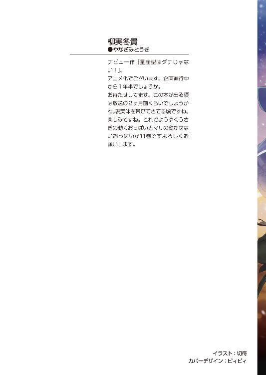
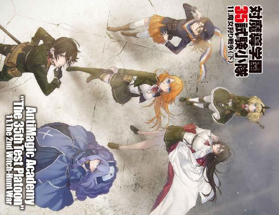
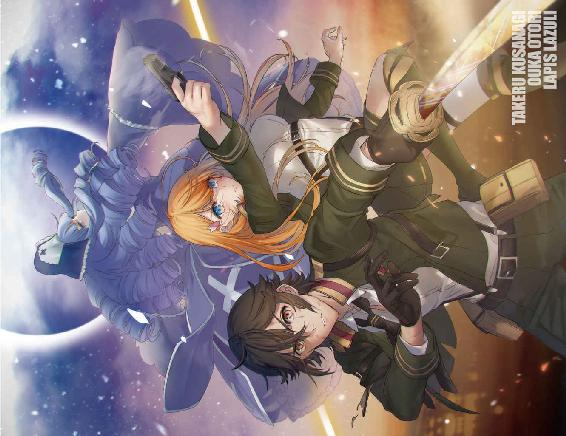
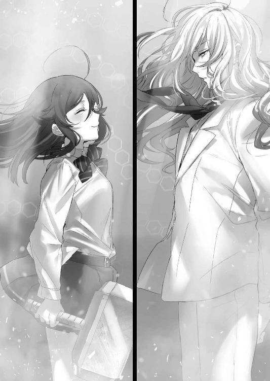
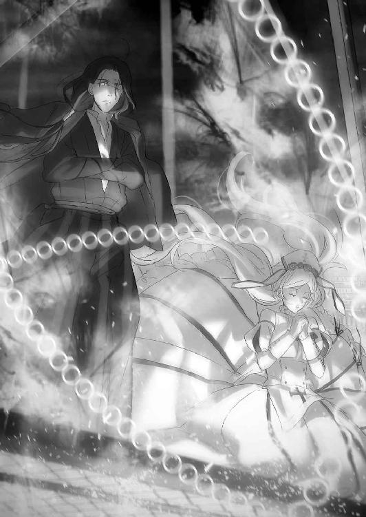
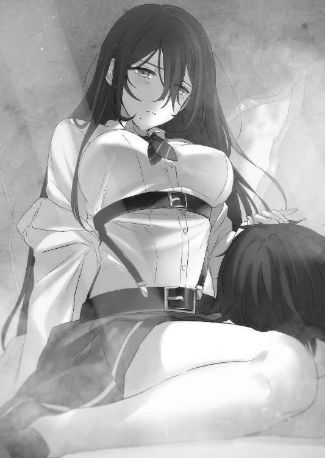
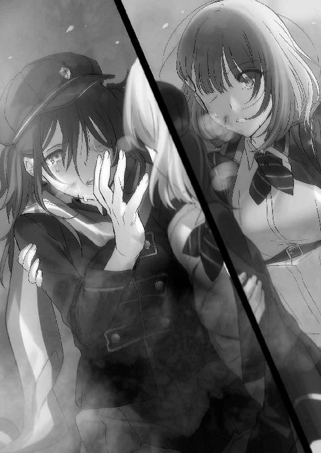
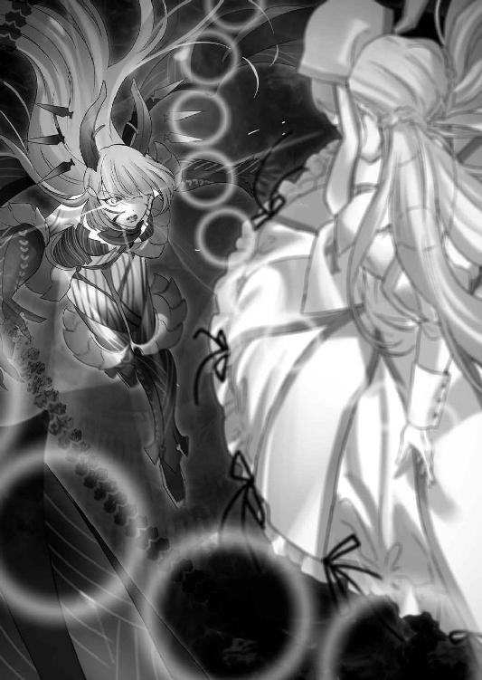
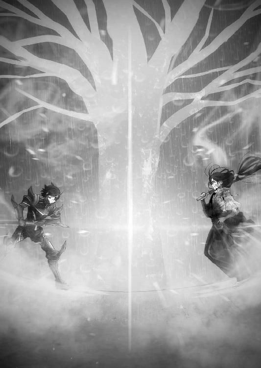

| 対魔導学園35試験小隊 11.魔女狩り戦争(下)<対魔導学園35試験小隊> (富士見ファンタジア文庫) | |
| 柳実 冬貴 | |
| (2015) | |



対魔導学園35試験小隊
11. 魔女狩り戦争（下）
柳実冬貴

富士見ファンタジア文庫
本作品の全部または一部を無断で複製、転載、配信、送信したり、ホームページ上に転載することを禁止します。また、本作品の内容を無断で改変、改ざん等を行うことも禁止します。
本作品購入時にご承諾いただいた規約により、有償・無償にかかわらず本作品を第三者に譲渡することはできません。
本作品を示すサムネイルなどのイメージ画像は、再ダウンロード時に予告なく変更される場合があります。
本作品は縦書きでレイアウトされています。
また、ご覧になるリーディングシステムにより、表示の差が認められることがあります。
口絵・本文イラスト 切符
プロローグ
「彼方さんはさ～、こんな世界壊れちゃえばいいって、思ったことある～？」
中庭の木の下で、ひび割れた空を見上げながら、星白流は背後にやってきた大野木彼方にぽつりと言った。
接近したことに気づかれたことを、彼方はいまさら驚きはしなかった。
「何度もありますよ。上司からの無茶ぶりとか、上司からの冷たい一言とか、上司からのサービス残業宣告とか、そういう時はみんな死ねばいいのにと思うこともあります」
「彼方さんらしいな～。鐵隊長ってそんなに厳しい人だったんだね～」
「ええ。それはもう、何度心の中で死ねばいいのにと呟いたことか」
「うふふ。でもそれって、きっと信頼されている証拠だよね～」
信頼されていると言われて、「それはどうでしょうね......」と返してから、彼方は流の小さな背中を見つめた。
大野木彼方は、この少女の底の知れなさを出会った頃からよく知っていた。
まだ隠密として新人だった頃、赤い蝶の虫籠の軌跡を追い、峰城和眞の足取りを調べ始めた時、彼方は流と出会った。
流は彼方に「これ以上踏み込むと、あなたもうちも命を狙われることになりそうだから、ここはひとまず手を組まないかい？」なんてことを言ってきたのである。
その頃から、彼方と流の関係は始まったと言える。峰城和眞の死後、どのようにして異端同盟のリーダーになったのかは、彼方も知らない。
そもそも星白流という少女の素性はよくわかっていないのだ。
決壊症候群を煩った姉がおり、貴重なサンプルとして異端審問会に実験台にされたあげくに命を落としたと本人は言っていた。確かに星白という姓を持つ女児にそういう少女がいたのは間違いない。戸籍は流の姉になっているし、書類上は流は完全に星白という一般家庭の娘だ。
こんなものは噓である。彼女の生い立ちは書類にしか記されていない。星白家の敷地には家が建っているだけで、まるでハリボテのように中はもぬけの殻だ。
この少女の経歴は実のところ噓しかないのだ。
出身も、年齢も、全てが噓である。
恐らく、彼女のことを知っている者は異端同盟の初期メンバーだけだろう。
「......星白さんは、世界が滅びてしまえばいいと思ったことはないんですか？」
「ないよ」
即答だった。
ひび割れた空を見上げながら、珍しく淡々と、はっきりとした口調で流は言った。
「本当に世界が滅びればいいと思ったことは一度もないよ～。心の底からあの世界が大好きなんだ」
「............」
「だからうちはなんとしても守らなくちゃいけないんだ。あの混沌とした世界をね」
そんな人間、本当にいるのだろうか。
シンプルでわかりやすい分、不気味だった。国や世界を守ろうとする人々には必ず動機がある。妹や仲間を守ろうとする草薙タケルにしろ、法と秩序を守ろうとする鐵隼人にしろ、個人や概念のために世界を守ろうと奔走している。彼方もそれは同じだ。
だが流は違う。
世界が好きだから世界を守る。理由にはなっているが、その理由に説得力が無い。
「うちにとってあの世界は、楽園だからね～」
「............」
星白流の精神に欠陥があるのは異端同盟の人間なら誰でも知っている。
負の感情が抱けない。悲しみや憎しみを感じることができない。
故に他者に共感できない。
生きづらいと感じたことはないのだろうか。
そんなことすら感じることができないのはわかっているけれど、彼女にとってこの世界は幸せとはほど遠いものだったのではないだろうか。
流の背中を見ながら、彼方はいつもそんなことを思っていた。
無論、今この時も。
彼女が世界を守ろうとする理由が、見えてこない。
世界を愛する理由が見えてこない。
「今本拠地を放棄することは得策とは思えません」
「............」
「戦争を終結させたとして、鳳颯月を殺したとして、異端同盟の存在意義が消えることはありません。我々には帰る場所が必要です」
『神話世界の断片』と呼ばれるこの空間にいた異端同盟の人間は全員元の世界へ戻っていた。
外の世界で戦争が始まった今となっては、異端同盟が身を隠す理由はほとんどなくなった。全勢力をもって戦争を止めなければならないのだから、当然かもしれない。
異端審問会、幻想教団......異端同盟は第三の勢力と呼ぶにはあまりにも小規模かつ貧弱だ。情報戦は抜きん出ていたが、単純な戦力では圧倒的に他に劣っている。持ち得る情報をフルに活用し、両軍の隙を突いて敵のトップの首を取るのが異端同盟に残されたやり方だ。
それ故に、異端同盟には帰る場所が必要なのだ。
各組織の裏で暗躍し、世界のバランスを保つことが目的な以上、存続し続けることにこそ意味がある。
「......残念だけど、そうも言っていられなさそうなんだよね～。みんなをここから退避させたのは、戦争が始まったからじゃないんだ」
「......では何故です？ 我々にとって、ここほど安全な場所はありません」
「可能性として考えられるだけだけどね......もしも鳳颯月の正体がその可能性に合致してしまうものだったら、ここはもう安全じゃなくなってしまうのさ」
彼方が首を傾げると、流は微笑みながら振り向き、のたのたと彼方の方へと歩いた。
「だからさ～、彼方さんも先に向こうに戻っててよ」
「星白さんを置いていけるわけないでしょう。もう少しリーダーであるという自覚を持ってください。私の仕事はあなたを──」
言いかけた時、不意に流が彼方に抱きついてきた。
あまりの不意打ちに、彼方は狼狽してしまう。
流は彼方に抱きつきながら、嬉しそうに息を吸い込む。
「......ほ、星白さん？」
「彼方さん、静ちゃんの代わりにうちを守ってくれて、今までありがとね～」
何を言って──そう言いかけた時、彼方の背中が熱を持った。
慌てて背中に貼り付けられたものに触れようとしたと同時に、彼方の身体が光を帯びる。
「転送魔法の呪符......!?」
「現地の人達と合流して伝えてあげて。作戦はプランＣに変更。草薙君を全力で援護して、草薙オロチとマザーグースを止めるんだ」
簡潔に命令し終えて、流は彼方から離れてバイバイと手を振った。
魔法は発動してしまった。いまさら止めることはできない。
彼方は流の行動の意味を考えることを放棄し、聞くべきことを聞く。
「その先は!? まだ草薙君達が峰城和眞の文書を追っているんですよ!? 鳳颯月はどうするつもりなんです!?」
「うちが時間を稼ぐ。でもその先は......ごめんよ、草薙君とラピスちゃんに任せるしかない」
眉根を下げて、頰を搔きながら言った。
彼方は流に手を伸ばす。
「星白さん......あなたは何を──！」
全てを言い終える前に彼方の身体は魔力の粒子と化し、その場から忽然と姿を消した。
一人きりになった流は、どこからともなく吹いてきた風に髪を靡かせながら、空を見上げる。
ひび割れた世界。壊れた世界の断片。
この世界が残存している理由は、流にもわからない。
世界が衝突した理由も、衝突する前のことも、確証を持てるほどの情報が無い。
全てを知るのはあの男しかいない。
そう。世界の真実を握るのは──
「......話を聞かせてよ、鳳颯月」
──彼、ただ一人だ。
木の幹の反対側に人の気配がある。
幹に背を預けて佇むのは、白い髪と白いスーツの男だった。
「驚いたな。まさか私が来ることを予測していたとはね」
白い男、鳳颯月は口元に笑みを湛えながらそう言った。
流と颯月は互いに木の幹に背を預けたまま、壊れかけの世界で対峙する。
「勘だよ、勘～。こちらがあなたの正体を探っているとバレてしまっていた以上、あなたがうちらの本拠地の場所を見つける可能性は低くなかったしね」
「それで同盟の人間を全員退避させたと？ たいしたものだ。となると、私の正体についても、君はある程度予測していたというわけだね」
流は黙り、下を向いてため息を吐いた。
「確証はなかった。だから草薙君達に証拠となる峰城さんの文書を追わせてたんだけど」
足下の石ころを蹴飛ばして、流は下を向いたまま頰を指で搔く。
「......神様かぁ。正直、違ってほしかったな～」
「だよね。私もそう思う」
肩をすくめながら、颯月は苦笑する。
「可能性に気づいたのはいつからだい？」
「あなたの目的が破滅であり、自分の死そのものなんじゃないかって思い始めたのは、キセキちゃんを利用しようとしていて、なおかつ草薙君を神狩り化させようとしていたとわかった時さ」
流は足下の木の葉を拾い上げ、指先でもてあそびながら、話を続ける。
「あなたは一五〇年前から草薙家に依存していた。そして、本当に手中に収めたかったのは草薙家の男児であり、女児の方じゃない。一五〇年前の時も本命は草薙オロチ......草薙ミコトは彼を神狩りにさせるためのトリガーでしかなかった」
草薙家を利用していた前例があったからこそ、流が颯月の正体に気づけたと言ってよかった。
「人類を滅ぼすだけなら百鬼夜行だけで十分。それなのにあなたは『神狩り』という存在を作りだそうとしていた。あれは世界を滅ぼす力じゃなくて、神を殺す力なのにね。わざわざオロチさんや草薙君に憎まれるようなやり方をしながら、あなたは神を殺す力を必死に手に入れようとしていた」
「............」
「あなたの目的は破滅なのに、神殺しの力にこだわるのは妙だと思ったんだ」
「......それだけの判断材料で......すごいな、君は」
世辞ではないのだろう。声にいつものふざけた様子は一切無かった。
敵に誉められるというのは複雑だな、と流は思った。
別にすごいことだとは思わなかった。こんなものは妄想みたいなものだし、様々な可能性を考慮して組織を動かすのはトップの人間に課せられた義務のようなものだからだ。
組織を動かす以上、トップは賭をしてはいけない。
神を殺して世界を滅ぼすことが鳳颯月の目的だと気づいても、彼自身が神かどうかの判断は勘と言わざるを得なかった。いくら可能性があるといっても、確証がなければ組織を動かすことは許されない。
だが流は、今回ばかりは賭をした。
異端同盟の人員を退避させたのは、戦争終結へ向けて総力戦を挑むためではない。
この男がこの世界へやってくることを予期してのことだった。
「正解だ。私はあの世界の神であり、あの世界の命そのものと言っていい。無論、望んでそうなったわけではないがね」
「......あなたは、神話世界と現実世界が衝突する前の存在ということでいいのかな？」
「そういう認識で構わない。元々我々が生きていた世界には魔導など存在しなかったという説は正しい。魔導とは、神話世界との衝突により再構築された世界に生じたバグのようなものだ」
「バグ？」
流は興味深そうに口の端を上げる。
「詳しく聞きたいな～」
「面白い話ではないよ」
「よければ聞かせてくれないかな～」
流がお願いすると、颯月は肩をすくめた。
「君達からすれば、これは神話ってことになるのかな。古い古いおとぎ話だ。魔導の存在しなかった頃の世界は、今よりも格段に科学技術が発展していて、それこそ魔法のようなことが自在にできるような世界だった」
「............」
「全てが変わったのは人類が異世界とのコンタクトを試みたためだ。異世界とは、君達が神話世界と呼んでいる空間のことさ」
彼の声から感じられる感情は、郷愁と呼んでもよかったのかもしれない。
およそ人間味という言葉からはほど遠い人物であるという鳳颯月への評価を覆しかねない感情の隆起がそこにあるように思えた。
あるはず......なのだが、流には何か引っかかる。感情に欠損があるおかげで、逆に人の感情に敏感になった流は、その引っかかりに感づくことができた。
「そうしてコンタクトに成功したのが全ての間違いだったのだろう。結果的に神々と人間の間で戦争が起こり、世界同士が衝突し、神々の世界と交じり合った人間の世界には魔導が溢れた......実に嘆かわしいことだ」
その時だけ、颯月の声に憎しみの感情が宿る。
しかしおかしい。妙だ。
何か噓くさい。
言っていることは真実なのかもしれないが、彼の感情が噓くさい。
鳳颯月が世界を破滅させようとしている理由は、本当に憎しみなのか？
人間の世界に魔導が溢れたのが神のせいであり、魔導そのものが神々の遺産であるとするならば、元の世界の人間が魔導を憎むのはわからなくもない。
しかし彼は神だ。神が魔導を憎む道理はどこにある？
「私が魔導をバグと呼んだのはそういう理由だ。魔導は神々の世界のせいで生まれたバグなのだよ」
途方も無い話だが、理屈はわかった。
流は真髄を確かめるために、最後の問いをする。
「あなたは誰なの？」
神なのに神を憎む存在。
流は北欧神話の伝説に、一人そういう存在がいたことを覚えていた。
颯月は答える。静かに、淡々と。
「私は人工的に作られた神なんだ。半分人間で、半分神。そういう存在だった」
「............」
「この世界に伝えられている改変された神話の中では、ロキとか呼ばれていたかな。実際にそう呼ばれたことは一度も無いし、あんな大げさな存在ではないけどね」
ロキ......あまりにも有名な悪魔だ。
どんな神話世界にも、悪魔に分類される存在がいる。だいたいが元々は神だったり、善性が悪性に転移した結果、悪魔と成り果てている。こういった神話世界の類似性は、異世界同士が一種の平行世界であるからだという仮説が立てられていた。
ようは颯月は北欧神話世界の悪魔だったというわけだ。
なら、神々を憎むのも間違ってはいない。
「............」
でもナゼか、その憎しみはやっぱり噓くさい。
彼と憎しみという感情が合致しないのだ。
「私からも質問いいかい？」
「どうぞ～」
「逆に君は何なんだい？ どういう存在なんだ？」
その問いに、流は苦笑しながら肩をすくめた。
「実はうちにもわかんないんだ～」
「わからない？」
「うちは、この世界......北欧神話世界の断片で生まれたらしいんだよね。記憶も無かったし、知識も無かったけど、最初からここにいた」
颯月がわずかに目を細める。流はニコニコしながら身の上話を進める。
「もう一つ世界があるって知ったのは、異端同盟の人達がここにきてからなんだ～。うちはあの頃言葉も話せなかったから、同盟の人......峰城和眞さん達に育てられたのさ」
「......では、君は神々の生き残りということになるのか？」
「うんにゃ～、わかんない。だってうち、魔法使えないし。身体も構造は人間だしね～」
「ふむ......私と同じだね。君はもしや、魂が神なのではないか？」
流はもう一度肩をすくめる。
「さあ？ それもわからない。うちはあなたと違って不死身じゃないし」
「............」
「──あのさ」
突然、流は木の幹から離れ、くるりと回って颯月の前にやってきた。
そして、まん丸な大きな瞳で、颯月の顔を覗き込む。
「あなたはあの世界を憎んでいるように演じているけど」
「............」
「本当は違うでしょ？」
ニヤリと笑って、流が颯月を指さす。
颯月は目をパチパチさせて、きょとんとした。
「ほんとはさ──ぶっ壊すのが好きなだけだよねっ？」
どーよ、と流がドヤ顔をしてくるのを見て、颯月も思わず笑ってしまう。
口元に手を当てつつも、いつものチェシャ猫のような笑みを浮かべた。
「......バレたかい？」
「うん！ うちは嬉しいとか、楽しいとか、そういう感情は共感できちゃうからね～。あなたからはさっきからどう考えても憎しみじゃなくて楽しさみたいなのが感じられてたんだ」
「本当に鋭いな。そうさ、今長々と語って聞かせたのは全て真実だが、建前だ」
颯月はキリッと顔を引き締めて、胸に左手を当てながら右手を広げた。
「──ぶっちゃけ神とか魔導とかどうでもいい、破滅が私の生き甲斐なんだ！」
心底楽しそうに言ってから、「いや、死に甲斐か？」と首を傾げる颯月に、流は「やっぱりね～」と嬉しそうに胸を張った。
だが、その後すぐに、流は頰を指で搔く。
「......じゃあ、やっぱり、あなたはうちの敵だ」
颯月も苦笑して、流がしていたのと同じように肩をすくめる。
「敵だったなら、どうするんだい？ 私は君を殺しに来たんだが」
「んー......」
唇に人差し指を当てて、流はしばし思案する。
そして、うんと頷いてみせて、にっこり微笑んだ。
「決めた。あなたをこの世界の破壊に巻き込むことにする」
風が吹いて、颯月と流の髪が揺れる。
いつの間にか流の手に、柄の短い槌のようなものが握られていた。

颯月が少しだけ表情を険しくする。
「......ミョルニル......世界を破壊するための神器か」
「レーヴァテインと一緒で半壊してるけどね～。でも、ここみたいな壊れかけの世界の断片なら、一撃で壊せると思う」
「......私をこの世界の破滅に巻き込んだところで、私は死ねんよ？」
流はノンノンと人差し指を横に振った。
「死なれちゃ困るもん。うちの大好きなあの世界が滅びちゃうし～」
「君は死ぬぞ？ 恐らく君は、この世界の断片の神だ。神が死ねば世界は滅ぶ、世界が滅びれば神は死ぬ」
「構わないよ～。うちが死んで、少しでも時間稼ぎができるならね～」
あっけらかんと言ってのけた流に、颯月は呆れ顔でため息を吐く。
流はニコニコしながら風に髪を揺らしていた。
「......最後にもう一つ聞かせてほしい。君があの混沌とした世界を愛する理由はなんだい？」
颯月が問うと、流は両手を広げて満面の笑みを浮かべた。
「──あの世界には、不幸な人がいっぱいいるからっ！ うちの生き甲斐は人を救って幸せにすることだからっ！ だから愛しくて仕方がないんだよ～！」
その笑顔はまるで天使のようで、
女神のようで、
そして──無邪気な悪魔のようだった。
颯月はくつくつと喉を鳴らして笑い、流を見る。
「私も大概だが、君も相当だな！」
「そっかな～っ？ えへへ～」
似たもの同士の二人は無邪気に笑い合い、
そして、別れを告げる。
「こういう語らいができる相手がいなくなることを......寂しく思うよ」
噓なくせに、と思いつつ、流はミョルニルを振り上げる。
そして──
「ごめん～、うち、寂しいとかそういうの、わっかんないや～」
──星白流は、世界を破壊した。
第一章 代償
目を開けると、脳が揺れ動いているのを感じた。
激しい吐き気に喘ぎながら、飛び出そうなくらいに痛む眼球で辺りを見回す。
世界がおかしかった。
全てがスローに見える。音も、空気も、光さえもどこか緩慢に感じる。
見ているだけで気が狂いそうな光景だった。
草薙タケルは自分がこうなってしまった経緯をすぐに思い出した。
峰城和眞の文書を追って臨界点に侵入し、そこで鉢合わせたエグゼや鐵隼人との戦い。隼人の圧倒的な強さに追い込まれ、為す術もなく敗北しようとした時に──タケルは人としての境界線を越えてしまった。
なんとか覚えている。あの獣のような思考も、このままでは後戻りできなくなるという人間としての危機感も、覚えている。
この目の前の光景は、あの時の状態の延長だ。
身体中の内臓を吐きだしてしまいたい衝動に駆られる中、草薙タケルは呼びかける。
（ラピ、ス......ラピス......）
それは助けを求めるような声だった。
事実、タケルはこのどうしようもない脳の暴走の最中で相棒に救助を求めていた。
このままでは死んでしまうと思った。こんな世界は人間が到達していい場所じゃない。もう一秒だって耐えられない。
そう思った時、
《──宿──主───私──が────聞こえますか？》
相棒の声が頭の中に届いた。
まだ遅い。あまりにスローすぎて意味を把握するまでに時間がかかりすぎている。
《聞こ──えて──いると──信じて──続けます。今宿主は脳の稼働率が跳ね上がり、暴走している状態にあります》
次第に声が追いついてきてはっきりと聞き取れるようにはなったが、まだタケルの世界は通常に戻っていない。世界は遅いままだ。
どうすればいい？
その想いだけをラピスへ送る。
《恐らく......宿主が普通の状態に戻ることは一生無いでしょう。それほどまでに宿主は人としての一線を越えてしまった。宿主の脳内処理速度は、この状態がデフォルトになります》
............。
冗談じゃねぇぞ。こんなもの、耐えられるものか。
タケルは白旗を上げたい気分だった。
《この状態では宿主の寿命が尽きてしまう。対処法は一つです。掃魔刀と逆のことを行ってください。今の宿主ならば、できるはずです》
掃魔刀の逆と言われて、タケルは目を閉じた。
掃魔刀は言うなれば脳のリミッターを解除すること。任意で火事場の馬鹿力を発動させていると言っていい。
オロチとの修行の日々を思い出す。
掃魔刀を習得するために行った鍛錬は、単純かつ熾烈だった。
鍛錬の内容は高さ一〇〇メートルの場所から谷へ飛び降りるだけだ。というより、オロチに突き落とされるだけだった。突き落とされたタケルは崖の岩場や木の枝に摑まったりして墜落を逃れ、崖をよじ登る。そして崖を登り切って、またオロチに蹴落とされる。
それを毎日何十回も繰り返した。無論、毎日のように骨折したし、命を落としそうになったことは数え切れない。
けれど繰り返すうちに、タケルはコツを摑んだ。命の危機に慣れて、その対処にも慣れることができた。
あの感覚は忘れられない。まるで脳みそに鍵のかかった蓋があって、それを無理矢理こじ開けるようなイメージだ。
その逆をやれと、ラピスは言っている。
蓋を......閉じる。
「......────っ......く！」
強風で閉じることのできない窓を閉めるように、タケルは意識を集中させる。
普段ならば掃魔刀が発動してもすぐに止めることができたのに、暴走状態にある今は度し難い集中力を要した。
閉じろ、閉じろ。
そう念じながら歯を食いしばった瞬間、
──ズゥゥ......ン。
重低音のような耳鳴りが聞こえた直後、世界が元に戻った。
呼吸が正常に戻り、酸素が肺に送り込まれ、身体の痛みや感覚が戻ってくる。
「......ぃ......つ......！」
頭痛は酷いし眼球は破裂しそうなくらいに充血して悲鳴を上げているが、なんとか元通りの状態に戻ることができた。
《気を抜けばすぐにまた暴走するはずです......お辛いでしょうが、その状態が維持できるように集中してください。私も微力ながらお手伝いしますので》
暴走状態がデフォルトになってしまったのは本当らしく、蓋をしても押さえていなければ再び開いてしまうような状態だった。
ラピスの言葉に脳内で頷いてみせて、タケルは現状を把握するために顔を上げた。
「──タケル、目を覚ましたのか!?」
桜花の声が耳に飛び込んできて、タケルは返事をしようとした。
が、思いっきり舌を嚙んでしまった。
「あでっ......な、何だ？」
やたらと身体が上下に揺れていた。
どうやらタケルは桜花におんぶされているらしかった。桜花はタケルを背負いながら全力で走っている。
「桜花、何をそんなに急いで──」
「悪いが状況を説明している暇は無い！ 舌を嚙まぬように歯を食いしばっておけ！」
こちらの状態など気にもせず、桜花は全力疾走だ。
男が女子におんぶされているという状況に、タケルはちょっと情けない気持ちになった。
鐵隼人との戦闘からどれくらい時間が経ったのだろう？
峰城和眞の文書はどうなったのだろう？
またもや気を失ってしまった自分を不甲斐なく思いながら、タケルが首を動かして後ろを見ると、そこには、
──何か、どす黒い嵐のようなものが背後に迫っていた。
「......な、なんだこりゃ......」
ギョッとするとは正にこのことだった。
桜花の後ろには、マリやうさぎ、斑鳩に京夜がいた。
みんな青い顔で必死に走っている。
「不可視災害よ不可視災害！ 触れただけで天国ツアーにご招待の不可視災害ー！」
足首に飛行輪を展開させて、タケルの真横に飛んできたマリが叫ぶ。
「もしかして俺が気絶してから......」
「五分も経ってねぇんだよこの早起きが......！」
さらに横にやってきた京夜が不機嫌そうな顔で言った。
「五分!? あれからたったの五分しか経っていないのか!?」
「そーよ。ごらんの通り、時間切れで不可視災害から逃げている最中」
京夜の背中に負ぶさっている斑鳩が、いつも通り気だるそうに言った。
「時間切れ......じゃあ、作戦は失敗したってことか......鐵さんはどうなったんだ？」
「文書の回収には成功したわ。鐵隼人は......わからない。私達を逃がすためにあの場に残ったようだけれど、普通ならまず助からないわね」
「............」
タケルの記憶は最後の一撃を放った直後からすっぽりと抜けている。
だが、あの劣勢から鐵隼人に勝利できたとは到底思えない。隼人が三五小隊を逃がすためにあの場に残ったということは、自ら引いたのだろうか。
正直言って複雑な心境だった。
隼人とは結局わかり合えなかった。相反する信念を同じ方向に進ませることはできなかった。
もっと別の結末もあったのではないかと、後悔の感情が先に立つ。
「鐵隊長の行動を無駄にしないためにも、なんとしてもこの文書を持ち帰らなくてはならんのだが......」
「ぶっちゃけ際どいわね......！」
うむ、と走りながら桜花は頷いた。
マリも戦闘で消耗が激しいのか表情が硬く、桜花は負傷もしていた。京夜も隼人の一撃をもろにくらって、まだ完全には回復していない。その上で、彼は斑鳩を背負っている。
そして、
「はっ、はっ......！」
問題はうさぎだった。素の運動神経は悪くないのだが、大きな銃を担いでの全力疾走は並大抵の辛さではない。
「うさぎ！ 大丈夫か!?」
タケルが心配して声をかけると、うさぎは疲れ切った顔を上げて何か言い返そうとした。
「ら、らいじょうぶれす──わっ!?」
めくれ上がった地面のタイルに足を取られ、そのまま転倒してしまう。
激しく地面を転がるうさぎを見たと同時に、タケルは桜花の背中から飛び降りた。
（──間に合えッ！）
掃魔刀を発動。身体中の筋肉を酷使して、全力で地面を蹴った。
《宿主！ いけません！》
ラピスの制止の声が聞こえたが、タケルの動きが一刹那速かった。
周囲の動きが再びスローになる──否、完全に停止する。
その状態で身体を動かした時、タケルの意識が激しくぐらついた。
「う──ぐぅっ......！」
脳に焼いた鉄の杭でも差し込まれたような感覚に、タケルはさっきと同じ方法で掃魔刀を解除してその場に膝をついた。
走っていた全員が振り返り、タケルとうさぎに駆け寄ろうとする。うさぎもタケルが駆けつけようとしたのを見て立ち上がるが、膝を痛めたのか動けずにいた。
今ここで止まっては間に合わない。目の前まで不可視災害が迫っている。到達まで三秒もかからないだろう。
掃魔刀を使用しなければ、うさぎは──！
「おぉッ──！」
苦痛を振り払って再び前に出ようとする。
うさぎに手を伸ばして飛び出す。
背後に迫る暗黒の渦がうさぎを飲み込もうとする。
間に合うか間に合わないかの瀬戸際で、タケルの手がうさぎの手に触れようとした瞬間。
──うさぎが目の前から消えた。
「ッ!?」
伸ばした手が空を切る。
直後、目の前に迫っていた不可視災害が、津波のようにタケルの身体に襲いかかった。
これは避けられない。
タケルは死を覚悟した。
「──相変わらず無茶をするな、貴殿は」
男の声が聞こえたと同時に、いきなり左腕を引っ張り上げられる。
タケルの身体はそのまま勢いよく急上昇、雲にまで届くか届かないかというところでようやく上昇が止まった。
不可視災害に飲み込まれる臨界点を見下ろしてから、タケルは自分を引っ張り上げた人間を確認する。
「間一髪だったな」
箒型の飛行デバイスに跨がってタケルの腕を摑むのは、切れ長の瞳とプラチナブロンドの持ち主だ。
純血の徒第七学徒分隊隊長であり、異端同盟の一員でもあるセージだった。
うさぎが消えたように見えたのは、彼の部下が上空から引っ張り上げてくれたからだ。
第七分隊の他メンバー達が三五小隊の仲間をデバイスに乗せて飛行し、上昇してくるのも確認できた。
「みんな無事か!?」
声をかけると各々無事であることを伝えてくる。約一名、京夜だけデバイスに乗るスペースが無かったため箒にぶら下がったまま飛んでいた。
「よし、全員無事だな！」
「これが無事なように見えんのかてめぇこら草薙──うおおおおお!?」
強風に煽られて京夜がたなびくのを無視して、自分を助けてくれたセージを見上げる。
「あんたら......別の任務に関わってたんじゃないのか？」
「予定が変わった。我らに課せられた新たな任務は、貴殿らを救出することだ。間に合ってよかった」
セージはタケルを引っ張り上げて、デバイスの後部へ座らせる。
タケルは安堵の息を吐いて魔女狩り化を解いた。
「......助かった。セージ達がこなかったら今頃聖域の中だ」
肩を叩いて礼を言うと、セージは「気にするな」と返した。
「予定変更って......何か起こったのか？」
「ああ。異端同盟本拠地より、全ての人員が退避したそうだ。現在、こちら側の世界に全員戻ってきている」
「全員？」
「......訂正だ。星白殿の行方がわからない。大野木殿の話では、単身で本拠地に残ったのだそうだが、それ以上のことはわからない......通信が途絶えたのでな」
タケルは驚きつつ目を細めた。
異世界にある本拠地から同盟のメンバーを退避させる理由も、流が一人で残った理由も見当がつかなかった。
自分が考えても仕方のないことだというのはわかっているが、何か異常な事態が発生したとみて間違いないだろう。
「草薙、貴殿らの任務は成功したのか？ 文書を追っていたという話だったが」
「......ああ。なんとかな」
あれを成功と呼んでいいものかわからないが、目標を確保できたのは事実だった。
「確認は後だ。今は急ごう」
セージは飛行速度を上げて降下し始めた。
「我々は一度身を隠す。今後について話し合う必要があるだろう。貴殿らの任務中に世界情勢に変化があった」
「敵に動きがあったのか？」
「............」
雲を突き抜け、眼下の街並みが見える高度までやってくると、セージは告げる。
「審問会本部周辺に幻想教団が出現──今、街は地獄だ」
タケルは息を吞むと同時に、遠方のビルの並ぶ街を見た。
至る所から立ち上る爆炎と煙の柱。
住み慣れた街を炎が包んでいた。
＊＊＊
街を炎が包んだのは、一瞬の出来事だった。
転送魔法により出現した魔法使い達の奇襲は、街の防衛に当たっていた騎士団達を混乱させるには十分だった。
敵が転送魔法を使用することは予め審問官達に伝えられていたため、アナリシスフィルターを搭載したゴーグルやドラグーンのメインカメラで転送の予兆となる魔力の乱れを感知することができる。
が、それで対処できるほど敵の数が少ないはずもなかった。
まるで伏兵のように物陰から、背後から、地下から現れる魔法使い達に、審問官達は翻弄されていた。
神出鬼没の魔法使い達は、飛行デバイスに乗りながら攻撃を開始。
地上へ向けて無差別に攻撃をしていた。
ここ、第一八防衛線は主要な駅が近いこともあり、この時間は仕事終わりの会社員や学校帰りの学生でごった返している。
避難誘導が追いつかず、シェルターには砂糖に群がる蟻のように人が押し寄せていた。
「こうなることがわかっていたのに、どうして上層部は一般人の疎開を優先しなかったの......!? 全員をシェルターに収容することなんて不可能よ！」
避難誘導を行っている薬師の一人が、人込みに逆らって走っている。審問会本部があるこの街のシェルターは核にも耐えられる優秀なものだが、その収容人数は街全体の人間をまかなえるほど大きくはない。しかも転送魔法による奇襲を受けて混乱している状況では、まともな避難誘導などできるはずもなかった。
敵は転送魔法で街中に出現するのだ。防衛線がほとんど意味をなさない。拠点を崩すのに転送魔法ほど有用な魔法はないだろう。
《エグゼより通達。人員を避難誘導に割かず、本部の防衛を最優先、前線部隊は敵の殲滅に集中しろ》
「冗談じゃない！ こんな状況を見過ごして何が異端審問官よ！」
上からの命令を無視し、薬師は動いた。
背中を魔弾に撃たれて痙攣している女性を抱き起こしながら、薬師が魔力の中和剤を女性の首に注入する。魔弾の恐ろしいところは威力だけでなく、その毒性にある。普通の人間は血中に魔力が侵入すると拒絶反応を起こし、死に至るのだ。
薬師は女性を担いでシェルター付近の救護所まで移動しようとしたが、目の前の光景に絶句した。
大通りを埋め尽くす負傷者と死体の数々。そして今もなお攻撃を続け、空を埋め尽くすほどの数の魔法使い達。
境界線で行われた戦闘とは違い、ここは一般人で溢れかえっている。
戦争が始まったという事実を否が応でも思い知らされた。
赤いローブの魔法使い達が薬師に気づき、杖の先へ魔力を収束させていく。
薬師はどうすることもできずに、絶望したまま敵の軍勢を見上げていることしかできなかった。
《──一斉掃射！ 撃ち落とせ！》
だがその時、薬師の背後から機銃の掃射が魔法使い達へ開始された。
暴風のような弾丸の雨が通り過ぎ、上空の魔法使い達を蹴散らしたのを薬師は確かに見た。
振り返るよりも先に、背後からドラグーンの機動部隊が薬師と一般人を守るように滑り込んできた。
《上の命令など無視しろ！ 第五装甲機動隊は市民を守る盾となる！》
《《《《了解！》》》》
ミニガンによる弾幕射撃を行い、第五装甲機動隊の隊長がドラグーンを駆りながら一〇機の僚機を伴い突撃する。
ドラグーンの装甲は並の魔法使いの魔弾では傷一つつかない。まして第五装甲機動隊は元々騎士団のエリートで構成された部隊だ。旧式の機体であろうと彼らのドラグーンの操縦練度は審問会でもトップクラスだった。
《我々はここのシェルターを死守する！ 避難誘導部隊はできるだけ多くの市民を避難させろ！》
隊長機が右腕に装着した巨大な盾をアスファルトの地面に突き立て、ライフルを構える。
薬師は靡く髪を手で押さえながら、わずかな希望を胸に灯した。
審問会全体が統合され、全ての審問官がエグゼの指揮下に入ったといっても、全員がそれに納得しているわけではない。
騎士団の本分。薬師の本分。隠密の本分を忘れず、その誇りに従ってこの戦いに挑もうとしている者がまだたくさんいた。
審問官の増援に、空を飛んでいる魔法使いの隊長は舌打ちをした。
「怯むな！ 制空権は我らにある！ 敵の機械人形は防御と火力はあれど愚鈍だ！ 後衛は大魔法発動準備、蹴散らすぞ！ 前衛は敵の注意を逸らし後衛を守れ！」
箒に乗った魔法使い達が蜂のように空を飛びながら、ドラグーンの部隊へ牽制攻撃をしかけてくる。
ビルの屋上に着地した後衛の魔女部隊は巨大な魔法陣を展開した。
《二時方向、ビル屋上に敵の魔力反応増大！》
《目標はビル屋上、全機集中砲火！ 大魔法を阻止しろ！》
ドラグーンが全火力をビルの屋上へ向ける。
だが、届かない。射程距離外な上に防護結界を張られているため、どうあっても弾が届かなかった。
《っ！ 全機、私を援護しろ！》
隊長機がミニガンと盾を捨てて、足裏のキャタピラを回転させ、ビルに向かって猛スピードで走り出した。
部下達は命令通り、肩のミサイルポッドを全弾発射させて隊長機を援護する。
魔法使い達も黙ってはいない。こちらが特攻をしかけようとしていることに気づき、一斉に隊長機へ魔弾を放つ。
《おおおおおおおおおおおッ！》
隊長機は魔弾の雨をかいくぐり、ビルの下までくるとバーニアを点火させて屋上へ向け跳躍した。
エネルギーを使い果たすつもりで、隊長機がビルの屋上へ昇る。
彼の目の前に立ちはだかったのは敵の隊長だった。
「やらせるものか！」
敵の隊長が五重の防護魔法を展開。ビルの上の魔女達を守るように両腕を広げる。
隊長機はバックパックの魔力減退塵をまき散らすと同時に、ドラグーンの右拳を思い切り振りかぶって防護結界にお見舞いする。
二枚の結界を破ったものの、拳は魔法を貫けない。
その時──屋上の魔法陣が完成した。
《しまった──！》
大魔法の発動を予期し、第五装甲機動隊の隊長が歯を食いしばる。
敵の隊長が口元に笑みを浮かべた瞬間。
──彼の背中を弾丸が襲った。
「バッ、バカ......なっ......」
突然襲った凶弾に魔法使いの隊長が墜落していく。
屋上で魔法陣を構築していた魔女達も、巨大な爆発に巻き込まれて蒸発した。
隊長機はブーストを抑えながら地面に着地して、ビルの屋上付近を見上げた。
光学迷彩により姿を隠していた五機の飛行型ドラグーンが飛んでいるのが見えた。
《第六隠密機動だ。騎士団にもまともな指揮官がいるようだな......空は俺達に任せてもらおう》
隠密機動......隠密のドラグーン部隊の総称だ。日陰者としてあまり表に出てこない連中だったが、どうやら上の命令に逆らって街を守ろうとする者は隠密にもいるらしかった。
隠密と騎士団の不仲は審問会内部でも有名だが、この状況でそんな諍いを持ち出すほど隊長機の男は野暮ではない。
《増援、感謝する。シェルターの防衛は騎士団が請け負った》
その言葉に応えるように隠密機動の隊長機がメインカメラを明滅させ、再び空へと機体を溶かせた。
守りきってみせる。
その場にいる全員の心は一つだった。
この街全てを守れるとは思っていない。でも、自分の手で救えるだけの人々は救いたい。一介の審問官に過ぎずとも、誰も彼もが利権や立場に縋り付いているわけではなかった。
《第五装甲機動隊。守るぞ......俺達の手で！》
隊長が希望を胸に部下達に命令を下す。
部下達は息を吞み、そして──断末魔の悲鳴を上げた。
寒気と共に隊長がシェルターの方へドラグーンの身体を向けると、防衛に参加していた仲間もろとも、シェルターの入り口が爆発した。
避難しようと集まっていた一般人も、誘導部隊も、怪我人を救助しようとしていた薬師達も、もろともに一瞬で薙ぎ払われた。
崩落するシェルターを見ながら、隊長は呆然と立ち尽くす。
守ろうとした矢先に奪われた人命に対する失意の中で、隊長はその姿を捕捉する。
まるで太古の騎士のような姿をした巨体が、魔力を身体に纏わせながら剣のような形の銃を構えて立っている。
《英雄》......召喚魔法により蘇った古の武人。
忘れるはずがない。数ヶ月前の百鬼夜行事件の折、彼もまたその脅威を目の当たりにしていたからだ。
──グルォオオオオオオオオオオオオオオオオオオオオオ！
雄叫びを上げて、機械仕掛けの英雄が魔力を吹き荒らす。
圧倒的な力の差と暴力を前にして、隊長はコックピットにてうつむく。
そして、全武装を解除、追加装甲もパージした。
両腕に備え付けられた高振動ブレードを展開させて、構える。
《きさまああああああああああああああああああああああッ！》
隊長機は英雄へ向けて突進を開始する。
もはや希望も、闘志も、何もかも一瞬で砕かれた。
あるのは無念と怒りだけだ。
英雄が隊長機の接近に気づき、剣の形をしたレールガンを向ける。
そして、魔力の収束と共に魔法使い達のものとは比べものにならない強大な魔弾を、隊長機へ向けて放つのだった。
＊＊＊
第一八防衛戦の戦いを街のシンボルでもある電波塔から眺めているのは、幻想教団幹部の草薙オロチとマザーグースだった。
奇襲作戦の成功により、戦況は幻想教団に有利だ。審問会側は奇襲のせいで統率はまるで取れていない。
「セオリー通りに奇襲を行いましたが、あっけないことです。ここまでの戦果が得られるとは想定していませんでした」
「............」
「......不満そうですね、宿主」
冷ややかに戦況を窺っているオロチを横目で見ながら、マザーが問う。
オロチは何も映らない瞳で眼下の殺戮を見下ろしながら、鼻を鳴らした。
「指揮系統がガタガタだ......下っ端が正義感で命令違反起こしてりゃ全体が瓦解する。個々の練度が高くとも、統率がまるっきり取れてねぇ」
元々審問官は役職によって指揮系統も役割も違ったはずだが、軍として機能させるために全てを統合したのだろうとオロチは推測する。
悪手だ、とオロチは断言する。
審問会でまともな軍隊として運用できるのは騎士団ぐらいだ。その指揮を魔導犯罪への対策が主な特殊部隊であり、その上新体制となったエグゼに任せるのは愚の骨頂。統一などせず個々が連携して動くだけで十分に善戦できたことだろう。
数は圧倒的に審問会の方が上なのだ。奇襲を受けたとしても指揮系統がきちんとしていれば対処のしようもあった。
審問会側のこの劣勢は、全てトップの判断が悪い。
「何より、これだけ一般人が残ってりゃ右往左往するのも無理ねぇな」
「確かに解せません。審問会は何故一般人を街に残していたのでしょう。あらかじめ避難勧告を出しておけば、これほどの被害を受けずにすんだというのに」
マザーの淡々とした言葉に、オロチは舌打ちをする。
「いや、奴の魂胆なんざ吐き気がするくらいわかりきっている」
「......？」
「颯月は一般人を避難させられなかったわけじゃねぇ。あえて残させたんだ」
オロチは目を細めつつ、その真意を話す。
「──街の人間は百鬼夜行の餌さ」
「餌？」
「百鬼夜行は何もかも飲み込み、増殖していく。だが、無機物を捕食した場合の増殖率はそこまで高くねぇ」
着物の懐に両手を入れて腕を組み、オロチは淡々と続けた。
「アレは生物......特に人間を取り込んだ時が一番増殖すんだよ。鬼ってのは昔話にあるように、本来は人間を喰う幻想生物だ。その性質は草薙の先祖が体内に封印しても変わっちゃいねぇ」
話を聞きながらも、マザーは眉間に皺を寄せた。
「......あの男は、一五〇年前と同じことをしようというのですね」
「............」
「あなたと草薙ミコトの時と同じように......あの兄妹を使って、神狩りを完成させるつもりなのでしょう」
一五〇年前。その言葉に、オロチの胸が疼いた。
第一次魔女狩り戦争の記憶は、まるで昨日のことのように思い出せた。
今でも鮮明に脳裏に焼きついている。
姉である草薙ミコトを殺した時のことも、何もかも死に絶えた世界を作ったのが自分だと自覚した時の絶望も、鳳颯月の掌の上で踊らされていたことを知った時の憤怒も、全て覚えている。
だからこそ言えることがある。
「あいつは......タケルは俺様と同じにはならねぇよ」
オロチは目を細めたまま、口元に笑みを浮かべて呟いた。
草薙オロチと草薙ミコト。
草薙タケルと草薙キセキ。
この二つの悲劇は、似ているようでまるで違う。
何故ならば、オロチに出来なかったことを、タケルはすでに成し遂げているからだ。
タケルは自分とは違う。
あいつは自分と同じ想いを背負いはしない。
でもだからこそ──今宵タケルは、オロチの前に立ちはだかるだろう。
小さく笑って、オロチは頭を切り換えた。
「ま、敵がそういうつもりなら、こっちがやることは一つだろ」
「？」
「餌を喰われる前に、こっちが喰う」
オロチの笑みが邪悪に染まるのを、マザーは見た。
「......それはつまり、この街の一般人を優先的に処分するということですか？」
「人間喰いまくって肥えた百鬼夜行の相手をするのは面倒だからな。だが処分って言い方はよくねぇ......文字通りちゃんと喰うつもりだぜ？」
容赦のない言葉に、マザーが微かに顔をしかめた。
「なんだよ？ いまさら善悪なんざ説くのか？」
「......いえ」
「人間達が死のうが生きようが、俺様達の目的が果たされれば全て元通りになる。そうだろう？」
マザーは目を閉じる。
「あなたには、良心の呵責というものはないのですか？」
少しだけ悲しそうに、寂しそうにマザーは言った。
オロチは答える。
吐き捨てるように笑いながら、断言する。
冷ややかに、冷徹に、まるで鬼のように。
「ないよ、んなもん。俺様は元からこういう人間だ。今も、昔も、生まれた頃から心底身勝手なつもりだ」
「............」
「俺様は自分の目的が果たせれば世界がどうなろうと知ったこっちゃない。お前さんもそれをわかってて俺様と契約を交わしたんだろう」
「............」
「割り切れよ。世界を書き換えるんだろうが」
オロチのその一言にマザーは目を開いた。
そして両膝をつき、祈るように両手を合わせる。
まるで懺悔でもしているかのようだった。
「──元より、そのつもりです。この世界は間違っている。我々が正さなければ......たとえどのような咎を背負おうとも」
マザーはうつむき、唇を震わせる。
同時に、巨大な白い魔法陣が屋上の床に出現した。
【刻は満ちた。死者には煤けた腐肉を、亡者には牝山羊の凝血を与えん。三度の凱歌を欲するならば、行軍の足並みを止めるなかれ。此処より先に栄光は在らず、此処より先に堕落は無い。ただ凱旋のみを求めるならば応えよ
──戦乙女が喚んでいる】
それは詠唱だった。
召喚魔法の中でも上位も上位。数多の生け贄を捧げなければ実現できない禁術、《英雄召喚》である。
魔法陣が稲光を伴い、地上から亡者のように巨大な人型が這い出てくる。
その数、一〇〇あまり。
姿形こそ機械人形のそれだが、かつてホーンテッドが喚び出した英雄、アーサー王と同じ存在である。
宿る魂と魔力は、自我を持たないながらも本物の英雄だ。英雄召喚は死者の魂を喚び出し、魔導竜騎兵に定着させることで実現する。魂のみとはいえ、人が使用できるクラスの魔法ではない。ホーンテッドが使用したのはマザーグースが用意した呪符によるものでしかない。

彼女こそが、英雄召喚を生け贄無しで不完全ながらも実現できる唯一の存在。
古代属性『神威』を持つ、神器『グングニル』なのである。
「何度見ても、お前さんの喚び出す英雄は気にくわねぇ。歴戦の勇士達も、こんなゾンビにもなれねぇような木偶人形にされちゃ敵わねぇだろうな」
「仕方のないことです。私単体では完全な英雄召喚など不可能ですので。ともあれ、戦力には申し分無いでしょう」
「ふん、なるほど......割り切ってるじゃねぇか」
「私はあなたと契約したその瞬間から、全て割り切っていますよ」
その言葉が噓ではないことが、オロチにはわかる。
彼女とは一五〇年来の付き合いだ。契約を結ぶ前から、同じ光景を見てきた。
でも二人は決して重ならない。
互いを理解していながらも、同じ道を歩くわけではなかった。
ただ進む方向が一緒なだけで、別々の道を歩いている。
二人にとって契約など目的を果たすための足がかりでしかない。
これが魔導遺産と契約者の理想的な関係であるということを、オロチとマザーは確信していた。
ミスティルテイン......ラピスとタケルの関係とはほど遠い。
「............」
オロチはタケルにミスティルテインとの絆を深めろと言った。
それは自分とは違う道を歩んで欲しかったからに他ならない。
何故そんな気持ちになったのか。タケルとミスティルテインが深い絆で結ばれることは、オロチにとって何の得にもならない。
そう思うに至った理由は、オロチにははっきりとわかっていた。
過去の自分とタケルの姿を思い浮かべて、オロチは腰の刀を引き抜く。
そして、
「さて......そんじゃまあ、掃除といくか」
業を背負いし悲しき鬼は、殺戮を開始するのだった。
第二章 草薙の血
＊＊＊
タケルの父がオロチの元を訪ねてきたのは、一〇年前のことだった。
面識は無かった。戦後幻想教団から身を引き、旧日本の山奥で隠居生活のようなものを送っていたオロチからしてみれば、諸刃流からも真明流からも破門された自分の元へ草薙の人間が訪ねてくるとは思ってもみなかった。
戦後、草薙家はオロチの弟が跡継ぎとなり、細々と子孫を残していたのは知っていたが、タケルの父の話ではどうやら衰退の一途を辿り、貧窮しているとのことだった。
今となっては息子と自分以外に草薙の血は残っていない......タケルの父は薪を割るオロチの前で正座をしながら、草薙家の近況を語った。
どうでもいい、というのがオロチの結論だった。
草薙の血が途絶えて鬼が解放され、世界が鬼で溢れようと、自分には関係のないことだ。呪うのであれば人の身に鬼を封じようとした先祖と陰陽師を恨むべきだと、オロチは鼻で笑った。
『ここに来たのは金のためか？ 見てわかるだろうが金ならねぇよ。それとも鬼を解放させないために他所で女こまして子供でも作れってか？ 冗談じゃねぇぞ』
オロチは呆れながら斧で薪を思い切り叩き割った。
『いまさら戻るつもりもねぇし、草薙の人間がどうなろうと、世界がどうなろうと知ったことじゃねぇんだよ』
オロチはもう草薙家のしきたりに縛られることも、戦争に関わることも、誰かに利用されることも二度と御免だった。
一〇〇年以上経っても、姉であるミコトを殺した時の感触と、ミコトの安らいだような表情が忘れられない。
ミコトは確かに笑っていた。神狩り化の影響で魂を喰われ、もはや自我など消え失せていたはずなのに......心の臓をオロチに貫かれる瞬間、笑っていたのだ。
オロチはミコトと約束していた。
もしもお前が自分を抑えられなくなってしまったら、その時は俺が殺してやる。
まだ幼かったオロチがそう言うと、子供ながらに嬉しそうにミコトは笑った。
──約束を守ってくれてありがとう。
死の間際、彼女の唇は確かにそう囁いていた。約束を交わした時と同じ笑みを浮かべながら......。
オロチはミコトの笑顔を毎夜夢に見て、血に染まった掌を見下ろすと同時に目覚める。目覚めた時に痛みも苦しみも悲しみも、夢ではなく実感としてのし掛かってくる。
自分以外の人間に興味が無く、他人の顔すら覚えられなかったオロチに、唯一覚えていたいと思わせたのが彼女の笑顔だった。
その笑顔が、今はオロチを苦しめている。あんなにも愛おしかった笑顔が、愛おしいからこそ、オロチを苛んでいた。
オロチにはミコトを殺すという選択肢しかなかった。
だがあれは正しい選択だった。今も後悔はしていない。結果的に全てを失い、癒えない傷を負ったとしてもだ。
あの時確かに、オロチはミコトと共に死んだのだ。
『帰れ。草薙にしてやれることは何も無い』
オロチが言うと、タケルの父は額を地面に押しつけて土下座をした。
くだらないことをするな。オロチがそう言おうとした時、タケルの父がここへやってきた本当の理由を口にした。
──私が娘を抑えることができなくなった時は、あなたに娘を殺してほしい。
──そしてどうかその後は、息子のことをあなたに託したいのです。
オロチはため息と共に立ち上がり、白く濁った瞳を彼へ向けた。
『......帰れ。今すぐここから消えねぇと、この場で貴様を叩き斬る』
オロチは静かな声で諭すように言った。
タケルの父が震え上がるのがわかった。オロチと彼では剣士としてのレベルが天と地ほど違うことを差し引いても、大前提として生物としての格が違う。それは吸血鬼の細胞を埋め込んでいるというだけではなく、諸刃流の師範という存在はその時点で既に人の域を超えているのだ。
普通の人間ならば彼の怒りを目の当たりにした時、その場にいるだけで立ちすくみ、恐怖で気を失ってしまうだろう。
だがタケルの父は、それでも頭を上げようとはしなかった。
それでも引き返そうとはしなかった。
──後生です......後生です......キセキを......あの不憫な子を......どうか......！
涙がしたたり落ちる音を、オロチは聞いた。
草薙家の人間ならば、生まれた女児を殺すのは父親の義務である。非道と思われようが、結果的に殺す方が報われるからだ。生き続けても魂と肉体の不一致に苦しみ、制御できない鬼の身体は他者を喰い殺す。そして精神は疲弊し、自我が失われた時、鬼は解放されてしまい、世界を飲み込む。その生き地獄を味わわせ、世界を破滅に追い込むよりは、せめて父親の手で命を絶たれた方が救いがあるのだ。
タケルの父は愛する娘を殺すことができない不甲斐ない己を呪っているのだろう。責任も罪も背負うことができない自分を嘆いているのだろう。
彼の涙はその全てを物語っている。
（......嘆くならば己自身ではなく、草薙の業を嘆けばいいものを）
うんざりだった。同情も嘲りも出てこない。このような業を背負った家系に生まれたことを呪う。
草薙の人間として自分のすべきことは、ミコトを殺した時に終わっている。
これ以上の業を背負うつもりはない。
結局オロチは依頼を断った。
タケルの父は門の前で土下座を続けたが、一週間後の早朝、背を丸めながら自分の家へ帰っていった。
──百鬼夜行が暴走したのは、それから数年後のことだ。
オロチが山を下り、人里へやってきたのは五〇年ぶりだった。
虫の知らせや胸騒ぎと呼ぶにはあまりにもはっきりとした予兆だった。自分の中の鬼が反応したのか、夢の中で血に濡れたミコトが、ある一点を指さしていた。
その方向は紛れもなく草薙家のあった場所だった。
自分には関係無いと言い聞かせても、身体は自然と草薙家へ向かっていた。
オロチがたどり着いた頃には、草薙家と山間の村は火に包まれていた。
『............』
オロチは燃える屋敷を通り過ぎ、そのまま裏手の崖へと歩みゆく。露に濡れた茂みの草を踏みしめて歩く度に、脳裏をミコトの悲劇が過ぎった。
藪が開けて、崖が現れる。
そこには、少年が膝をつきながら燃ゆる村を見下ろしていた。
この子供が草薙タケル。審問会のヘリが去っていったところを見るに、妹の方は捕縛されたと見て間違いない。
オロチは少年のそばへ歩み寄った。
そして、少年の横に立ちながら、燃える村を眺めた。
村は酷い有様だ。審問会が百鬼夜行を殺し尽くすために多大な犠牲を払った上で、あらゆる手段を用いた結果がこの炎だ。
『お前、タケルだな？』
オロチが声をかけても、タケルは俯いたまま何も返さなかった。
下を向いて震えているその姿に、オロチは眉間に皺を寄せた。
何が起こったのかはわかりきっていた。
この少年は、何も選ばなかったのだ。
いや、選べなかったのだろう。
妹を殺すこともできず、殺そうとすることもせず、守ることもできなかった。
見ればわかる。この背中は、そういう背中だ。
故に、情けや同情をくれてやってもこの少年のためにはならないだろう。
オロチはおもむろにタケルの髪を摑み上げて、目の前の地獄を無理矢理目に焼きつけさせた。
『──覚えとけタケル。何も決断しないという選択が招いた結果を、目に焼きつけろ。絶対に逃げるんじゃねぇ』
何も見えずとも、音の反響で少年の姿は手に取るように視えた。
涙すら乾き、その瞳は光を失っていた。村から昇る炎すら、彼の目には映っていない。
オロチは少年から手を離すと、腰から刀を引き抜いて少年の目の前に振り下ろした。
少年の前髪が一房、はらりと地面に落ちる。
『百鬼夜行の呪いを解く術は無い。ここで草薙の血が絶えれば世界に災厄が降りかかるだろう。だが、俺様はそんなことはしらねぇしどうでもいい。だからお前さんに選ぶ権利をくれてやる』
『............』
『ここで終わらせるか、続けるか。逃げずに選べ、ガキ』
少年の目の前で、刃が返される。
炎を反射して赤く燃ゆる刀身に、俯く少年の顔が映る。
抜け殻と化したまま、少年はおもむろにその刀身を両手で摑んだ。
刃を血が伝い、地面を汚す。
『............生き......たい』
その答えは、オロチの予想とは反していた。
生きるという選択をした少年の心中はオロチにはわからなかった。絶望の中での生への執着が、いったい何を意味するのか。
少しだけ、気になった。
オロチは目を閉じて、膝を地面について少年の前にしゃがみこんだ。
『なら生きさせてやる。だが、俺様からお前さんに教えてやることは何も無い。それだけは忘れるな』
オロチは少年の胸ぐらを片手で摑み、そのまま彼を肩に担いだ。
『──なんで諸刃流を学びたいんだ？』
タケルが剣術の教えを請うてきたのは、彼を引き取ってからひと月後のことだった。
猪口に入った濁り酒を呷りながら、しゃっくりなんぞしつつオロチはタケルに問うた。七日間土下座を続けられても相手にしなかったオロチだが、ほろ酔いついでに興味本位で聞いてみたのだ。
頭を下げていたタケルが顔を上げる。
『強くなりたいから』
『なんで強くなりたい？ 諸刃流が何の剣術か、お前さん知ってんのか？』
『化け物を斬るための剣術』
『違う。鬼を斬るための剣だ。鬼ってのはつまり──草薙だ』
徳利から酒を注ぎつつ、オロチはタケルを視た。
タケルはまっすぐにオロチを見返しながら、口を一文字に結んだ。
オロチの言葉の意味は伝わっただろう。つまり、「諸刃流はお前の妹を殺すための剣術だ」と言っているのだ。
お前は自分の妹を殺すために諸刃流を学ぶのか、と問うている。
『......俺は』
タケルは膝の上に置いた手で拳を作り、眉間に皺を寄せながらはっきりと告げる。
『俺は......キセキを守るために、諸刃流を学びたいんだ！』
オロチは一瞬きょとんとした後、高らかに笑った。
『ワッハハハハハハハハハ！ 守る!? 諸刃流の剣術でか!? 馬鹿言うなよタケル』
『なんでだよ！ 草薙諸刃流は昔は最強の剣術だったんだろう!? 化け物が殺せるなら妹を守ることだって......！』
『最強の剣術だったのは対人用の真明流の方だ。諸刃流が人前で振るわれたことはねぇよ』
『でも......あんた強いだろ!? 諸刃流は強いんだろ!?』
必死に請うてくるタケルに、オロチは苦笑する。
『妹を守るったって、いったい何から守るんだ？』
『......それは』
『苦しめているのは妹の身体そのものだ。諸刃流を使って妹を守るってことは、妹に刃を向けるってことだろ。矛盾もいいとこだな』
傑作だよと笑って、オロチは酒を呷る。
諸刃流は活人剣でもなければ殺人剣でもない。異形を斬り殺すための異形の剣だ。そんなもので人を守れたためしはなかった。
『それとも審問会から妹を守ろうってか？ 言っとくが、諸刃流を会得したところで審問会に太刀打ちできるとか思うんじゃねぇよ。剣術が時代遅れなのは事実だ。武道としてならば誇りある立派な代物だが、命のやりとりをするにはあまりに貧弱』
『............』
『銃で武装した審問会にとっちゃ、剣なんて鉄屑同然なんだよ。妹を取り戻そうとか、守ろうとか、そんなもんは夢物語だ。諦めろ』
肘掛けに頰杖をつきながらオロチが鼻で笑うと、タケルの形相が変わった。
にじみ出るような怒りが、顔の皺一つ一つから溢れ出ている。
オロチはますます嘲笑した。
『怒ったのか？ 剣のこと以外で怒るな、感情を表に出すな......家訓通りか。一丁前に草薙の名を背負ってるつもりかよ』
『............！』
『草薙の気性なんざ、世間様からみりゃあ生まれ持っての人格破綻者か精神異常者の犯罪者予備軍だろうが。もうちっとそのへん自覚して、剣なんか学ばねぇで山奥で人知れずこっそりと生きてひっそりと死んでいけ。それが世のため人のため、そんでもって自分のためだ』
煽りに煽ってから、オロチは欠伸をしてみせた。
『さっきなんつった......!? 鉄屑だと!?』
タケルは血が滲むほどに拳を握りしめてから、床に置いていた刀を手にとって立ち上がった。
『剣術を......馬鹿にするんじゃねぇ......！』
鞘から刀を引き抜き、オロチへ向ける。
オロチはまったく動じた風もなく、酒を楽しみつつニヤリと笑った。
『そうこなくっちゃなぁ。いいぜ、俺に一太刀でも浴びせられりゃ、お前さんに諸刃流をくれてやるよ』
『......上等だ、クソジジイ』
『そのかわり殺すつもりでこないと死ぬから覚悟しとけ。諸刃流に加減はねぇんだ』
言われなくてもそのつもりだと言わんばかりのタケルに、オロチは楽しげに笑うのだった。
＊＊＊
一〇分後。
タケルは息も絶え絶えの状態で地面に転がっていた。
湿った草木に身体を横たえながら、満天の星空を見上げている。
蛍が空中を飛ぶのを目で追うと、自分を見下ろしてくるオロチの姿があった。
『弱いな、タケル』
何も言い返せない。父から真明流を教わり、子供ながらに自信はあった。大人が相手だろうと他の流派の剣術に負けはしない。最強の剣士の家系である草薙の長男として、血反吐を吐くほどの努力をしてきた。
......勝てるとは思っていなかった。見ただけで、オロチが強大なのがわかった。タケルが蟻ならば、オロチは龍だ。それほどまでに実力が違う。
だけどもう少し、刃向かえると思っていた。
実際は相手の刃の煌めきすら見えなかった。
『両腕両足を複雑骨折。肋はほぼ粉砕。背骨も痛めたな。ほっときゃ死ぬ。それだけの重傷を負ったんだ』
『............』
『これが諸刃流だ。その傷の数々が、諸刃流を学ぶということがどういうことなのかを意味している。諸刃流は会得するまでに命を落とす確率が高い。そのわりに得るものはあまりに少ない』
『............』
『悪いことは言わん。生きていたいのならやめておけ』
オロチは刀を鞘へ収め、タケルを介抱しようとした。
タケルが折れた刀を手に握ろうとしていたのがわかって、オロチは伸ばした手を止める。
動けるはずがなかった。オロチの打ち込みのせいで両足両腕を骨折しているのだ。手に力は入らないし、立ち上がることなどできようはずもない。
タケルは刀を握ることができないとわかるや否や、首を伸ばして折れた刀を歯と歯の間に咥えた。
タケルは芋虫のように這いながらオロチの足下までやってきて、懸命に首を振るって斬りつけようとしている。
オロチはもう笑いはしなかった。
『......う......うぅ......ぅぅぅ......っ』
タケルの目に涙が滲んでいるのがわかった。
刀を咥えたまま、しゃべりづらそうにタケルが声を吐く。
『お、俺、に......できること......これしか......ないんだ......』
『............』
『キセキとの約束、破った......だから......今度は......ちゃんとしないといけないんだ』
『............』
『俺はあいつの......兄ちゃんだから......約束したから......必ず......救うって......』
口から刀が離れて、タケルはくしゃくしゃの顔を地面に押しつけて涙する。
『俺は......このまま何もしないで生きていくなんて耐えられない......っ、あいつのために何もできないなら......生きていたってしょうがないんだ......っ！』
『............』
『強くなることしか......俺には、できないんだ......っ』
縋り付こうとするタケルを見下ろしながら、オロチは静かに目を閉じる。
強くなることしかできない。
自分もそうだった。それしかなかった。強さだけを求めてミコトを置いて戦乱の世へ飛び出し、強さだけを求めて吸血鬼の細胞すら体内に埋め込んだ。
何のためになど考えたことはなかった。強くなることが好きなだけだと自分を納得させていた。強さを求める純粋さ以外に理由など不要、理由があっては強くなれない。そう思ってきた。
でも今ならわかる。あの頃の自分の根底にあったものは、強さを求める時に脳裏を過ぎったのは、
──いつだってミコトの笑顔だった。
あの笑顔を守るために強くなろうとしていたのだと、オロチは失って初めて気づいたのだ。
白く濁った瞳でタケルを見下ろしながら、オロチは心を決めた。
こいつは強くなる。剣術の才覚も、身体の丈夫さも、異常な執念も申し分無い。
それに加えて強くなりたいという果てのない欲求がある。
『......弟子なんざ取るような柄じゃないんだがな』
オロチは一度頭を搔きむしって、小さくため息を吐いた。
帯に差した刀を外し、鞘ごと摑んだまま前へ差し出す。
そして、ギラつく瞳でタケルを見た。
『いいだろう。そこまで言うんなら──人間辞めさせてやるよ、小僧......！』
こうして草薙タケルは諸刃流をオロチから伝授されることとなる。
その修行がいかに常軌を逸した地獄であったかは、もはや語るまでもない。
＊＊＊
タケルがオロチの元を離れたのは、諸刃流の禁じ手である掃魔刀を習得して間もなくのことだった。
掃魔刀を習得したことでタケルは諸刃流の皆伝を賜り、それを切っ掛けにある話をオロチへ切り出した。
『俺、審問官になる』
木にハンモックを吊って昼寝をしていたオロチは、日除けのための本を顔からどけて、じろりとタケルを睨んだ。
タケルの喉がごくりと鳴る。オロチが目を開けている時は、たいてい腸が煮えくりかえりそうなほどに怒っているのだ。
『そいつぁどういう了見だ？』
『俺なりに考えたんです。妹を守るために何をすべきかを』
『敵地に潜り込んで妹を取り戻そうってんならやめとけ。死ぬだけだ』
タケルは拳を握って下を向いた。
『俺だってそこまで馬鹿じゃないです。そんなことが不可能なことぐらいわかってる』
『じゃあなんで審問官になんざなろうってんだ』
オロチにとって審問会は敵だ。ミコトを拷問の果てに戦争の道具にし、最後には死へと追いやった。
別に審問会そのものに恨みがあるわけではないが、師匠としては「はいそうですか」と行かせてやるわけにはいかなかった。
タケルが顔を上げて、まっすぐにオロチを見る。
『......妹が普通に暮らせるように、俺は世界を変えるんだ』
............。
微妙な間の後、はぁ？ とでも言いたげな顔でオロチが表情を崩した。
『......お前にできるの剣術だけよね？』
『うん』
『他に何の才能もないっていうか、もう無能な上に人格破綻者よね？』
『うん』
『なのに剣術で世界を変えるのか？』
『うん』
『お前馬鹿じゃねぇの？』
オロチは真顔で盛大に馬鹿にした。
『なんでだよ！』
『剣なんかで世界が変わるわけねぇだろ』
『剣なんかでって言うな。俺はこの力で審問会のトップに立つんだ。そんで妹が普通の生活を送れるようにする』
『お前馬鹿じゃねぇの？』
『なんでだよ！』
話は堂々巡りだった。さすがのオロチも呆れ返っていたが、タケルは引かなかった。
『馬鹿でも......審問官になれば......キセキのそばにいられる』
やるせない気持ちが滲み出たような、悔しげな表情をしていた。
自分なりに精一杯考えたのだろう。審問会に捕らえられたキセキに会うには、関係者になる以外に道はない。キセキが今どういう状況にあるのかはわからないが、一般人が面会できるような立場にはないはずだ。
最初に言った夢物語もこの馬鹿正直な少年に限って噓ではないのだろうが、キセキのそばにいるために審問官になるというのはあながち間違いではないのかもしれない。
『............』
こいつはこいつなりに足搔こうとしている。第一線から退き、役目は終わったと見切りをつけて時間を無為に費やしていた自分に、こいつを止める権利などあるのだろうか？
絶望的な状況でも少しでも前へ進もうとするこいつは、失意に沈んで山奥に引きこもっている自分よりよっぽど上等なのではないか？
オロチは木漏れ日を浴びながら、静かに息を吐いた。
『免許をくれてやったんだ......俺様からお前さんに教えてやれることはもう残っちゃいねぇか』
『じゃ、じゃあ！』
『どこへでも好きに行ってしまえ。そんかし二度と帰ってくるんじゃねぇぞ』
しっしっ、と手を払って、再び本を日除けにして速行でいびきをかき始める。
タケルはしばらくその場に立っていたようだったが、やがて背筋を伸ばして、恭しく頭を下げた。
『......今まで、お世話になりました。師匠』
柄にもないことを言いやがる、とオロチは思った。
去っていくタケルの足音を聞きながら、不思議と悪い気はしない自分にオロチは苦笑する。
本をどけて、眠たげな顔で木の葉の隙間から覗く太陽を見上げる。
師匠として止めてやるべきだったかもしれない。タケルが対魔導学園へ行けば、必ず鳳颯月は目をつけるはずだ。百鬼夜行の身体を持つ草薙の少女と、鬼の魂を持つ草薙の少年の両方を手に入れられるのだから......あの男が動かないはずがなかった。
タケルに待ち受けている運命がどういうものなのか、オロチには容易に想像できた。
だが、こちらが何を言おうと一度決めたら引き下がらないのが草薙の男だ。タケルも例外ではないし、この二年間の修行中に彼がどれだけ頑固者なのかをオロチはよくよく理解した。
何を言っても聞かずに突っ走るに決まっている。
『............』
昔の自分を思い返しながら、オロチは太陽に手をかざす。
視力を失った今でも、太陽の光の強さは手を伝わる熱でわかる。まるでこのギラつく太陽のように、周りを焦がしながら突き進んでいた頃が自分にもあった。
今は無駄に時間を費やしているだけだ。
──そろそろ、もういいのではないか？
オロチは太陽をつかみ取るように拳を作った。
『......また始めるか......』
凍りついていた胸の奥の何かが、再び燃えたぎるのを感じた。
かつての自分のように、今一度走るのも悪くない。
オロチは楽しげに口元を歪めて考える。
無念を払拭するには何をすればいいかを考える。
復讐、報復、悪くない。鳳颯月を殺すために審問会を敵に回して暴れるのも悪くない。成功しようが失敗して死のうがきっとスカッとするだろう。復讐の動機なんてそれで十分だ。綺麗事なんざ糞喰らえである。
このまま無為に生きながらえるくらいなら、華々しく散ってみるか。
オロチはくつくつと笑いながらそんなことを夢想する。
しかし──もっと邪悪で、全てを取り戻す方法があることを、オロチは知っていた。
『......お久しぶりです、草薙オロチさん』
声に気づいて顔を上げると、懐かしい匂いがした。
ジャスミンのような白い花を連想させる香りだった。
一五〇年経過した今でも、血の香りを混ぜるといっそう匂い立つこの香りを、忘れられるわけがなかった。
オロチはハンモックから下りて、彼女と向かい合う。
マザーグースと向かい合う。
『相変わらず、すげぇタイミングで現れるんだな』
『ええ。あなたに呼ばれた気がしましたので』
いつもの無表情でそんなことを言われて、オロチは苦笑する。戦後すぐに彼女からは契約の打診をされていたが、その時は断った。
でも、今なら。
『一五〇年前は俺様と契約したいって話だったな。ありゃまだ有効か？』
邪悪な笑みを浮かべて、オロチは輝きを取り戻した白瞳をマザーへ向けるのだった。
＊＊＊
「............」
タケルは頭痛と共に目を覚ました。
オロチとの記憶が夢に出てきたが、夢の余韻に浸る間もなく、目覚めた瞬間に周囲がスローになった。
蓋を閉じるイメージでなんとか暴走を抑え込む。
眠っていたのに疲れは取れていないどころか、脳が前にも増して悲鳴を上げている。
時計を見ると一時間が経過していた。
「......目が覚めたか。治療中、ずいぶんとうなされていたようだが」
ベッドの横ではセージが壁に背を預けて立っており、見覚えのある神々の残火の女性隊員がぺこりとお辞儀をしてタケルのそばから離れた。
ここは境界線の廃ホテルの一室だ。
臨界点を脱出した後、タケル達はセージ達と共にいったん身を隠した。疲弊した身体を癒すために残火の隊員から治療を受け、現在に至る。
「みんなは？」
「別室で休息を取らせている。皆軽傷だ」
「そうか......よかった」
安堵して笑ってみせるも、その顔にはくっきりと疲れが残っていた。
セージは探るような目つきでタケルを見ていた。
「よくはない。貴殿は重傷どころの話ではなかった。魔導遺産の補助がなければ確実に死んでいた。生きているのが不思議な状態だったのだ」
「......丈夫さだけが取り柄でね」
「私が言っているのは身体へのダメージだけではない、脳へのダメージの話をしている」
セージが目を鋭く細めた。
「......貴殿の脳は異常な状態にある。普通の人間の脳の稼働率は一〇パーセント程度だが、貴殿は四〇パーセント以上......強化魔法でも、ここまで脳の稼働率を跳ね上げることは不可能だ。どういう技術を使用している？」
「剣術......っつっても説得力無いか。まあ、連続使用しなければ大丈夫だ。今はちょっと......酷使しすぎただけで」
「そのままの状態が続けば死ぬぞ。私の目をごまかせると思うな」
強い語気で言われて、タケルは少し面食らう。
「心配してくれてんのか？ 意外と優しいな」
「違う。貴殿が戦争を止めるための重要なファクターであることは承知している。今死なれては困るのだ」
「............」
「我々は目的を果たしたが、世界がこのまま戦争を続ければ何もかも無駄になる。我々の戦いはまだ終わってなどいないのだ」
セージは壁から背を離し、腕を組んだままベッドのタケルを見下ろす。
「目的が重なるのならば、たとえいつか敵同士になろうとも互いを全力で助け合うと約束したはずだ。あの誓い、忘れたとは言わせぬぞ」
セージの瞳には優しさも、情も無い。ただ必要だから手を差し伸べているということがはっきりと伝わってくる。
タケルは少しだけ目を細めて、自分の掌に視線を落とす。掃魔刀の暴走を制御しているはずなのに、視界がぶれて掌が二重に見えた。
セージの言う通り、この状態が続けば命に関わるのだろう。
だが......。
「死んだりしねぇよ......死ぬもんか」
生きるために、この力は必要だ。
「俺は生きていたいんだよ......何があっても、死にたくねぇ」
キセキとの約束を破ってまで生きながらえたこの命を、そう簡単に散らせるわけにはいかない。
「意地でも、何がなんでも、どんな手を使ってでも俺は」
タケルはキセキへ宣戦布告したことを思い出しながら、顔を上げて気を引き締めた。
「俺は生き延びて、全部全部救ってみせる」
彼の中に宿るのは、紛れもなく鬼の魂だ。
草薙家の男は生まれながらに気性が荒い頑固者。それは魂が人ではなく鬼のそれであるからだと言われている。ただ一つの欲求をひたすらに求めようとする鬼の性質は、狂気と呼ぶに相応しい。
タケルはそんな自分の魂を否定しようとは思わなかった。
今は誇りに思い、頼りにもしている。
決して折れない鬼の魂を。
「......話には聞いていたが、貴殿はとんだ頑固者だな」
「よく言われる」
タケルが軽口を返すと、セージは小さく笑った。
これ以上は何も言うまい、とでもいうように。
「一時間後に今後について話し合う予定だ。それまでは身体を休めておけ」
セージは部屋を出て行くためにドアノブに手をかけた。
「......今まで以上に苛烈な戦いが待っているだろう。覚悟はしておけ」
そう言い残し、セージは部屋を後にした。
残されたタケルは、臨界点を脱出する時に見えた街の光景を思い出す。
戦争はついに始まってしまった。かつての日常は消え失せた。世界は確実に破滅へと向かっている。
止めなければならない。どんな方法を使ってでも。
タケルは戦いに備えて目を閉じる。
今は少しでも力を温存しなければならない。セージの言う通りタケルの脳は楽観視できるような状態ではなかった。
目を閉じてなるべく脳への負担を減らすように努めた。
だが、もう眠ることはできない。
眠ってしまえばまた掃魔刀の制御が解けてしまう。
眠っている間も暴走は止まっていなかったのだ。
セージには黙っていたが、たった一時間の睡眠でも、タケルには何年も眠り続けていたような奇妙な感覚があった。そのくせ全く疲労は取れていない。身体ではなく、脳が疲れ切ってしまっていた。
この問題への対処は戦いが終わってから考えるしかない。
鐵隼人は言っていた。お前が相手にしようとしているのは、想像を絶する強大な存在なのだと。
今の状態は寿命を縮めるのだろうが......化け物じみた強さの敵と戦うには、暴走状態であろうと掃魔刀の力が必要だった。
＊＊＊
タケルが別室で治療を受けている間、桜花達もまた休息を取っていた。
桜花はテーブルの椅子に腰掛けながら、鐵隼人から受け取った峰城和眞の文書に目を通していた。
「どうです？ ちゃんと読めますの？」
紅茶をお盆に載せて運んできたうさぎが、文書を覗き込みながらテーブルにカップを置く。
桜花はうさぎに礼を言って、カップを手に取った。
「難しいな......」
しぶい顔の桜花の対面で頰杖をついていた斑鳩が、ミントキャンディーを指先でくるくると遊ばせる。
「暗号化か......まあ、当然と言えば当然よねぇ」
「でも、あの鐵って人はちゃんと読めてたんでしょ？ エグゼが使っているものとは違うの？」
ベッドにうつぶせに寝転びながら、足をパタパタさせつつマリが問う。
難しい顔で文書と睨めっこしていた桜花は、紅茶を一口飲むとため息を吐いた。
「エグゼ内部で使用されていた暗号に近いが......かなりアレンジされている。隊長や副隊長が使用していたものだろう。隊員でしかなかった私には全てを読み解くことはできないようだ」
「あんたが読めないってことは、よっぽど複雑で難解なんでしょうね。その分だと大野木さんでも無理か～。生徒会長も何してるかわかんないし......」
異端同盟の一員なのだからまず文書に目を通すのはトップであるべきなのだが、流がどうなったのかを知る者はこの中にいない。
異端同盟の人員は全員本拠地から撤退したらしいのだが、当然転送先は審問会本部のあるこの街からは離れている。合流するには時間がかかる上に、戦争状態に陥っている今この時には難しいだろう。
ホテルに身を隠したのはいいが、現地にいるのは第六近衛と第七学徒分隊、そして三五小隊だけだ。今後の方針については同盟メンバーの転送先への通信で相談するしかなかった。
不意に、桜花が椅子から立ち上がった。
「文書を少し預からせてもらっていいだろうか？ 時間まで解読を試みてみる」
「構いませんけれど......なくさないでくださいましね？」
「私は暗号は専門外だしねぇ。ま、やるだけやってみなさいな」
桜花は踵を返し、部屋から出て行こうとする。
ただ一人、マリだけが桜花に不審な視線を浴びせていた。
部屋を出た桜花は平静を装いつつホテルの廊下を歩く。
額に浮かんだ汗を手で拭い、廊下の角を折れると同時にヴラドに呼びかけた。
「ヴラド......今タケルがどうしているかわかるか？」
《部屋に行って確かめればよかろう》
「そうするわけにはいかないから聞いているのだ」
《......神々の残火の隊員から治療を受けた後、大人しく休息を取っているようだ。今のところ一人のようだが》
顎に手を当てて、桜花は思案する。
《ここからは魔力通信で会話を行うぞ。通信にフィルターをかけろ》
《すでに施してある》
《......どうするべきだと思う？》
戦闘以外で桜花がヴラドに意見を求めることは珍しい。それだけ測りかねる状況だということだった。
というのも、桜花はすでに文書の内容を解読していたのである。エグゼの暗号にアレンジがされていたのは事実だが、一時期暗号を解くことを半ば趣味にしていたことがあったのでこの手の仕事はお手の物なのだ。
文書の内容に驚かないはずがなかった。
鳳颯月がこの世界の神？
あの義父が？
いきなり信じろと言われても無理な話だった。確かにあの男はどうせ人間ではないと考えていたが、せいぜいが魔法使いか吸血鬼くらいのものだと思っていた。
しかし事実なのだろう。世界衝突理論や実在していた『神話世界の断片』、何より颯月が文書を自分達の手に渡らないように暗躍していたのが証拠だ。
文書の内容が事実であると認識して、その上で桜花にはこの情報をどうしたらいいかわからなかった。
《仲間にはまだ伝えるべきではないだろう。混乱させては士気に関わる故》
《......しかし、鳳颯月を殺してはならないことを一刻も早く伝えるべきではないか？ あの男を殺せば世界は滅ぶ》
《神を殺せる者は限られている。神とは魔法生物......即ちこの世の物質では殺すことのできぬ存在だ。その点に関して案ずることはない》
ヴラドの言う通り、通常、魔法生物は人の手では殺せない。
この世界に生息している魔力を有した生物は幻想生物と呼ばれており殺傷が可能だが、異世界から魔力を対価に召喚する魔法生物は根本的に性質が異なる。
この世界の理から外れ、現界という形で一時的に喚び出している存在を殺すことは不可能。魔力が切れると同時に元の世界へと自動的に帰還するだけだ。
神と呼ばれる存在もまた魔法生物である。
問題は、神である鳳颯月が血と肉をもってこの世界に生きているということだ。
この世界の神。文書にはそう記されていた。
《ミスティルテインを与えて草薙タケルを神狩りに昇華させようとしていたところを見るに、自殺すらできぬ存在なのだろう》
《............》
《最優先で伝えるべき相手は、主にもわかっておろう？》
ヴラドの問いに、桜花は難しい顔をしながら口を噤んだ。
だがすぐに顔を上げて、心を決める。迷っている時間などないのだ。
「──そんなこったろうと思ってたわよ」
背後から声がして、桜花が短い悲鳴を上げながら振り返る。
マリがジト目で立っていた。
「に、二階堂......ななななんの話をしている？」
あからさまに何かを隠しているような桜花の態度に、マリはため息を吐いた。
「何似合わない真似してんのよ。あと魔力通信駄々漏れなんだけど？」
「ば、馬鹿なっ、ヴラドはちゃんと暗号化して──」
「あたしを誰だと思ってんの」
腰に手を当てながらこちらを見下すように顎を上げるマリ。
忘れていたわけではないが、迂闊だったと言わざるを得ない。
マリはこれでもそれなりに名の知れた魔女であり、攻撃魔法に特化しているとはいえ魔法のスペシャリストだ。
ジト目で気圧されながらも、桜花はヴラドに怒りの矛先を向ける。
《......こういったことは専門外だと何度も言ったであろう》
ちょっと虫の居所が悪そうな声でヴラドが言った。
《ふざけるな！ 最重要機密事項だぞこれは！》
「だから駄々漏れなんだっつーの」
人差し指を鼻先に突きつけられて、桜花は上半身を仰け反らせた。
この期に及んでどう言い訳したものかと考えていると、マリが表情を少しだけ和らげた。
ジト目を止めて呆れ顔になっている。
「別に責めてるわけじゃないわよ。さっきの話からして、みんなを混乱させたくないっていうあんたの気遣いはわからないでもないから」
「............二階堂」
「でも一人で背負うのは無しよ！ 絶対みんなに伝えること！」
言われなくてもそうするつもりだったと言おうとして、桜花は押し黙った。
これではまるでタケルみたいではないか、と。
「まずはタケルと話し合うんでしょ。あたしも付き合うからね」
胸を張って、絶対に引かない姿勢のマリ。
桜花は肩の力を抜いて、仕方なくマリの同行を受け入れた。
＊＊＊
桜花とマリはタケルの部屋へやってきて、文書についての全てを話した。
異端同盟が打倒すべき鳳颯月がこの世界の神であり、殺せば世界が滅んでしまうという事実を前に、タケルは──
「そうなのか」
「「............」」
「............神か。そうか」
顎に手を当てながらもう一度納得するように言って、ベッドの脇に置いてあるペットボトルの水を一口飲んで、キャップを閉めた。
「「............」」
「............？」
きょとん、としながら見てくるタケルの反応に桜花とマリは、
「「──それだけ!?」」
身を乗り出してツッコミを入れた。
ベッドで上半身を起こしていたタケルは驚いて身体を仰け反らせた。
何故この男は「鳳颯月が神だ」という事実を聞かされた時よりもツッコミに驚いているのか、二人には全く理解できなかった。
「も、もっと他に何かあるでしょ!? 神よ神！ 突拍子もなさ過ぎていまいち理解してないとか!?」
「あの男を殺してしまえばこの世界は滅ぶのだっ、異端同盟の目的は戦争を止めることだが、最優先で対処すべき相手が神とあっては作戦行動に支障が出るどころの話ではないのだぞ!?」
二人に詰め寄られながら、タケルは頰を指でぽりぽりと搔いて苦笑していた。
ますます信じられないというような顔で二人が見てくる。
「ま、まあ、これでも驚いてるんだが......正直、神話世界とか、世界同士の衝突とか、神器とか、現実離れしたことに関わりすぎてたんで、慣れちまったの......かな？」
「「慣れるな！」」
「ご、ごめんなさい」
反射的に謝ってしまうあたり、タケルはいつでもタケルなのだった。
そうこうしていると桜花とマリの横に、すぅっとラピスが姿を現した。
「さすが宿主です。この世界の理に触れても動じない貫禄。私はあなたの剣として鼻が高いです」
パチパチパチ。拍手なんぞしながらラピスは無表情なままそう言った。
「微妙なところで惚気てんじゃないわよっ！ もしかしてあんた知ってたんじゃないでしょうね!?」
「知りませんでした。鳳颯月が神殺しの力を欲していた理由など、私には興味ありませんでしたので......私は宿主と融合できればそれでよかったのです。しかしよくよく考えれば鳳颯月が神で、彼の目的が自殺なのでしたら全てのことに納得がいきますね」
「納得がいったところでどうするつもりなのだ!? 殺せんのだぞ!?」
桜花がラピスにそう言うと、ベッドにいたタケルが神妙な顔つきになった。
「別に俺達の目的は理事長を殺すことじゃない。キセキを救うために、戦争を止めるために殺す必要があれば殺すって話だったろ」
「そ......それはそうだが、解決方法の選択肢が狭まったことに変わりはない」
「まあな。でも逆に、相手の目的がわかったんなら意地でも殺さなければいい」
「......っ」
言うのは簡単だが、殺さずにあの男をどうにかできるものなのだろうか？ そもそも何故あの男がこの世界の神なのかということすらよくわかっていない。
文書では、神話世界の断片に残されていた異世界文字の文献を読み解いた峰城和眞がこの事実にたどり着いたとされているが、颯月が神になった理由や経緯は記されていなかった。
文書には事実だけが簡潔に記されていた。
鳳颯月は神である。
それだけだ。
「神様だっつっても、何でも思い通りにできるわけじゃねぇんだろう。わざわざこうやって回りくどいやり方で世界を滅ぼそうとしてるんだ。殺さずに戦争を止めることも、キセキを救うこともできるはずだ」
「............」
「まあそのやり方に関しては、俺一人じゃ思い浮かばねぇし、みんなで考えねぇとな。異端同盟はそのためにあるわけだしさ」
この期に及んでポジティブでいられるタケルが桜花とマリにはわからなかった。
前だけしか見ていない。それがこれほどまでに心強く、それでいて危うく思えるのが不思議だった。
特に桜花は、颯月を殺せば世界が滅ぶという事実に一番ショックを受けていた。
拳を握り、悔しそうに下を向く。
「......タケルは、それで納得がいくのか？」
「............」
「あの男が報いを受けずに生き続けることを、受け入れられるのか？」
桜花の言葉に、タケルは一瞬目を伏せたが、すぐに口元に笑みを作ってみせた。
「──殺さないことが報いなんだろ。生き続けることが、あの野郎の地獄なんだろ。だったら、永遠に生きてもらおうじゃねぇか」
その言葉を聞いて、桜花は殺すことだけが報いではないということを思い出す。
何より、タケルの目的は復讐ではない。救う相手のいなかった桜花とは違う。
心が広いとか、器が大きいとか、そういうことではないのだろう。
ただ真っ直ぐなのだ、この男は。
「理事長が何者だろうが、俺達のやることは何も変わっちゃいねぇ」
世界の真実など。
この世界の成り立ちなど。
神とは何なのかなど。
峰城和眞が必死になって手に入れた真実も、鐵隼人が隠そうとしていた真実も、鳳颯月が世界の根底に居座っているという事実も。
この男にとって──心底どうでもいいことだった。
＊＊＊
異端同盟の三チームはこれからどうすべきかを打ち合わせるためにホテルのロビーに集まっていた。
まずは峰城和眞の文書の内容についての説明をする必要があった。
説明はタケルの口から行われた。
鳳颯月は殺害対象から除外。戦争を止めるためにすべきことは侵攻作戦の指揮官であるマザーグースと草薙オロチの打倒。審問会側の最終兵器と化した草薙キセキを止めることだけだと説明した。
彼が説明したのはそれだけだった。
全員がポカンとしていた。
タケルは鳳颯月の正体が神であったという事実を、「作戦を変更する必要性がある」程度の認識で受け止めていた。
当たり前だが、三五小隊はともかくとして、その場にいた純血の徒のメンバーや神々の残火の面々には「はいそうですか」と受け止められることはなかった。
最初は、「冗談だろ？」から始まり、「どうすんだよ......」に帰結する。
「相手が神だというのなら、我々はどう対処すればいい......？」
「よくわかんねぇけど、今まで通りでいいんじゃないか？」
絶句する純潔の徒に、タケルは真顔で言った。
「馬鹿なっ、太刀打ちできる存在なのか......？ 神であるなら、我々など手で払いのけるだけで......」
「んー、それができるなら、最初からやってんじゃないかな？ もしくは、向こうからしたらそんなことする必要がないんだろ。目的が自殺なんだし」
「「「「「............」」」」」
純血の徒一同、ポカンとしてしまう。
なんだこの男の吞気さは......脳のネジが吹っ飛んだのか？
純血の徒以上に、問題は神々の残火だった。
彼女らの宗教観から言って、「鳳颯月がこの世界の神である」という言葉は冒瀆以外の何ものでもなかったのだ。魔法生物としての神々ではなく、人間には到底認識できない高位存在がいると信じている彼女らにとって、絶望するには十分だった。
大人しい第六巫女近衛部隊のメンバーは祈るように手を合わせたまま、さめざめと涙する者、呆然と宙を見つめる者など、反応は様々だった。
隊長である帝柚子穂は違った。いつも通り毅然とした態度で、床に槍の柄を打ちつけた。
「なるほど。鳳颯月は魔法生物なのですね」
この一言で、第六近衛の少女達が顔を上げる。
柚子穂は颯月が神であるという事実を受けても動揺などしていなかった。
「その魔法生物がこの世界そのものの命を握っている......得られた情報はそれだけですね？」
柚子穂の言葉に、タケルは頷いてみせた。
「ああ」
「では討伐対象から除外するのは当然です。作戦は幻想教団幹部と百鬼夜行を止めることに専念しましょう。それだけで、この戦争は大方終わります」
「その通りだ」
タケルが口元に笑みを浮かべて答えると、柚子穂も納得したように頷いた。
驚いている近衛の隊員に、柚子穂は告げる。
「我々の信じる全知全能の神は鳳颯月などという魔法生物ではありません。数多の異世界を統べ、人智の及ばぬ高次元において座し、我らの行く末を見守る御方が我らの信じる神でしょう」
「「「「............」」」」
「貴方達も真の信仰者ならば、この世界の命を貪り食うだけの魔法生物程度の存在に絶望すべきではありませんよ」
柚子穂はソファに座り直そうとして、「一つだけ言わせてください」とタケルに言った。
「鳳颯月を神と呼ぶのは止めてください。不愉快です。あれはただの魔法生物と認識すべきです。いいですか神とはそもそも──」
「──オーケーわかった！」
話が長くなりそうだったのでタケルは早々に切り上げた。
そしてテーブルに両手をついて、タケルは立ち上がる。
「戦争はもう始まっちまった。時間もねぇ、戦力もねぇ。でももう、やることは決まってんだ」
タケルの言葉に頷けるかは微妙なところだった。
何の解決策も無いまま突っ込むのは愚の骨頂。そんなものはただの特攻でしかない。敗北は目に見えている。
だがタケルの言う通り時間が無い。このまま戦争が続けば世界は確実に破滅へと歩み行くだろう。颯月を殺そうが殺さなかろうが、結果は同じになってしまう。
まずは戦争を止めることが先決なのだ。
「今は考えても無駄な状況だ。俺達にできることをやろう」
タケルは今までの戦いと、仲間達からそう教わった。
この同盟のチームは混成部隊であり実働部隊。自分達の領分は戦うこと。
それをタケルはよく理解していた。
本拠地から避難した異端同盟のメンバー達からはいまだに連絡は無い。わかるのは、タケル達のいる場所からかなり離れているということだけだ。
戦争の始まった街に派遣されていた情報収集部隊とも連絡が取れず、現場にいた同盟メンバーがどうなったかもわからなかった。
つまり異端同盟として連携がとれるのはこの場所にいる三チームだけということになる。
街がどうなったかは遠目に見た光景でしか判断できないが、地獄と化しているのは明らかだ。
恐らく有利なのは奇襲した幻想教団側だろう。
このまま審問会が追い詰められれば......
「......キセキ......」
百鬼夜行の実戦投入は免れない。
そうなればタケルは三度目の悪夢を目の当たりにすることになる。
もう二度と、あんな思いは御免だった。
タケルは身支度を調え、仲間と共に戦場へ向かうために部屋から出ようとした。
ドアを開けて外に出た瞬間、視界がぐらついた。
立っていられないほどの立ちくらみに身体がよろめいた時、横から誰かに支えられた。
「......マリ」
「黙って。少しだけど、楽にさせてあげられると思う」
マリは肩を貸しながら、タケルの額に手を当てる。
額に当てられた手が熱を帯びて、ほんのりと光った。
「幻惑魔法の一種で、鎮静作用があるから......少しは脳の活性化を抑えられるわ」
「......お前、気づいてたのか」
憔悴した顔でタケルが言う。
自分で立とうとしても足に力が入らない。小さなマリの身体に全ての体重を預けてしまいそうになる。
マリは眉間に皺を寄せてしっかりとタケルを支えながら、魔法を続ける。
「言っとくけど、タケルの様子がおかしいことぐらいみんなとっくに気づいてるよ。今のタケルを楽にしてあげられるのがあたししかいないから、あたしが来たの」
「......そう......なのか」
「こんな状態でもあんたが何言っても聞かない奴だなんてこと、みんなとっくにわかってる。だからみんな自分にできることをやってる。戦いに備えてる」
額の手が、頰へと滑る。
マリの瞳が間近にあった。
「あたしだって......本当はこんな戦い止めて、どっか山奥に身を隠して世界が滅ぶまで一緒にいたい。今は一分一秒だって、みんなとの時間を......あんたとの時間を大切にしたい」
「......俺もそう思う」
「でもあんたは、戦うんでしょ？ 止まらないんでしょ？」
「......ああ」
謝りはしなかった。
「だったらあんたのこと、絶対に死なせないから......あたし達が守るから......！ それがあたし達にできることよ......！」
止めはしないと、マリは言う。
皆止めたいのだろう。うさぎも、斑鳩も、マリも、桜花も......。
タケルに戦ってなど欲しくないのだろう。相手は幻想教団最強の幹部で、世界を喰らい尽くす百鬼夜行で、挙げ句の果てに神様ときた。
勝てるビジョンが見えない。
皆の前ではああ言っていたが、タケルだってそんなこと百も承知だ。
虚勢、麻痺、慣れ、なんとでも言えるし、どれも当てはまる。
でもやるしかない。そうしないと自分の欲しいものを手に入れられないから。
こんな考えの男を誰が止められるというのか。こんなわがままな願いを、誰が否定できようものか。
仲間達にできることなど、手を貸すことぐらいだ。
タケルもいまさらついてくるななどと言うわけがなかった。今ではもう、仲間達のことを存分に頼りにしている。頼りすぎているぐらいに。
だからこんな状態でも、自分は心から幸せ者だと思う。
その上まだ幸せを求めるというのだから、マリや仲間に馬鹿と言われても仕方がない。
「一緒に行こう......みんな、一緒に......」
力無く笑うタケルを、マリは抱きしめた。
無茶は今に始まったことではない。
仲間達に苦労しかかけていないことを自覚しながらも、引くことのできない自分を申し訳なく思う。
戦いが始まる。
恐らく今まで味わったことのないような、壮絶な戦いが──
第三章 神に至ろうとする者達
東京都新宿区。そこはかつてそう呼ばれていた。
戦争により地形が変わるほどの損害を被った後、再建された新宿は元の姿とは別物に生まれ変わった。
審問会本部のあるこの街は、旧日本のどの土地よりも栄えており、煌びやかだった。
今はその面影はどこにもない。
一五〇年前の戦後の荒廃が、再び蘇っていた。
倒壊したビル。燃える木々。炎上する車。人間の焼ける臭気。
生きている者は誰もいなかった。
犠牲者は審問官や魔法使いだけではなかった。
一般人......子供や老人、妊婦までもが道を埋め尽くすように転がっていた。
遺体はどういうわけかほぼ全てミイラのように干からびていた。
「......こん、な......ことって......っ」
うさぎが口元を押さえて蹲る。
うさぎだけではなく、全員が戦慄していた。
まだ戦争が始まって半日だというのに、この被害は尋常ではなかった。
陰鬱な曇り空の下に、地獄が当たり前に佇んでいる。
「どうしてこれだけの一般人が残っている......!? 何故避難勧告を出さなかった......！」
桜花が怒りと共に震えた声を吐き出す。
「生体反応が無い......？ 噓でしょ......何万人いたと思ってるのよ......っ!?」
必死に探査魔法で辺りを探るが、範囲内に一つたりとも生体反応が無かった。
シェルターがあった箇所も爆撃にでもあったかのようにクレーターができている。宙を舞う白い粉は、塵芥となった人間のなれの果てだろう。
敵は優先的に一般人が集まっている場所を狙ったとしか思えなかった。
「審問官や幻想教団の気配すらないのは異常ね......百鬼夜行を使ったとしてもこうはならないわ。遺体が全部干からびてる......」
斑鳩にですら、何が起こったのか想像もつかない。
「幻想教団のやりそうなこった。今に始まったことじゃねぇ。どうすんだ草薙。同盟の合流を待つのか？」
京夜が胸くその悪そうな顔をしながら、タケルに尋ねる。
現状を把握できない以上は合流を優先するのが妥当な判断だ。生体反応が無いからといって敵が潜んでいないとも限らない。
だが、
「......このまま学園へ向かう。幻想教団の目的地は審問会本部だ......止めないと」
止めないと、キセキが戦いを始めてしまう。
今この状況でキセキが出てきていないことが気にかかるが、出てくる前にこちらから赴いて、自分の想いを剣に乗せてぶつけなければならない。
幻想教団に世界の命運をかけた兄妹喧嘩を邪魔されるわけにはいかないのだ。
この街の被害状況を鑑みても急がなければ手遅れになる。
タケル達は学園への道のりを急いだ。
先へ進めども進めども同じ光景が広がっている。生きている者とすれ違うこともなければ、声すらも聞こえない。
あれだけの人間が生活していた街が、最初からこうであったかのように静まり返っていた。
この街はもう死んでいる。わずか半日で死の街と成り果てた。
そして──
「............そんな......」
学園の門へたどり着いた桜花が、呆然としながら膝をつく。
最初に目に入ったのは街のシンボルだった魔導遺産封印塔だ。
根本から倒壊している。
巨大な演習用のコロシアムも、学舎も、宿舎も、教員棟も、全て......全て、破壊されていた。
門周辺には防衛していたのであろう審問官や生徒達の死体、ドラグーンの残骸が無残にも転がっている。敵方の魔法使いの死体や、魔導竜騎兵の残骸も見て取れた。
全戦力をもって抵抗したのは明らかだ。
「......学園が......」
うさぎが青ざめた顔で崩壊した学園を見上げている。
ここに通っていた三五小隊は全員同じ気持ちだった。たとえ嫌なことばかりでも、ここには仲間達との思い出があった。笑い合い、いがみ合い、共に成長してきた時間があった。
通い慣れた教室も、人で賑わう食堂も、憂鬱だった射撃演習場も、模擬戦トーナメントを行ったコロシアムも、魔女狩り祭で賑わった校庭も......あの小隊室も。
全て壊れてなくなってしまった。
ショックを受けないわけがない。
この場所は、三五試験小隊の居場所だったのだ。
帰るべき、場所だったのだ。
「どうしよう......タケル......ねえ、どうしようっ......！」
マリが震えながらタケルに縋り付く。
「......タケル？」
服を摑んだその時、タケルが体勢を崩した。
真横にいたセージがタケルの身体を支える。
「大丈夫か？」
「......っ、こんな時に......！」
視界が揺れ、後頭部を思い切り金棒で殴られたかのような痛みが襲った。
集中力が少しでも途切れると勝手に掃魔刀が発動してしまう。
暴走はまるで発作のようにやってくる。制御するだけでも途方もない苦痛が伴った。
セージに支えられていても力が抜けてしまい、そのままタケルは地面に膝をついた。
「無理をするな。そんな状態で戦うのは危険だ。三五試験小隊は隠れていろ。我々と近衛で偵察を行い、まずは学園内に敵がいないかを確認する」
「......しかし！」
「いいから任せておけ。こういう仕事は我らの十八番だ。近衛はどうか知らんがな」
セージが言うと、柚子穂が「なにぃ!?」と怒鳴った。
「私達だって偵察ぐらいできますよ！ 奇跡の御業は異教徒の魔術などとは比べるべくもなく──ッ!?」
反論すべく声を荒らげた時だった。
柚子穂が地面に打ち付けようとした槍を、そのまま横薙ぎに振り払った。
──瞬間、真横の何も無い空間に、突如として巨体が出現した。
柚子穂が振るった槍が、出現した巨体に直撃する。
だが巨体はその一撃を受けても怯みすらしなかった。
「......こいつは！」
桜花が驚きながらヴラドを出現させてトリガーを引き絞る。
血色の杭が巨体の頭部と胸部へ炸裂。
ダメージは──無い。半透明に輝く装甲に阻まれて貫くことができなかった。
「《英雄》か！」
セージが即座に魔法陣を展開し、地面から鎖を出現させる。
鎖は出現した英雄の身体に巻き付き、一時的に動きを止めた。
「各自散開！ 距離を取れ！」
セージのかけ声とともに、全員がバラバラに駆け出した。
動けずにいたタケルは魔女狩り化した桜花が肩を貸し、一気に跳躍して距離を取る。
鎖に巻かれた英雄は一時的に動きを止めたが、すぐに拘束を引きちぎり、剣の形をしたレールガンを地面に突き刺した。
【《水晶は斯くも輝く》】
魔法名と共に水色の魔法陣。
「セージ！」
肩越しにタケルが叫ぶ。
セージは逃げる時間を稼ぐために魔法を維持し続けていた。
直後、魔法陣の中心から水晶があふれ出した。まるで氷河のように鋭角に突きだした水晶はセージを飲み込み、次の瞬間──光を放ち爆散した。
桜花はタケルを肩に担ぎ、斑鳩と共にビルの残骸へ身を隠す。
衝撃波が何もかも飲み込み、辺りが煙に包まれた。
余波で巻き起こる煙の中で、桜花はタケルの背を瓦礫に預けさせた。
「タケルはここに隠れていろ......！」
「俺も......戦える......っ！」
「今消耗してどうする！ お前の力は私達の切り札なのだぞ！ 杉波、タケルを頼む！」
桜花はタケルの手を振り払い、そのまま駆け出して煙の中へ姿を消す。
タケルは彼女の後を追おうとしたが、斑鳩に肩を摑まれて止められてしまう。
振り払おうとしたが、再び脳が激震してそのままタケルは地面に倒れ伏してしまった。
「......くそ......っ」
伸ばした手が地面に落ちて、タケルは悔しげに拳を握った。
＊＊＊
煙が晴れ始め、桜花は両腕に射突口を出現させて敵の姿を捕捉する。
セージがどうなったかはわからない。英雄は変わらず健在、拘束を解いた状態で優雅にレールガンを地面から引き抜いていた。
水晶のような装甲......恐らく敵の装甲素材はブルークリスタル。ダメージを与えるには苦労するだろう。
桜花が構えると同時に、両サイドからマリとうさぎが姿を現す。
「援護は任せてくださいまし」
「ブルークリスタル......厄介ね。ま、あたしの魔法の敵じゃないけど」
「油断するな。私が囮になる。西園寺は私の援護を、二階堂は大魔法の準備......一撃で仕留めろ」
「「了解」」
二人の返事を聞くと同時に、桜花は攻撃を開始した。
地を蹴り、前方向へ跳躍すると同時に肘の杭を射突させ、煙を渦巻かせながら最初の一撃を放つ。
ガキィィィィンッ！
甲高い音と共に、英雄のレールガンの刀身と杭が衝突する。
接近戦を挑んだ理由は敵に魔弾を撃たせないためだ。英雄は総じて魔力量が尋常ではないため、ただの魔弾ですらとんでもない威力となる。
連射などされては敵わない。接近戦に集中させている間にマリの魔法で屠ってもらうのがベストだ。
敵の装甲はブルークリスタル。うさぎとの連携で装甲に罅くらいは走らせておきたい。英雄の正体を確かめれば弱点を見いだせるかもしれないが、考えるよりも先に行動するというタケルの考え方に倣う。
幸いにも、今の味方は小隊メンバーだけではないのだ。
「近衛式槍術──久遠三閃！」
上空より声が聞こえたと同時に、桜花は英雄から飛び退いて距離を取った。
入れ替わりに英雄の頭上へ回転を交えた一撃を柚子穂が叩き込む。攻撃を加える際に、桜花の目には柚子穂の姿が三人に見えた。
分身魔法を交えた槍術だ。
英雄がよろめき、柚子穂が地面に着地する。
そのまま英雄は後方へ転倒するかに見えたが、倒れる間際にレールガンの銃口を着地した柚子穂へ向けた。
柚子穂は膝を曲げて跳躍し、回避行動に出ようとするが間に合わない。敵の魔弾の方が一刹那速い。
その時、柚子穂の背後からスライディングを行いながら緑色の影が滑ってきた。
京夜だ。
京夜は柚子穂の股下を通り過ぎ、英雄の懐へと滑り込んだ。
「バックショット！」
ネロの散弾が英雄の腹部へ零距離から直撃する。
衝撃吸収性の高いブルークリスタルといえども、散弾のような広範囲に亘る衝撃には弱い。
腹部装甲が砕け散り、半透明な装甲がガラスのように空中を舞った。
しかし砕け散った装甲がまるでビデオ再生の巻き戻しのように一瞬で修復され、元に戻る。
見た目はドラグーンでも中身は英雄。レールガンも魔導遺産であるならば、特殊な性能を有していて然るべきだ。
だが、修復完了の隙を与えるほど三五試験小隊は英雄と戦い慣れていないわけではない。
銃声と共に五発の弾丸が柚子穂と桜花の真横をすり抜ける。
修復しかけていたブルークリスタルの装甲に弾丸が突き刺さり、再び粉砕した。
うさぎが立ったままライフルを構えて、銃口から煙を立ち上らせていた。
「──二階堂、お願いしますわ」
うさぎが目を細めながら言うと、上空より飛来する虹色の影。
右腕を振りかぶるそのシルエットは、極光の魔女、二階堂マリだった。
魔法陣を五重に展開し、マリは両手を合わせて思い切り腕を振りかぶる。
収束する魔力が極限まで達し、合わせられた両手が輝く。
そして──
「《極光の爆砕》ッ！」
──マリは英雄の脳天目がけて両手を振り下ろし、魔法を放った。
「「「「──ちょっ!?」」」」
溜まった魔力が爆発し、周囲一帯を包み込んだ瞬間、その場にいた全員の顔が青ざめた。各々衝撃波に巻き込まれぬように結界を張り、桜花はうさぎの盾となった。
英雄を粉砕させたマリが地面に軽やかに着地し、仲間達の方へ向けてＶサインを決める。
「どーよどーよ今の見たぁ？ やっぱりあたしの魔法が最強よねー！ 誉めてくれちゃってもかまわなくってよ～！」
ない胸を張りながらドヤ顔を炸裂させているマリに、その場にいた全員がこめかみに血管を浮かばせる。
全員、巻き起こった砂埃で真っ白だった。
「被害範囲考えろてめぇ！」
「まったくこれだから魔法使いは！ まったく！」
「今のは殺傷能力アリアリだったぞ貴様！」
「レディーなんだからもうちょっと遠慮というものを学んでくださいまし！」
「......すまんが貴殿ら......引っ張り出してもらえないか......さっきのでますます埋まった」
非難囂々の状況に納得がいかず、「なによ～！」と地団駄を踏むマリ。完全に瓦礫に埋もれていたセージもどうやら無事だったらしく、純血の徒の他メンバーに引っ張り出されている。
全員無事なようで、桜花はほっと息を吐いた。
「......今の英雄、まさか......」
「転送魔法で間違いないわ......でも転送魔法はあんなに手軽に使えるものじゃないんだけど......魔力消費量が膨大だし、簡易式だとしても着地点になるゲートがなくちゃ実現できないはずなのよ」
転送魔法についてのマリの疑問に、桜花が表情を険しくする。
「改良が施されていると？」
「......だとしても異常よ。もしあんな風に使えるんだとしたら──」
マリが言いかけた、その瞬間だった。
時空の歪みがいたるところに現れ、パズルのピースが組み合わさるように何も無い空間に巨大な人型が形成されていく。
新たな英雄だ。それも一体ではなく、見る見るうちに数が増えていく。
わずか数秒で、桜花達は英雄の軍勢に囲まれてしまった。
「......言ったそばからか......！」
「この数......どうなってんの!?」
全員背を合わせながら構え、周囲を取り囲むように出現した英雄達に戦慄する。
総数二〇体。単体で一騎当千、以前召喚されたアーサー王に至ってはたった一体で対魔導学園を半壊させた。境界線での防衛戦で召喚されたジークフリートは一個中隊と三五小隊でようやく沈めた強敵だった。
そのクラスの化け物が二〇体である。
こちらは六人がかりでようやく一体破壊したところだ。
「ケッ......物量かよ。上等だぜ......！」
京夜がネロを旋棍に変形させて構える。
「迂闊に動くな......固まれ......！」
セージも腰から杖を引き抜き、構えた。
「黒魔術はやはり度し難い......死者の霊を機械人形に......悪趣味にも程がある」
槍を構えながら、柚子穂は部下を後ろに下がらせて前へ出る。
英雄達は感情の無い機械の瞳でこちらの動きを窺っていた。
動けば一斉に襲いかかってくる。獣の群れにでも囲まれているような感覚に、緊張感が上昇していく。
得物を握り、いつでも攻撃を仕掛けられる態勢にありながら、桜花達は出方を窺うしかなかった。
不意に雲の切れ間から光が差し込み、皆の目が眩む。
うさぎが目をしばたたかせ、驚いて上を見た。
そこには──
「やはりあなた達でしたか」
英雄を警戒しつつも全員が視線を上へ。
雲の裂け目から降り注ぐ光の中に、彼女はいた。
神の御使いの如きその白き姿は、地獄と化したこの街にはあまりに不似合いだった。
白いローブをはためかせ、冷ややかに地上を見下ろしながら、その女性は浮遊している。
「......マザーグース......！」
光を手で遮りながら、怒りを込めてマリは彼女の名を呼んだ。
マザーグースはゆっくりと異端同盟の面々を見下ろして、最後にマリを見た。
「お久しぶりですね、二階堂マリさん。息災そうで何よりです」
「っ、答えなさい！ この虐殺はあんたがやったの!?」
率直な問いかけに、マザーは首を縦に振った。
「はい。その通りです。英雄を召喚し、この街を襲ったのは私です」
悪びれた風もなく、マザーは淡々と答えた。
マリは右腕を振り払い、表情をますます険しくした。
「なんでよ......あんたはイーストサイドのトップだったはずでしょ!? どうしてこんなウェストサイドみたいなやり方すんのよ！ 無関係な人間を戦争に巻き込みたくないって言ってたじゃない！」
「私はこうも言ったはずです。最小限の犠牲は厭わない、と」
冷ややかなその言葉に、マリの怒りは頂点に達した。
「最小限ですって......？ 何万人殺したと思ってるの......!?」
マリの受けた衝撃は筆舌に尽くしがたかった。
一ヶ月以上魔導学園の生徒をやっていたが、もちろんマザーグースを信用し切っていたわけではない。彼女の綺麗事はどこか信じ切れなかったし、情報を漏洩させないためにマリを殺そうとまでした女だ。
でも、イーストサイドという世界をマリは知っている。あの場所は居心地がよかったし、あそこに住んでいる人々は皆温かかった。
外側で生きる魔女にとっての理想郷......それを作った本人がこの虐殺を行っていたという事実に、マリは打ちのめされるような思いだった。
マザーはマリの心中を察したように、祈るように一度だけ目を閉じた。
しかしすぐに目を開き、ガラス玉のような瞳でその場にいた全員を見下ろした。
「言い訳も弁明もいたしません。この街の犠牲は──私にとって最小限です」
両掌を組み合わせ、マザーグースは空中で天へ祈りを捧げる。
「引きなさい。ここはあなた達の戦場ではありません。仇なすというのであれば──」
髪が逆立ち、目が見開かれる。
ルビーのように赤い瞳孔が広がり、その瞳は真っ赤に染まった。
「──『神威』の威光が、あなた達を押しつぶすでしょう」
空を覆い尽くすような純白の魔法陣が現れると、いくつも雲の切れ間が生じて光が降り注いだ。
降臨する英雄の群れ。その数は一〇〇体以上にまで増えていく。
同盟メンバーを取り囲んでいた英雄達も動く。レールガンを構えて、魔力を放出せんと銃口を光り輝かせた。
「──防護魔法！ 全力で防げ！」
桜花が叫ぶと同時に、魔法を扱える者はありったけの魔力を込めて防護結界の術式を編む。
魔弾は単純な破壊をもたらすだけの魔力の塊だが、英雄の保有する魔力量と合わされば並の魔法の威力とは比べものにならない。
防ぎきるのは至難。だが囲まれていては防ぐ以外に術はない。
レールガンはそうそう連射の利くものではない。敵が全弾撃ち尽くすまで耐えれば、隙ができる可能性はあった。
「くるぞ！」
セージが杖の切っ先を翻して錆の壁を構築し、皆を覆った。
セージの防護結界は視界が塞がれてしまう代わりに物理・魔法攻撃の防御力が非常に高い。
音すら通さぬ強固な結界となって錆の壁は皆を守った。
「──っ......!! 第七分隊！ 全員で重層結界を構築しろ！ もう保たん！」
セージが自分の部下達に命令を下すと、部下達は合同詠唱と共に結界を構築する。
セージの結界に罅が入り、外の音が流れ込む。外は魔力の波が押し寄せていた。四方八方から破壊が迫っている。英雄達の銃撃......否、爆撃は続いていた。
四人が結界を張った瞬間、セージの防護結界が砕け散る。
入れ替わりに四重の結界を張った第七分隊だったが、すぐに二重の結界が砕かれ、三重目の結界も罅だらけになった。
結界の範囲が狭まり、仲間達は中心へと追いやられていく。
「近衛も不可侵領域を構築し魔力を退けなさい！ 重ねの五番《拒絶ノ帷子》！」
柚子穂も槍を地面に突き立て、後ろの第六近衛の隊員と共に防御を固める。魔力で鋼糸を形成させ、鎖帷子のように折り重ねて強固な結界を成した。
だがその結界も、一本一本鋼糸が弾け飛び、崩れていく。
魔導遺産の槍からも魔力を得ながら柚子穂は耐え続けたが、限界はすぐにやってきた。
「......っ、後は......頼みますよ......！」
歯を食いしばる柚子穂が限界を告げると、重ねた結界が弾け飛んだ。
その瞬間──虹色の魔法陣が地面に浮き上がった。
「まっかせなさい！」
虹色の魔力を吹き荒らしながら、マリが地面の魔法陣をぶん殴る。
「《光の城塞》！」
殴ると同時に魔法陣が砕け、魔力が仲間達を覆う。
それは魔力で形作られた巨大な城だった。城は英雄から放たれた魔弾の数々を完璧に防いでいる。
マリの最大攻撃力を実現する魔法が《光の到達点》ならば、《光の城塞》は最大防御力を発揮する。それ故に膨大な術式を編み、長い詠唱を必要とする。その時間稼ぎは仲間達が行ってくれた。
この城塞は──魔弾程度では崩れはしない。
英雄達は魔弾だけでなく、魔法を交えてさらなる追撃を行う。空に魔法陣が描かれ、魔力で実体化した流星やら槍の雨やらドラゴンの幻影やらがマリの城へ襲いかかった。
「こんっ......のっ......！」
極光の城に罅が入る。
隙が──できない。
斉射を行っている間に残りの英雄が魔法を使用し、魔法が途切れれば再び魔弾の斉射が始まる。
「二階堂......！ 踏ん張れ！」
「わかってる......っつーのぉ......ッ！」
このままではジリ貧だった。
このままでは城が崩れる。
このままではみんな死ぬ。
このままで──
「こうなったら......いちか......ばちかよ......！」
──このままで終わるような『極光の魔女』では、断じてないのだ。
マリは大魔法を維持しつつの二重魔法＆詠唱を行う。攻撃を仕掛けて隙を作りたいところだがこの状況下で敵を狙って仕留めるのは不可能。
ならば──攪乱してくれる存在を喚び出すまでのこと。
これは賭けだ。
【生虫踏まず、生草折らず、一切の殺生望まざれど喚びかけに応えたまえ。我はその輝きを欲す。我はその気高さを欲す。応えたまえ応えたまえ、尊き獣よ、その美しき嘶きを聴かせたまえ。出でよ......出でよ......！】
詠唱と共に、マリは目を閉じて異世界へと意識を飛ばす。
遥かな時空を超えて、マリの意識はその世界へとたどり着いた。
マリはその世界を懐かしいと感じる。孤児院の院長から召喚魔法の基礎を教わったばかりの頃は、こうして異世界の存在とコンタクトして遊んでいた。異世界の存在はこちらの存在を感じ取ってはいても、話しかけたり言葉を理解することはない。だからいつも、異世界の泉に佇むその美しい獣をただ見つめるだけだった。相手もこちらをじっと見つめるだけだった。
それでも向こうは自分のことを気に入ってくれたと感じ取ることができた。気のせいかもしれない。勘違いかもしれない。それでも信じる以外に、今を生き残る道は無い。
（応えて......お願い......！）
いつものように泉に佇むその獣に、マリは願った。
獣はマリに気づいた。
そして彼女の願いに応えるように、優しそうなその瞳が水面の光を反射して煌めく。
（────応えた！）
マリの意識が現世へ戻り、目を見開く。
そして、自らの背後に巨大な魔法陣を出現させ、告げる。
「出でよ霊獣────《麒麟》！」
一瞬、世界から音が消えた。その場にいた英雄達が射撃を止めて、マリの作った魔法陣へ視線を移した。
心を持たぬ戦闘人形の英雄達が、異質な存在が喚び出されることを感じ取ったのだ。
そして次の瞬間──魔法陣を突き破って、空間の裂け目より極彩色の鱗を持つ獣が躍り出た。
前足の蹄を高く掲げ、得も言われぬ美しさの嘶きを上げながら棹立つその御姿は、紛れもなく魔法生物──霊獣《麒麟》であった。
魔法に通達しているセージ達と柚子穂達は啞然としながらその美しき獣を見上げた。
あのマザーグースですら、天空からその光景に驚き、目を見開いた。
「馬鹿な......あの大魔法を使用しながら、霊獣召喚を行ったと言うのですか......？」
不可能だとマザーグースは否定する。
霊獣召喚は英雄召喚と同等の難易度を持つ召喚魔法だ。使用するには何千、下手をすれば何万人もの生け贄を必要とする。まして麒麟ともなれば、中国神話世界の四大元素を司り、瑞獣の頂点に君臨する種族だ。
詠唱や召喚の術式は存在するが、歴史上に成功したと記録に残されている者はいない。まずコンタクトを取ること自体が不可能。まして喚び出すことなど、天地がひっくり返っても無理な話なのだ。
そんなお伽噺に出てくるような所業を、この年端もいかない少女がやってのけたというのか？
驚愕するマザーグースを他所に、マリは毛並みを撫でながら麒麟に頰を寄せる。
麒麟もそれに応えるように、静かに啼いた。
「お願い......みんなを守って」
麒麟はマリの想いを酌み取り、再び前足を大きく上げて嘶いた。
その嘶きは先ほどの美しいものとは違い、猛々しく荒々しかった。
後ろ足の蹄が高らかな音を立てた直後──麒麟は極光の魔力を炎のように纏いながら空間を駆けた。
麒麟に足場など必要無い。世界の理を当たり前のように凌駕する。
この蹄が打ち付ける場所の全てが足場であり、その眼の見渡す全てが地平の向こうまで広がる草原に等しい。
そして見る者を虜にする極彩色の鱗と──額より出でし宝剣の如く光り輝く一角は、森羅万象一切衆生に触れることを許さない。
触れて無事でいられるのは、麒麟が認めし仁君のみ。
故に──心を持たぬ英雄に麒麟の疾走に抗える者はいなかった。
虹のヴェールを残しながら、麒麟は英雄の軍勢に突進した。宙を舞うのではなく、宙を駆ける。不可触の一角は英雄の強固な装甲を紙のように引き裂き、迎え撃とうとする魔弾は鱗が霧散させた。
麒麟の特攻はあまりに一瞬だった。
マリ達を取り囲んでいた英雄達は、麒麟の疾走によって為す術もなくかき消えてしまったのだ。
そうして麒麟は、ゆっくりとマリの元へやってきて、優雅に顔を彼女にすりつけた。
魔法生物が懐くということはあり得ないと言われている。
その通りだろう。
麒麟はマリに懐いているのではなく、彼女の在り方を尊んでいるのだ。
その証拠に、マリが霊獣召喚で消費した魔力は極々僅かだった。
自ら望んで召還に馳せ参じた魔法生物は、この麒麟が初めてだろう。
「......ありがとう」
マリが礼を言って鬣を一撫ですると、麒麟は甲高い嘶きと共に、時空の裂け目へ再び飛び込んでいった。
英雄を全滅させたマリは、そのまま空に浮かぶマザーグースを睨んだ。
「......あたしはあんたを止める。この戦争を終わらせてみせる」
「............」
「タケルとみんなを、守ってみせる......！」
決意に満ちた瞳と、マザーグースの冷たい瞳がぶつかり合う。
マリの言葉に呼応するように、後ろの全員が再び臨戦態勢に入る。
一瞬で英雄を全滅させられたマザーグースは、動揺など一切見せずに空に佇んだままだ。
「たいしたものです。人の身で霊獣召喚を成し遂げるとは......生徒だったのはひと月程度でしたが、魔導学園の理事長として鼻が高いです」
「ふざけんな......あんたがこんなことをする理由って何よ......！ 戦争を止めたいんじゃなかったの!?」
「世界を正しい形へ造り替えることが、私の悲願なのです。そのためには、鳳颯月を殺さなければなりません。ここで起こった悲劇はその目的を遂行するための通過点です」
颯月を殺す。
その選択が何を招くか知っているマリは、颯月が神であるということを伝えようとした。
「あの男がこの世界の神......いえ、この世界の命そのものであることを私は最初から知っていました。あの男が死ねば世界中から魔導が消え去り、世界は均衡を失い崩壊する」
「......それを知ってて、どうして......!?」
「だからこそなのです。あの男が神である限り、この世界は遅かれ早かれいずれ破滅する。故に......我々はあの男を殺し、神へと取って代わる」
マリが言葉の意味を理解するより先に、マザーは再び両手を合わせ、目を閉じた。
「ご安心ください。我々が神へと昇華すれば、全て無かったことにできます。世界の汚染も、凄惨な戦争も、人の死も......全て元に戻せる」
「あんたが神になろうっての!?」
「肯定します」
しれっと、マザーグースは言った。
直後、再び魔力が拡散して魔法陣が空を覆う。
魔法陣の中から数え切れないほどの英雄の軍勢が、天使の如く舞い降りる。
「噓よ......馬鹿げてる......！」
マリは絶句し、相対しようとしている存在の強大さを認識する。
目を疑う光景が空に広がっていた。
「──これは、慈悲ですよ」
見開かれたマザーの瞳から、血の涙がしたたり落ちる。
再び状況は覆された。
「こんな数の英雄を......どう相手にしろというのだ......！」
今度こそ為す術がなかった。麒麟のような霊獣召喚を連発することなどできない。二体や三体ならばまだ相手ができるだろうが、この数は......全てを把握しきれないほどの数が立ちはだかっている。
異端同盟は生き残る道が見つからず、得物を持つ手を震わせるのだった。
＊＊＊
瓦礫の陰に隠れていたタケルは、青ざめた顔で動けずにいた。
斑鳩が膝の上にタケルの頭をのせて、額に手を当ててくれている。ひんやりとした掌が心地いいが、この心地よさに身を委ねるわけにはいかなかった。
戦闘音は激しく聞こえてくる。瓦礫の陰になって見えないが、魔力の余波が大地を揺るがしているのがわかった。
「ダメよ。動かないで」
「......そういう......わけにはいかねぇ......」
「聞き分けなさい。こうなることがわかっていて、私達はあんたを連れてきた。本当だったら置いてきていたわよ」
斑鳩は珍しく、悲しげな表情をしていた。
愛しさと慈しみの心が掌から伝わってくる。行かないでと、斑鳩の体温は言っていた。
この手を振り払うのは至難だなと、タケルは胸を痛める。
「それでも連れてきたのは......あんたが必要だから。この戦いを終わらせられるのは、たぶんあんたしかいない」

「............」
「みんなどこかでそう思ってる」
草薙キセキも。鳳颯月も。オロチとマザーグースも。
太刀打ちできるのはタケルだけだと、斑鳩は確信していた。
何故よりによってタケルなのかと皆が思っていた。幼い頃から悲しみを背負い、強くなるためにあらゆるものを犠牲にし、ごくありふれた人並みの幸せすら味わうことなく生きてきた彼が、何故世界に翻弄され、利用され、こうも苦しまなければならないのか。
何故戦い続ける宿命にあるのか。
理不尽すぎて、反吐が出る。
斑鳩はそう思っている。
「私も同じ......あんたを戦わせようとしている自分が、どうしようもなく嫌」
「............」
自己嫌悪をする斑鳩を見るのは何度目だろうか。
いつ見ても新鮮だけれど、あまり何度も見たいものではない。胸が締め付けられてしまう。
タケルは無意識に、斑鳩の頰を撫でた。斑鳩が目を伏せる。
「......あんたの出番はまだ先でしょ......妹と喧嘩をするために、力を残しておくのよ。他の面倒くさい連中のことは、私達に任せるの」
「............」
「少しは自分本位になりなさい。世界とか戦争とか、そういうものは無視して、今だけは......自分の目的だけを見ていて」
自分本位になれ、なんて言われたのは初めてかもしれなかった。
だってタケルは、いつだって自分のことしか考えてこなかったのだ。戦争を止めようとしているのも、妹を救おうとしているのも、全部自分のためだったから。
自己犠牲なんてした覚えはないし、しているつもりもなかった。
「そういうわけにも......いかねぇんだ」
言って、タケルは身体を起こした。
額から斑鳩の手が、名残惜しそうに離れる。
瓦礫に手をついて、戦場へ出ようとするタケルの背中は、今までの頼りになるものとはほど遠い。
だが、
「仲間が一人でも死んじまったら......俺の願いは叶わなくなる」
意志だけは決して折れてはいなかった。
斑鳩はそんな彼の背中に呟く。
「......ほんとに......わがまま」
タケルは苦笑して、振り返らずに歩き始める。
もうぶれる視界を気にする必要はない。
「ラピス、征けるか」
相棒に問いかける。
《......もちろんです。宿主》
ラピスの声を聞くと、不思議と脳の悲鳴が収まった。
ラピスはもうタケルを止めようとしたりはしない。彼女も他の仲間達と同じように、タケルを止めようとしても無駄だということがわかっているからだ。
そして何よりも、ラピスはタケルの相棒だ。
剣と使い手は一つ。
言葉など、もはや不要だ。
「身体強化に全神経を傾けてくれ。俺の身体が壊れないように......頼んだぞ」
《はい。あなたの技から、あなたを守ります。神狩り化の使用は推奨できません。魂の融合が抑えられるのは、恐らくあと一回が限界でしょう》
「師匠達相手にそうも言ってらんねぇよ......もしもの時は桜花を信じるしかない」
タケルは右手にミスティルテインを出現させる。
一〇〇メートル先で、桜花やマリ達がマザーグースと対峙しているのが見える。
空からは光の柱と共に、幾多の英雄が舞い降りている。
世界の終わりを連想させる光景を遠目に見ながら、タケルは息を深く吐いて、止める。
一人も死なせはしない。
この力は──守るために得た力なのだから。
タケルは掃魔刀の暴走を抑えることを、止めた。
──世界が停止する。
──空間の全てが手に取るようにわかる。
──気が狂いそうな頭痛の中で、意識が先鋭化されていく。
あの時と同じだ。鐵隼人との戦いの時と同様に、人間らしい思考が失われていくのがわかる。ただ一つの欲求のみを求めて猛進する獣の心になっていく。
鬼の心になっていく。
守る。守る、守る。
守り通し、守り貫き、手に入れる。
タケルは真っ赤に染まった目を細めて、剣を前へ振り下ろす。
そして──
「限りなき願いをもって──」
切っ先をマザーグースへ向けると同時に、横薙ぎに振り払った。
「──魔女に与える鉄槌を」
身体が装甲に包まれ、力が漲る。
さあ征こう。仲間を守りに征こう。
タケルは刀身を鞘へ収め、親指を鍔へと引っかけて、思い切り反発力をため込んだ。
そして腰を低く沈めて、足のバネに全神経を傾ける。
煮えたぎるような熱さの白い吐息が漏れる。止まった世界では蒸気化した息ですら止まっていた。
その中でタケルは活動を開始する。
顔を上げると同時に、足のバネを解放した。
「草薙諸刃流────天ノ邪鬼」
最初の敵までは直線距離で二〇〇メートル。上空五〇メートルに浮いているが関係無い。
今のタケルならば──一歩でたどり着ける。
バネを解放した瞬間、タケルは最初の英雄の前にいた。
たとえ歴戦の猛者の魂と経験が付与されていようとも、この動きは捕らえることができない。鞘から刀身を解放し、一気に敵の胴を斜めに斬る。
斬った直後も変化は無い。切断の衝撃によって装甲が、ゆっ......くりと弾け飛ぶ。
タケルは英雄が破砕する前に、その残骸を蹴って跳躍し、次の英雄へ奇襲をかける。
「──蟷螂坂」
前方向へ回転しながら、英雄の脳天へラピスの刀身をぶちかます。
刃が頭部へ当たった直後に、さらに威力を増すために峰に足をのせて蹴る。
英雄の頭部の残骸を足場にさらに跳躍。
「刀身伸ばせ」
返事は聞こえない。だが、ラピスは命令通りに刀身を可能な限り伸ばした。
五〇メートルまで伸びた大太刀を、タケルは身体を捻って腰の後ろで柄を握りしめる。
「──片車輪」
全方位抜刀術により、タケルは一気に上空の英雄を二〇体屠る。
周囲には残り一五体。
そろそろ視界が明滅し始めてきた。急がなければ、戻れなくなる。守るのは自分の命も含まれているのだから引き際は大切だ。
「──滅槍・一角獣」
故にタケルはさらに加速した。
「──八岐大蛇」
残り一〇体、五体、三体。
技の全てを出し切って、タケルは限界を迎える。
「■■■■■■■■■■■ッ！」
およそ人のものとは思えないような咆哮を上げて、タケルは最後の一体を死後の世界へと送り返した。
四〇体近くを屠ったタケルは、桜花達の前に着地する。
刀をゆっくりと鞘へ。
鞘と鍔のぶつかり合う金属音が響いた直後に、掃魔刀に蓋をする。
瞬間──上空の英雄の半数が、爆砕した。
衝撃とも乱気流ともいえぬ風が渦を巻く中で、いつの間にか目の前にいるタケルに桜花達が目を見開く。
全ては一瞬だった。次々と爆砕していく英雄に気を取られていた次の瞬間にタケルが目の前にいたのだ。
「......タケル......？」
膝をついた姿勢のまま動かないタケルの背中に、桜花が呼びかける。
タケルは数秒間身体を震わせていたが、すぐに立ち上がった。
「今のは......お前がやったのか......？」
震えた声で桜花が問うと、タケルはいつも通りの顔つきで振り向いた。
いつも通りの、人の良さそうな笑顔で。
「心配かけたな。もう大丈夫だ」
胸を拳で叩いてみせて、皆を安心させようとタケルは言った。
虚勢であることが、三五小隊メンバーには一目でわかる。
右目から血が滴っていた。
タケルはすぐに目元を指で拭った。右目は失明していた。
《すぐに視神経を再生、再接続します......掃魔刀は、くれぐれも長時間の使用は控えてください》
心の中で肯定を返して、片目だけで仲間達を見回した。
皆、何が起こったのかわからなかったのだろう。それだけの速さでタケルは英雄に攻撃をしかけていたのだ。
タケルは皆に心配をかけないためにいつもの苦笑を浮かべて何か言おうとした。
が、
「──お前さんは相変わらず、技の使い方がなってねぇな」
背後で声がして、タケルは勢いよく振り返った。
空中に浮遊するマザーグース。そしてもう一人、瓦礫の上でこちらを見つめる人影があった。
一瞬、タケルにはそれが誰なのかわからなかった。
お前さん、なんて人のことを呼ぶ人間は一人しかいない。
だがそこにいるのは若い青年だ。歳はタケルと同じくらいだろうか。長い黒髪を風に遊ばせて、真っ赤な瞳をギラつかせながら、刀を肩に担いでいる。顎を上げ、口元から覗く牙を見せつけるように笑うその仕草を見て、タケルはまさかと思う。
片肌脱ぎにしており血みどろではあるのだが、その着物には見覚えがある。
何よりその顔の造形は──タケルによく似ていた。
「あんたまさか......師匠か......!?」
「おう。カカカ、なんでぇその面、若々しくてびっくりしたか？」
青年が楽しげに笑う。
あの特徴的な笑い方は、間違いなく草薙オロチだ。
しかしどういうことだ。オロチの実年齢は一五〇を越えているし、外見年齢は四〇代ほどだったはず。今はどう見ても二十歳前だ。声までもタケルにそっくりだった。
「吸血鬼の細胞を埋め込んだっつっても、不老なわけじゃねぇからさぁすがにガタがきててな。一世一代の戦いに備えて、ちっとばかし補給させてもらった」
「補給......？ 何言ってる......!?」
タケルが警戒しつつ問うと、オロチは口の端をつり上げて邪悪に笑った。
「──喰ったんだよ。この街の人間の半数をな」
耳を疑う真実に、タケルの背筋が凍り付く。
喰った？
何万人もいたはずの街の人間を？
だから、学園にたどり着くまで生きている人間に出会わなかったのか？
「言っちまえば細胞を埋め込まれてる俺様は半吸血鬼......ダンピールって言うんだっけか？ それに近い状態だ」
「......っ」
「この種族は昔っから便利でよ。理想的な不老不死の体現として研究が続けられてたらしい。で、その研究成果の第一号かつ唯一の成功例が俺様だったわけだ」
それは前に聞いたことがあった。
吸血鬼と呼ばれる種族は一〇〇〇年も前に絶滅したが、都市伝説的な存在としてダンピールと呼ばれる人と吸血鬼の混血種が生き残っているという噂があった。ダンピールは数千年前の歴史書に名を残すのみで存在は確定されていなかった。
だが、科学、魔科学の双方で研究が盛んに行われていたのも事実であり、吸血鬼の細胞を移植する実験は魔女狩り戦争中期に行われていた。
結果は失敗。成功例は無いと言われていたが......オロチは自分がその成功例の実物だと語っていた。
ダンピールは吸血鬼の欠点の多くを払拭している。
また半不老不死であり、血を吸うことで傷を癒し、老いを止めることができる。
オロチは口元についていた血を手で拭い、口にくわえていた爪楊枝をペッと吐きだした。
「いやおかげで文字通り若返ったよ。一五〇年ぶりの食事だ、美味かったねぇ」
「............」
「知ってるか？ 腹が減っては戦はできぬって言葉、実は草薙の祖先が残した言葉なんだぜ？」
「............」
「笑えよ、タケル。冗談だ」
オロチは目だけはギラつかせたまま、タケルを見下すように笑う。
草薙家の中でも、オロチは異端だった。この男に限っては、魂も鬼ならば、肉体も鬼と言ってよかった。
だが......心根は人であるとタケルは信じていた。
厳しく、容赦が無くて、わがままで、自己中心的な人ではあったけれど、面倒見がよく、頼れる人だった。
もう一人の父のように思っていた。
それなのに......。
それなのに──！
「──っ、何をしてんだよォオ！ あんたはァ！」
怒りと悲しみに顔を歪ませて、タケルは叫んだ。
タケルが動こうとした瞬間、オロチが目に見えぬ速さで肩に担いでいた刀の切っ先をタケルへ向けた。
ぞわりと、怖気立つ。
その場にいた全員が動けなくなる。
気迫の違い。格の違い。生物としての質の違い。
鐵隼人を前にした時と同等かそれ以上の畏怖に、生物としての生存本能そのものが悲鳴を上げそうになる。
「何をって......お前さんと同じだよ。俺様は自分の目的だけのために動いてる。ミコトを取り戻す......それだけのためだ」
「そのためにこの街の人間を喰ったのか......？ 関係無い人も......女、子供も......！」
「ああ、喰ったさ。血は若けりゃ若いほどいいからな。俺様はミコトが蘇って、ふつーに生きてさえくれりゃ、この世界がどうなろうと知ったこっちゃねぇ」
タケルの目の前が赤く染まる。
数え切れないほどの恩がある。信頼もある。情もある。尊敬だってしていた。
だが──もはや目の前のこの男を、許すわけにはいかない。
鬼としてではなく、草薙タケルとしてでもなく。
タケルの中に根付いた人としての部分が、許すわけにはいかないと激怒していた。
「なんだお前、一丁前に正義の味方か......それでも草薙の男か？」
「この世界に破滅をもたらすなら、あんたは俺の敵だ......！」
「破滅？ ああ......安心しろよ。俺とマザーが神になりゃ、全部元通りにできるっつったろぉ？ リセットだ。死んだ奴もみぃんな帰ってくるんさ。ハハハッ！ これ以上のハッピーエンドがあんのかよ！」
左手を広げて拳を握りながら、オロチは言った。自分で言っておきながら、まるでそんなことはオマケだと言わんばかりだった。
タケルは奥歯をギシリと鳴らして、激怒する。
「糞喰らえだ......！ 俺は今この時、この瞬間にしか興味はねぇ......！ 俺はあんたを認めない！」
「............」
「たとえ絶望しかなくても、どんなに苦しくても、俺はこの世界で救わなくちゃ意味がねぇんだ！」
タケルは剣を構え、切っ先をオロチへ向ける。
オロチは目を細めて、少しだけうらやましそうにタケルを見た。
「失ったことがねぇ奴が言うことは気持ちがいいねぇ......まあ、理解し合うつもりなんざお互いにさらさらねぇよな。そうさそうさ、それが草薙ってもんさ」
「............！」
「理解もできねぇ、許容もできねぇ......じゃあ──どうすんだタケル？ どうすんだよ、タケル。こっちに向いてるその剣で、その刃で、その切っ先で──この俺様をどぉすんだァ!?」
顎を上げて煽るように言いながら、オロチは牙を剝きだしにして怒りと歓喜を同時にふき出した。
タケルは意を決し、その怒りに真っ向から対峙する。
「草薙諸刃流皆伝、草薙哮！ 師匠......あんたを──斬るッ！」
対するオロチは鈍く光る刀を振り払い、喜びをもってタケルの宣戦布告を受け止める。
「草薙諸刃流師範代、草薙大蛇──捻ってやる！ 来な、馬鹿弟子！」
そして、オロチは背を向けて跳躍し、その場を離れて学園の奥へ。
逃げたわけではないだろう。オロチはタケルとの一対一の対決を望んでいるのだ。
「タケル、ここは私達に任せておけ」
桜花がタケルの肩に手を置いて言った。
「しかし！」
「大丈夫だ。お前のおかげで英雄はかなり始末できた。あの男を追ってくれ。魔女は私達で対処する」
踏みとどまろうとしたタケルだったが、他の仲間達が頷いたのを見て、刀を握りしめた。
「──すまん。後を頼んだ！」
そう言い残し、タケルはオロチの後を追う。
正直に言えば、タケルとしてもオロチとは一人で戦いたかった。
仲間の力を信頼していないわけではない。
剣術家としての意地でもない。
かつてオロチが言っていた。
──草薙の男は言葉じゃ語らない。頭わりぃから、うまく会話ができねぇんだよ。
──だから俺達草薙は、剣で語るんだ。
「............」
その言葉を、タケルは今も覚えている。
ぶつかり合うしかない。
オロチはわかり合うことはできないと言っていたが、タケルはまだそうは思っていなかった。
剣で語り合うことしかできないのなら、存分に刃を交えて、彼の真意を知りたかったのだ。
何か理由があるはずだ。オロチは自分のわがままで弱者を虐殺したり、全部無かったことにしようとするような人間ではない。
まだタケルは、あのオロチがここまでの非道を行ったことが信じられなかった。
否。信じたくなかったのだ。
第四章 東の白き魔女
桜花達はタケルを見送った後、再びマザーグースと対峙した。
タケルにはああ言ったが、状況は好転してはいない。残りの英雄とマザーグースにこのメンバーだけで対処しなければならないのだ。
《敵は英雄を召喚しているけど、素体は相変わらず吸魔素材を抗魔素材で覆ったドラグーン、つまり魔導竜騎兵......魂を定着させているだけのまがい物よ。たぶん、英雄召喚といっても魂しか喚び出せないと見て間違いない》
過去の戦いの残骸から得た情報により、英雄のメカニズムについて斑鳩は熟知していた。吸魔素材が呪符の素材になるように、魔導竜騎兵は英雄召喚を擬似的に成功させるための呪符なのだろう。
《無限に喚び出せるように見えるけど、絶対に数に限りがあるはずだし、稼働時間もそこまで長くないはず》
だが斑鳩も、そこに勝機があると言っているわけではなかった。
まだかなりの英雄が残っている上に、術者たるマザーグースは無傷で健在だ。
「......どうしても引けませんか？ オロチはああ言っていますが、私はあなた方を犠牲にする必要性を感じません」
「............」
「これは私からの願いです。どうか、これ以上戦いを続けるのは止めていただきたいのです」
マザーグースは事ここに至ってもまだ猶予を与えてくれるらしい。
こちらからしかけない限り手を出すつもりはないとでも言うように、マザーグースは祈りの姿勢のまま動かない。
見上げた慈悲深さと度し難い厚かましさだ。
これだけの破壊と虐殺を行っておいて何を言っているのか。こちらにはいまさら引くつもりなどさらさら無かった。
三五小隊以外のチームも、それは同じだ。
和解もなければ、許すつもりもない。
「鳳殿......英雄は我らに任せてくれ。三五小隊は白き魔女を相手にするのが得策だろう」
セージが桜花と背中合わせに立ち、言った。
「この数をお前達だけで処理できるか？」
桜花が問うと、セージは剣を翻した。
「貴殿らほどではないにしても、我々はこれでも精鋭を自称しているのでな......何より、貴殿には借りがある。任せてほしい」
借りと聞いて、桜花は疑問を抱く。
タケルならともかくとして、桜花にはセージに貸しを作った覚えなどなかった。
「いずれ貴殿にはきちんと礼をさせてもらうつもりでいる。お互い死なずに戦いを終えたいものだ」
「待て......私は以前、お前とどこかで会ったか？」
「いいや。同盟を結成した時が初見だ」
セージが小さく笑い、部下と共に英雄達へ向けて歩き出す。
「行け。行って終わらせてくれ......この無益な戦争を」
セージの背中に何か言おうとしたが、それよりも先に神々の残火の面々がセージ達の後を追うのが見えた。
「私はあなた方に借りはありませんが、ここで貸しを作っておくのも悪くはありません」
「......帝」
「あなた方は強敵一つを相手にするのが得意なようですが、我々は大群を相手にする方が性に合っていますので」
柚子穂は一度も振り向かずに、部下と共に歩み征く。
「戦争が終わった後、あなた方と敵として相対することを楽しみにしていますよ」
不敵なことを言いながらも、その声音は穏やかなものだった。
さらには、京夜までもが桜花達から離れていく。
「俺も好きにやらせてもらうぜ。てめぇらはてめぇらで好きにやれ」
肩にネロを担いで、京夜は力強い足取りで英雄達へ向かっていく。
「前にも言ったが、俺は雑魚小隊に腰を据えるつもりはねぇんだ。臨機応変に動かせてもらう」
「......霧ヶ谷、お前は」
もう一人で足搔かなくてもいいのだ。
そう言おうとした時、京夜が肩を震わせて笑った。
「俺の復讐はまだ終わっちゃいねぇ。あのクソ神父も、クソ理事長もこの俺がぶっ殺す。この私闘はてめぇらには関係ねぇことだ。俺がやらなくちゃいけねぇ......俺がやらなきゃ前に進めねぇ......！」
「............」
「お前ならわかるだろ......鳳よぉ！ 俺は復讐を果たすために必要なことをする、それだけだ！」
走り出した京夜の背中に、桜花は何も言わなかった。
痛いほど彼の気持ちがわかるからだ。
復讐は自分で果たさなければ意味がない。桜花も結局、最後は自分の手で復讐を完遂した。虚しさだけで終わらずに済んだのは、仲間やタケルがいたからだ。
そして京夜にも、今は残された大切な人がいる。吉水明がいる限り、彼の復讐は虚しさだけでは終わらない。
桜花は目を閉じて、仲間と共に再びマザーグースと向かい合った。
そして、
「......西園寺、お前は杉波と一緒にタケルを追いかけろ」
桜花の言葉に、うさぎは驚いて聞き返そうとした。
「隙を突いてタケルに最適な援護ができるのは西園寺だけだ」
「で、でも......わたくしは......！」
あの動きについていけるだけの自信が無い。
当然だ。桜花達ですら目で追うことができない速さに圧倒されてしまったのだ。魔法的な強化を一切受けていないうさぎには荷が重いだろう。
だが絶望的な戦いを強いられているのは皆同じ。それでもタケルを助けられる可能性が一番高いのは西園寺うさぎだと、桜花は思っていた。
マリも桜花の隣に並びながら、肩をすくめる。
「あたしも賛成。うさぎちゃんって自分で思っている以上に人間やめちゃってるしね」
「やめてないですけど!?」
何気に酷い言われようだった。
「いつもここぞってところであたしらを助けてくれるんだよね。なんだかんだ一番いいとこもっていくのが我らのうさぎちゃん！」
「だな」
桜花はマリに返事を返しながら、両肘の射突機構に杭をリロードする。マリも足下に魔法陣を浮かび上がらせた。
二人の背中が、タケルを頼むと、うさぎに告げている。
うさぎの身体が震えそうになる。うさぎは自分の震えがどこからくるのかを考える。
恐怖か。緊張か。はたまた疲労か。
それが武者震いだと気づいたのは、震えているのは身体だけで、心は熱を帯びていたからだった。
うさぎは銃のベルトを肩に担ぎ、二人の背中に告げる。
「──死んだら承知しませんわよ！ 二人とも！」
「「了解」」
そしてうさぎは走り出す。
タケルの元へ。
＊＊＊
魔導学園ウェストサイド第七学徒分隊。
忌むべき魔力を持つ隊長と、欠点だらけの隊員で構成されたこの分隊は、学園の暗部として汚れ仕事を任され続けてきた。
どれだけ功績を上げようと、積み重なるのは汚名ばかり。果ては上から仲間を見殺しにするように命令され、離反。異端同盟へと加入することとなった。
たとえ異端になろうとも、彼らは純血の誇りを失ったわけではない。
弱きを守り、弱きを導くは純血の務め。
いかな理由があろうとも、弱きを踏みにじる者を許しはしない。
故に──彼らはこの戦いを嫌悪する。
彼らは魔力の有無にかかわらず、守るべき者へと救いの手を差し伸べ続けるだろう。
討つべき者に慈悲など与えはしないだろう。
どれだけ汚名を着せられようとも、少しも理解されずとも、彼らは誇りを抱き続ける。
「......お前達。これまで私についてきてくれたこと......礼を言う。いつも苦労をかけてすまない」
セージにそう言われて、部下達は顔を青くしてぎょっとした。
セージは気づかず続けようとする。
「この戦いに生き残ることができたら、私は──」
「たたた隊長殿！ そのへんにしておきましょう！ それ以上はいけない！」
「そ、そうですっ。あなたがそういうことを言い出すといつもろくな事にならないっ」
「こら貴様！ そんなにはっきり言うことないでしょう!? 隊長だって気にしていらっしゃるのよ!?」
妙なフラグを立てられるのを阻止すべく隊員達が狼狽し始める。
実際、セージはいつも絶望的な状況になるとこうして皆への感謝を告げ、帰ったら祝杯をあげようだの、生きて戻れたら学食のモッツァレラトマトパスタを食べようだの、感傷的かつ余計な一言を残して特攻をしかけるのだ。
そういう時に限っていつも超絶大ピンチが訪れるので、いい加減自覚してほしいと部下達は思っているのだが......。
「フッ......そうだな。柄にもないことを言うものではない......か」
マイペースなセージは、隊員達の言葉を気にした風もなくニヒルに笑っていた。
昔からそうだった。セージは信頼できて立派に隊長を務めているが、若干天然の気があり、分隊の仲間達は結構彼に振り回されることがあった。
しかしそんなところも含めて、部下達はセージのことを慕っている。
彼はよくも悪くも、噓偽りのない人間なのだ。
「言葉は不要か。では征こう。絶望的な戦力差は今に始まったことではない」
セージは魔杖剣『フルンティング』を騎士のように眼前に構えて、歩きながら錆色の魔法陣を展開する。
自らの忌むべき色に、セージは目を細めた。
古代属性『錆』......それは純血の徒にとって汚れた血を連想させるため、忌むべき力として嫌悪されている。
だが、魔力属性によって人の心が左右されるなど断じてあり得ないことを、セージは知っていた。『錆』である自分とは対照的な、『輝』属性の持ち主だった義姉が闇に落ちてしまったように、人は経験と記憶によってその性質が決まる。
セージが外側の世界へやってきた理由は、仲間の一人を救出するためだけではなかった。
信念の行き違いで勘当されていた父に頼まれていたのだ。
もしもの時は義姉を止めてほしい、と。
だがその一件も、こちら側へ来た時には鳳桜花のおかげで片付いていた。
故に、もはや戦う理由はこの戦争を止めることのみ。
「......ようやく大義名分のある、純血らしい戦いに身を投じられる。相手が機械人形というのは少々不服だが、この戦いには大いなる意味がある」
重畳。第七分隊は何の迷いもしがらみもなく、戦いへと挑む。
この戦争を止める。
たとえ誰にも知られることがなくとも、その誉れ、その誇りは、今まで汚れた分隊と蔑まれてきた自分らの屈辱と後悔に見合う戦いとなるだろう。
「第七学徒分隊隊長、セージ・ヴァレンシュタイン──いざ征かん！」
杖を翻し、第七分隊は誉れある戦いに身を投じた。
＊＊＊
神々の残火第六巫女近衛部隊。
宗教連合から始まり、全く新しい超存在としての神を崇める団体に変化していった神々の残火だったが、神と交信できる可能性を有した巫女と呼ばれる存在によっていくつもの派閥が生まれていった。
実際に、超存在としての神との交信に成功した巫女はいない。巫女の力は信仰力と発生させる奇跡の強大さ......言い換えれば、魔力の量と魔法の威力によって示される。
十二人いる巫女の中でも、第六巫女の力は弱かった。というよりは、起こす奇跡が派手さに欠けたのだ。
帝柚子穂がかつて仕えていた第一巫女はもっとも力を持つ巫女として、多くの信者を従えている。されど柚子穂はかねてより奇跡の派手さだけに固執する第一巫女の派閥に疑問を抱いていた。
第六巫女と出会ったのはそんな折だった。奇跡の力が地味であろうと、彼女の慈悲深き信仰心に感銘を受け、周りの反対を押し切って第六巫女の近衛隊長に就任したのである。
強きが弱きを守るのは尊い。
だが、弱きが弱きを守ろうとする......そんな第六巫女の敬虔な姿勢に、柚子穂は惚れたのだ。柚子穂が第六近衛隊長に就任した後に起こったことは、同盟結成の際にタケル達に話した通りだ。
祈りと共に、柚子穂は一人英雄へ向けて歩き出す。
後方の部下達は皆足を止め、地面に膝をつき、両手を重ねて刻印陣を発生させている。
「「「「「我らは神の御手より授かりし、奇跡を使わす者なり。我らは清き泉の使徒なり、邪を払う者なり」」」」」
詠唱と同じ意味を持つ『教え』を口にしながら、部下達が刻印陣を柚子穂の足下の陣へと直結させる。部下と線で繫がれた柚子穂の刻印陣がいっそう輝きを増す。
そして、柚子穂が足を止めて両手で槍を地面に打ち付けた瞬間、柚子穂の身体を白銀の鎧が包んだ。
「我、弱き者達の礎とならん」
柚子穂は目を見開き、内に宿った部下達の力を解放する。
五人の部下が柚子穂に強化を与え、その力をもって柚子穂が魔を打ち払う。
それが第六近衛の連携だ。
「第六巫女近衛部隊隊長、帝柚子穂──参ります！」
それが──弱き者達が守るための、強き力だ。
＊＊＊
霧ヶ谷京夜は肩にネロを担ぎながら、空を見上げて口元に笑みを浮かべる。
曇天から、雨粒が降り始めていた。
不穏な感じだ。不吉な感じだ。雷まで鳴っている。
──戦うには良い天気だ。
「なあ、クソ銃」
京夜は何気なく、ネロに声をかけた。
《............何だい》
「てめぇ、俺に言ったよな。復讐心がなくちゃ俺と契約している意味がねぇってよ」
《............》
「そもそもよぉ、てめぇらは理事長の所有物だろ？ 鳳桜花のヴラドにしろてめぇにしろ、俺達に協力する意味がどこにあんだ？」
京夜の問いに、ネロはふんと鼻を鳴らした。
《私らレリックイーターに目的なんか無い。契約して、代償をもらって、戦えればそれでいいんだよ。どうやって生まれたのかとか、どうやって人格が宿ったのかとか、気にするのなんてヴラドぐらいのもんよ。特に私はさぁ、ご主人とか明がどうなろうと知ったこっちゃないんだよねぇ～。死んだら別の誰かと契約するだけだしぃ、廃人になったって乗り換えるだけなんだよ》
「...............」
《あんたみたいなご主人がいっっっちばん困るんだよねぇ。死にもしないし、廃人にもならない......ただ無為に契約を続けるだけで、激情もどっかいっちゃったし。お腹空いて仕方がないんだよ》
代償をもらって戦えればそれでいい。
つまり、飯をもらって暴れることができればそれでいいと、ネロは言う。
京夜は笑った。
シンプルだ。この裏表が無い感じは、胸糞悪くなるが単純で笑えてくる。
今思えば、ネロと契約したのは必然だったのかもしれない。
こいつは自分の性根に似ている。
困ると言うならばさっさと契約を破棄して見捨てればいいものを、ネロはそうしない。
何故か？
《それでも......あんたの復讐心は今までの中で一番美味かった。あーあ、もったいねーもったいねー》
だから固執する。
まったくもって、素直じゃない。
気に入っているならそう言えばいいものを。
「俺に復讐心がもうないだと？ てめぇ、どの口がそんなこと言ってんだ？」
京夜は唾を吐き捨てて、歯をむき出しにして笑う。
「今から極上のもんを喰わしてやるよ......！ 腹ぁ空いてんだろ、たらふく喰いやがれ！」
京夜が怒りをたぎらせる。
同時に彼の足下に深緑の魔法陣が展開、京夜の体内を毒が侵食し始めた。
「今の俺ぁ絶好調だぜクソ銃！ しがらみもねぇ、迷いもねぇ、止める奴は一人もいねぇ、生きて帰ってくるのを待ってる奴がいるだけ......！ だったらやることは一つだ！ てめぇの怒りを仇にぶつけるだけでいいなんざ、こんな気持ちいいこと他にねぇだろ！」
《............》
「──復讐だ！ 待ちに待った復讐だ！ やってやろうぜネロ！ ぶっ殺す！ 連中のどたまぶっとばしてスカッとしようじゃねぇか！」
復讐。それが自分達の力だ。生き残るための力だ。
そう言わんばかりに舌を出して、狂気と呼ぶにはあまりに俗物な表情で、京夜は走り出す。
最初に目をつけた英雄。あいつが最初の復讐相手だ。
恨みがない？ 知ったことか。今から自分の前にいるのは全部復讐相手だ。善も悪も関係無い。手当たり次第当たり散らして憂さを晴らす。
一五小隊は在学中、周りから小物小物と言われてきた。中途半端な凡人が集まって、徒党を組んでいるだけなのにふんぞり返って見栄を張るだけの連中だと、陰で笑われてたのを京夜は知っていた。努力してもいつもナンバー３かナンバー４が関の山。才能なんか欠片もないくせに、一丁前にがんばってもそれなり止まり。
隊長である京夜もそうだ。彼は自分の小物ぶりを自覚していた。
だから何だと彼は笑う。
足搔いても足搔いても天才には追いつけない。
だからどうしたと彼は笑う。
小物上等。俗物上等だ。
《......のどごし爽やかなのは好きじゃないんだけどな》
「喰わず嫌いはよくねぇな！」
跳躍し、京夜は英雄の眼前にショットガンを突きつけた。
零距離からのバックショット。
が、威力が低い。この至近距離からでもダメ。
だからどうした。
連射する。トリガーを引きまくって何度も何度も連射する。
それでもダメ。敵は英雄、倒せない。
レールガンがこちらを向く。魔弾が放たれる。
京夜は無様に転がって、放たれた魔弾を回避する。転がった勢いのまま立ち上がり、今度は旋棍形態で英雄をしこたま殴る。
ダメ。ダメ。倒れない。弱い。弱すぎる。足りない。足りない。足りない。
足りない足りないもっともっともっと殴れ殴れ殴れ殴れ殴れ！
自分はそうして無様に続けてきたのだから！
執念しか自分にはないのだから！
「ううううるぁああああぁあぁぁぁああぁぁぁぁぁああぁあああああぁあッッ！」
一発一発ごとに少しずつ少しずつ前へ出る。威力が上がる。
そうしてようやく......京夜は一体の英雄を始末した。
息を荒らげ、京夜は汗だくになりながら楽しげに笑う。
自分を取り囲むように、英雄が三体、空中に浮かんでいた。
京夜は笑う。ネロも笑う。
《まあまあかなー。空腹は～、最高のスパイスって言うしねぇ？》
絶望的な状況下で、ネロが挑発してくる。
上等だ。こうでなくっちゃあならない。
楽しげに旋棍形態のネロを構える。
そして京夜は、
「対魔導学園一五試験小隊──復讐、開始だァッ！」
仲間の無念と共に、嬉々として強敵に抗うのだ。
生き残り、勝利するまで。
＊＊＊
「どうあっても......あなた方は抗うことを止めてはくれないのですね」
祈りを捧げていたマザーグースが、うっすらと目を開けて桜花とマリを見た。
「慈悲深い女神気取りか。貴様のやっていることはただの虐殺だ。私達がこの場で裁く！」
「......あたしらの居場所を奪っておいて、許されると思ってんじゃないわよ！」
「あなた達の怒りはもっともです。私達の矜持を理解してもらえるとも思っておりません。ですが、味わわずに済む痛みと苦しみは回避するべきです」
二人の怒りをマザーは受け流すわけでも無視するわけでもなく、子供を相手にする母親のように受け止めてしまう。
桜花とマリも、これだけのことをされてこのまま引き下がれるほど聞き分けがよくもなければ大人でもない。
桜花は二挺のヴラドをマザーグースに向けると、杭を発射した。マリもため込んでいた魔力を放出し、《極光の砲弾》をお見舞いする。
防御するのも回避するのも至難ではあるが、二人は攻撃が通るとは最初から思っていなかった。相手は幻想教団をまとめるリーダーだ。どのような手を使ってくるかを見極めることが先決だった。
しかし、砲弾と杭が迫っても、マザーグースは避ける素振りも防護障壁を構築する素振りも見せない。
そして、攻撃が直撃するかと思われたその瞬間、
──突然、マザーグースの姿が消えた。
「転送魔法か！」
桜花が叫び、周囲を警戒しようとしたその時。
「あなた方では、私には勝てません」
声と共に、背筋に氷のように冷たいものが触れた。
それがマザーグースの指先だとわかった瞬間、得も言われぬ恐怖が襲う。
退避しようとしても身体が動かなかった。背後の威圧感が常軌を逸している。オロチの殺気も度し難かったが、この女のそれはレベルが違う。
深淵の闇の中から、この世界を覆い尽くすほどの巨大な何かに見つめられているような感覚だ。二人は悲鳴を飲み込もうと必死だった。
殺されるという実感にうちひしがれそうになる。
「......このままあなた方を消し去ることは簡単です。できればそうしたくはありません。理由は、あなた方の友人である草薙タケルさんにあります」
タケルの名を出し、マザーは目を閉じた。
「あなた方を殺せば、彼は神狩り化を躊躇せずに行うでしょう。それはできれば避けたい......あの男の思惑通りにならぬために」
「............っ」
「鳳颯月の目的はすでにご存じなのでしょう？ 神狩りが完成し、彼を殺せば世界が滅ぶ。あの男の死と共に『神の座』を失うわけにはいかないのです。我々が神に至るためにも」
マザーグースの声音が低くなる。
そこには確固たる意志があった。
これ以上もう猶予は与えないという、意志が。
「──お引きなさい、これが最後です」
地鳴りのように低い声で、マザーが言う。
桜花とマリは形容できない恐怖に身体を震わせながらも、なけなしの勇気と闘志を振り絞って跳躍と共に勢いよく振り返った。
「断るッ！」「お断りよ！」
桜花が杭を放ち、マリが《極光の鏃》を弓引く。
予想通りにマザーグースの姿が消失する。
桜花は翼を広げ、マリは飛行輪を足に展開して高速で空へと舞い上がった。
動きを止めてはならない。
敵はどこからともなく現れる。
上昇し、動き回って少しでも──
「《槍》」
空へと上昇するマリの真上で声がする。
慌てて頭上を見上げようとした瞬間──大鳥のような姿をした槍がマリの背中を襲った。
「噓でしょ──つッッ！」
その大鳥の巨大さはジャンボジェット機に相当した。
避けられたのはほとんど運だった。声がしたと同時に飛行進路を下方へ軌道修正したことが幸いしたのか、肩をえぐられるだけで済んだ。
血が噴き出る肩を押さえながら、マリが頭上のマザーグースへ攻撃をしかけようとする。
「《斧》」
だが、頭上にいたはずのマザーグースは何事もなかったようにマリの真下にいた。
断頭台を思わせる巨大な斧がマリを襲う。
その刃渡りは一〇〇メートルを優に超えていた。
転送魔法の連続使用に加えて、攻撃魔法の規模がでかすぎる。魔法陣展開速度、術式構築速度も一瞬だ。人間にできる芸当ではなかった。
いったいどれだけの魔力を有しているというのか。
避けられない、そう思った時、
「二階堂！」
桜花が翼を翻し、体勢を崩したマリに抱きつくように横から突っ込んできた。
体当たりをされたかのようにマリの身体がくの字に折れる。
おかげで回避することはできたが、文句の一つでも言ってやろうとマリが顔を上げたその瞬間──回避した先に、すでにマザーグースが魔法陣を展開していた。
幾重にも折り重なる魔法陣が、幾何学模様のように空を覆い尽くす。
「《戦》」
得体の知れない魔法が発動する。
魔法陣の中から突如として合唱する天使の軍勢が現れた。神話じみた光景に、マリの顔が青ざめる。
「さっきからなんなのよ、この魔法！」
見たことも聞いたこともない。召喚魔法なのか、攻撃魔法なのか、その系統すらわからない。
何より規模がでかすぎて対処のしようがなかった。
「っ、とろいのだお前は！」
不意に桜花がマリを蹴り飛ばす。
「鳳桜花!?」
マリが叫んだと同時に、桜花が天使の軍勢に押しつぶされる。
直前にヴラドによる防護結界が張られていたが、規格外すぎる魔法の威力にそのまま飲み込まれていくのがマリには見えた。
天使の軍勢が消えたのは地上に激突してすぐだった。まるで最初から何も起こっていなかったかのように静まりかえっている。
空中で呆然としているマリの前に、マザーグースが音もなく降りてくる。
「私の魔法は人が扱うものではありません。見たことがないのは当然でしょうね」
「......天使の召喚......？ 冗談でしょ......」
「いいえ。神話召喚ではありませんよ。北欧神話世界の神々や神器を魔力で再現しているだけにすぎません。本物とはほど遠い、まがい物です」
北欧神話世界......今、マザーグースは確かにそう言った。
マリは桜花の安否を気にしつつ、マザーグースを睨む。
真下に生体反応がある。桜花は生きている。回復する時間を稼がなければ。
「あんた......人間じゃないわね？」
「............」
「あたしも大概だと自負してるんだけどさ......あんたの魔力量は異常よ。英雄召喚に続いて転送魔法の連発、その上さっきの得体の知れない魔法。魔導遺産も使わずにできる芸当じゃない」
使ったとしても、人間には不可能だ。マリの予想は確信に近かった。
この女は、恐らく......。
「一つ、誤解を解いておくとすれば、英雄召喚は私の魔法ではありません。あれは私の固有性能です」
固有性能......そんなものは魔女には備わっていない。
備わっているのは──
「お察しの通り──私は神器です。正式名称は『グングニル』......北欧神話世界の主神オーディンが使用していた神威の槍です」
「グングニル......？」
誰だって聞いたことぐらいある兵器の名前だ。
オーディンの名前も、文字通り神話としてこの世界に残っている。北欧神話世界の神々は人間の世界に干渉し、様々な影響を及ぼした。多くのＳクラス魔導遺産は北欧の神々の干渉によってできたと言われているし、英雄の中には神々の因子を受け継いでいる者すらいる。
「私のことをご存じなようですが......あなたの知るグングニルと私は、恐らく合致しないでしょう」
この世界の起源は、北欧神話世界と、元となった前の世界の衝突によるものである。少なくとも峰城和眞の文書にはそう記されていたし、異端同盟の本拠地である『神話世界の断片』が何よりの証拠と言っていい。
つまり、この世界に残されている北欧神話はでたらめの可能性が高い。
「あなた方の知る北欧の神々の伝説は、世界の衝突によって出来上がった改変された歴史の一つです。北欧の神々が人間に友好的な干渉をした事実はありません。元の世界では、人と神々は戦争をしていましたから」
「............」
「当時の人類は、人工的に神と人間の融合個体と神殺しの神器を作り出し、北欧神話世界を破壊しようとした。その個体が、今の鳳颯月です」
「............」
「北欧神話世界はオーディンあってのもの......主神が命を落とせば滅ぶようにできていました。あの男は世界を成り立たせていた神々を殺し、最後にオーディンまでも手にかけようとした。その際、最後の足搔きとして、オーディンは神話世界そのものを転送させ、人間の世界に衝突させたのです」
マザーグースは目を細め、わずかにうつむく。
「──それがこの世界、この宇宙の起源です。衝突後、世界は再構築され、元の世界の歴史と神話世界のシステムが混在する今の形となりました」
「............」
「この世界の魔導とは神々の因子......神々の力そのもの。元の世界には存在していなかった概念なのです。故に私は魔導と科学、人間と魔女が混在するこの世界を──」
「──クソどうでもいいわ。話がつまんない上に長いのよ」
鋭いナイフのように話を遮って、マリは魔力を練り上げた。
極光色の無数の魔法陣を空に描きながら、マザーグースを全力であざ笑う。
「聞いてもいないことを勝手にペラペラしゃべってくれちゃって。世界の起源？ 神々と人間が戦争してた？ どぉぉでもいいわよ、少なくともあたしには微塵も興味無い」
唾でも吐き出しそうな顔で、マリはマザーグースに中指を立てた。
「世界がどうとか神様がどうとか、誰が悪いとか悪くないとか、そんなことを知ったところであたしがやることは変わんないわ。あんたを止める......それは変わらない」
だから知ったところで意味が無い。
本当に、クソどうでもいい。タケルの言った通りだ。
真実など不要。自分達の欲しいものを手に入れるために、こいつらは邪魔なのだ。
この状況下でまだ戦おうとするマリに、ほんのわずかにだがマザーグースが眉間に皺を寄せた。
「この戦争は世界を良き形へ再生するためのものです。魔女であるあなたなら、この世界の歪んだ価値観や、魔導に対する不等な差別に悲しみを抱いているはずです。私はその歪みを正し、全ての人間に平等に魔力を与え、平和な世界を作ってみせます」
「あんた達のやろうとしていることは、平和な世界が作りたいから全部無かったことにして最初からやり直そうってことでしょ？ ゲームかよ、ふざけんな」
人差し指を銃口のようにマザーへと向けて、マリは表情を険しくする。
巨大な魔法陣は、すでに空を埋め尽くしている。
マザーグースは微動だにせず、淡々と祈るばかりだ。
「この世界で幸せを摑んだ人はどうなるの？ この世界が好きな人間はどうなるの？ 自称女神様がこの世界を気に入らないからって、白紙に戻していいわけがないじゃない」
「......破滅か、再生か......それ以外に道は無いのです」
悟ったように呟いたマザーグースに、マリが目を見開く。
「どっちもごめんよ！ あたしはあたしのやり方で世界を変える！ 全部無かったことになんて絶対にさせない！」
魔力が り、空が極光に染まる。
り、空が極光に染まる。
マリが習得した攻撃魔法の中で最強の攻撃力を誇る一撃。
《光の到達点》
発動準備は整った。発動阻止を防ぐべく防護結界の展開も完了、もはや誰にもマリを止めることはできない。
「この世界の希望も、絶望も、悲しみも喜びも、全部全部あたしのもんだ！──消させたりなんかするもんですか！」
魔法陣に皹が走り、奥から巨大な光の門が出現する。
以前使用した時よりも何倍も巨大に、何倍も強力になって、門が咆哮する。
その時、マザーグースの赤い瞳が闇を宿したかのように黒く濁った。
「最早、語らず」
マザーグースはゆったりとした動きで、右手をマリへ差し出す。
そして指先を折り曲げ、小さく握りしめた瞬間、
──マリの左腕が、根本から破裂した。
「──!?」
何が起こったのかもわからず、マリが血をまき散らしながら空中でよろめく。
次いでマザーグースが握った拳をゆらりと開く。
動作に合わせて、今度はマリの右足が弾け飛んだ。
跡形もなく。
墜落を開始するマリを冷ややかに見つめた後、マザーグースは目を閉じる。
「今のは私の魔力をあなたの体内へ転送させただけです。人間一人を再起不能にするのに、大きな破壊は必要ありません。緩やかな死と共に、この世界の再生を見守っていてください」
不可避の一撃は、マリの内側から放たれていた。
転送魔法の恐るべきところは奇襲に用いられるだけではなかった。
どこへでも、どんな物質でも、任意の場所へ送り届けるという単純な要素こそ、最も留意すべき点だったのだ。
転送魔法の前には、防護結界も全く意味をなさなかった。
「──ッ............ちく......しょ......！」
あと一歩で発動までこぎ着けられた《光の到達点》が消えて、魔力が空気中に霧散していく。
手足を失ったマリは地面に墜落していくかと思われたが、最後の力を振り絞り、消えかけの飛行輪でマザーグースへ突撃した。
しかし速度も力ももはや残ってはいない。よろよろとマザーの眼前へ迫り、右手の拳を振り上げることしかできなかった。
マザーグースが目をつぶったまま、上体を反らして回避する。
マリの拳はマザーの頰を掠めただけで、空を切った。
精根尽き果てたマリは、地面へ向かって落ちていく。
＊＊＊
天使の軍勢に飲み込まれた桜花は、辛うじて身体の原形を保っている状態にあった。
今までくらったどんな攻撃よりも強烈だったと断言できる。
喉も潰れた、手足も動かない。生身であれば即死、魔女狩り化をしていても、あと数分の命だろう。
だからといって、桜花は諦めてなどいなかった。
《ヴラド、『吸血鬼』を実行する......血液を集めろ》
瀕死であろうと、意識ははっきりとしていた。マザーグースに対する怒りや、マリを一人で戦わせてしまっている現状への憤りだけで理由としては十分だ。
ヴラドは桜花の命令通りに街中に血脈を張り巡らせて血液の回収に尽力していたが、すでにオロチが吸い尽くした後なので、回収可能な範囲内で得られる血液は少量だ。
《戦闘続行は不可能である。死は回避できるが......この量ではな》
《二階堂が一人で戦っているのだ！ 私だけ休んでいられるか！ 戦闘音が止んだ......急いでくれ！》
焦りが募る中、徐々に桜花の身体が再生していく。
喉が再生し、手足の骨と皮が繫がった。呼吸も戻ってくる。
まだ回復が終わっていないが、身体に鞭を打って桜花が立ち上がろうとした時、真横でどさりという音がした。
顔をそちらへ向けると、血を流しながら倒れているマリの姿があった。
桜花は身体を起こし、這い寄るように彼女へと近づく。
「二階堂......？」
手を伸ばして、マリの身体に触れる。
氷のように冷たかった。
胸が微かに上下している。何とか息はしていたが、虚ろな瞳は彼女の残りの命を物語っていた。
桜花は唇を震わせながら、どうしたらいいかわからず、声をかける。
「なにを、している......貴様......手足はどうした......？」
「貴様って......ゆー、な......」
か細い声が返ってくる。
意識がある。まだ助かる。桜花は震える唇を嚙んだ。
「っ、ヴラド！ 二階堂に血液を回して回復させろ！ それぐらいできるだろう!?」
《許可できぬ......！ 主の身体はまだ治癒できておらん！ 今血液を他に回せば主の命が危ういのだ！》
「構わん！ やれ！」
その時、叫ぶ桜花の頰を、マリが叩いた。
掌は桜花の頰を撫でただけで地面に落ちた。
「......うっさい......耳元で騒ぐんじゃないわよ......余計なこと、しないで......」
「余計だと......？ ふざけるな......っ、タケルとの約束はどうなる!? 生きて私達の居場所に帰るのだろうが！ お前がいなければタケルは......私は......ッ！」
マリが桜花の手に触れる。
「............あんたが、あたしの血を使うのよ」
そう言って、マリは口の端を上げる。
「あたしの血、たぶん最高に美味いわよ......だってこの二階堂マリちゃんの血だもの......当然じゃない......？」
「馬鹿を言うな......っ、貴様の血など......！」

マリが弱々しく手を握ったのを感じて、桜花は息を吞む。
「............っ」
「......何その顔......笑えるんですけど......」
涙をためる桜花の顔を見て、マリは強がりでもなんでもなくそう言った。
なけなしの魔力で出血を抑えているようだが、すでに致死量だ。早急に輸血をしなければ助からない。
それを自覚していてもなお、マリは桜花の助けを拒む。
「生き残るために......あんたはあたしの血を使うの......」
「............しかしッ」
「死なないよ......死ぬもんか......約束したもん......みんなで生きて帰る......あと、なによりさぁ......」
マリは桜花を見て、目を細めながら笑った。
「あんたにタケルはあげない......あいつはあたしがもらう......死ねるわけないじゃん......っ、だから」
もう何度目かもわからない宣戦布告をして、マリは目に光を取り戻す。
握っていた手を離し、桜花の胸ぐらを摑んで引きよせる。
そして、鬼気迫る想いと共に、桜花に告げる。
「──さっさと征きなさい......！ 征ってあの女をぶっ飛ばしてきて！」
傷口から血が噴き出るのも構わず、マリは桜花を叱咤する。
マリの瞳には、犠牲になるつもりなどさらさらないという決意が宿っていた。
こんな風に言われて、拒否することなど桜花にはできない。
出会った直後から啀み合うような仲だった。衝突を繰り返し、何かと張り合って、最初は険悪そのものだった。
でもいつしか、桜花はマリに心を許していった。マリは真っ直ぐだ。自分よりもずっと、迷いが無い。そんなところはタケルによく似ていて、こちらの心の壁を容易く壊してしまうのだ。
桜花はマリに、一種の憧れのようなものを抱いていた。彼女のように素直で、真っ直ぐでいられたらどんなにいいかと羨望していた。
相性最悪。犬猿。それは事実だが、認め合っている部分は確かにあったのだ。
そんな相手から後を託された。
期待に応えずして、何がライバルか。
「............ヴラド」
桜花は下を向き、歯を食いしばる。
長く伸びた前髪の中で、青い瞳を輝かせる。
その瞳とマリの瞳が交錯する。
これ以上言葉は必要無い。望むがままに進むのみ。
「──喰え！」
《──拝領》
瞬間、ヴラドの吸血が始まった。
魔法陣が出現し、マリの血が吸い寄せられていく。桜花の身体に、マリの血液が浸入した。
マリが自称していたように、その血は極上だった。一滴で普通の人間一〇〇人分に相当する力を宿していた。凄まじい血中魔力濃度と、度し難い生命力を感じる。
同時に、記憶や経験が、マリの全てが桜花の中に流れ込んでくる。
荒み、犯罪行為に手を染めていた幼少時代。児童養護施設での温かい記憶。家族を失った時の途方もない悲しみ。ホーンテッドへの黒い感情。
気恥ずかしくなるほどに熱烈なタケルへの恋心。
そして──
「............ッ！」
──新しい居場所。
仲間達への信頼と親愛、形容できないほどに強く、かけがえのない想い。
守りたいという純粋な意志。
その全てを──桜花は背負った。
「......征くわよ......桜花......」
マリの手が離れ、身体が地面に横たわる。
桜花は立ち上がり、伸びた牙を口から覗かせる。
一人ではない。
この力は二人の力だ。
「ああ──征こう、共に！」
そして、鳳桜花と二階堂マリの反撃が始まる。
＊＊＊
マリを倒したマザーグースは何事もなかったかのように浮遊していた。
「............許しは乞いません」
わずかに表情を曇らせて、マザーグースはその場を離れようとローブを翻した。
彼女は街の人間を虐殺したことや、マリや桜花をその手にかけたことに対して何も感じていないわけではなかった。彼女とて、ラピスと同じ神器である以上、魂を有している。
最初から魂や人格が宿っていたわけではない。魔導遺産に魂が宿るという現象も、世界の衝突により偶然できたものだ。
グングニルが他の神器と違うのは、かつての世界の記憶だけが残っていたという点だった。レーヴァテインやミスティルテインは記憶は持っておらず、初めからこの再構築された世界に順応していた。他の魔導遺産と同じように人間と契約し、触れ合うことで人格を形成していった。まるで子供が親を見て成長していくかのように......。
グングニルにはそれがなかった。人格はかつての世界の記憶から生み出され、再構築後、一度も契約は結んでこなかった。
全ては死した神々のために......この世界を、再び神の世界にするために。
およそ人らしい思考など持ち合わせず、グングニルは記憶を胸に神の僕として行動した。
それでも、彼女は人になってしまった。
東の白き魔女マザーグースを名乗り、魔女達と触れ合う内に、彼女なりにこの世界を受け入れるようになっていったのだ。契約をせずとも人との触れ合いは彼女を成長させた。
かつての世界の記憶は捨てて、人として生き、魔女達を導くことこそが自分のすべきことなのではないかと......そう思うようになっていった。
だがオーディンが消滅したことで、唯一生き残った神性である颯月がこの世界の神であることを知った時、マザーグースの目的は世界を守ることに変化した。
その上で、彼女なりに足搔いた結果が、世界を再生するという選択だったのだ。
颯月との和平や、神々が残した遺産である魔導を糾弾することを止めるよう説得を試みたこともあった。
『この世界は、この世界のまま存続させるべきだ』
マリや桜花、タケル達と同じように、そう思っていた時期もあった。
されど颯月の目的が破滅である以上、その願いが叶うことは決して無いのだ。戦争により人と魔女達が相争った。数多の戦争、幾多の死を目の当たりにして、人の醜さをマザーグースは知った。
世界を存続させたとて、いずれ人類は破滅の道を辿る。
この世界は神が死なずとももはや手遅れだった。
そして、こう思うようになった。
──愛するが故に、この世界を作り直す。
「全ての人間が神々の因子を受け継ぐ、新しき世界を......」
──愛するが故に、世界の再生を。
「人が争わずに済む、清き世界を......」
──そのために。
「この世界を愛するが故に......私は......神になるのです」
颯月を見つけ出し、この世から消し去る。
その上で、オロチと共に《神格化》を実行し、『神の座』を奪い、世界を再生する。
マザーグースの悲願には、幾多の命を踏みにじり、幾多の死を乗り越えてでも成し遂げるという意志が宿っていた。
だが──
「──そんな愛など、反吐が出る......！」
地獄の底から響くような声だった。
マザーグースが殺気を感じ取り、下方を見やる。
天使の軍勢によって砕け散った学園の中庭から、こちらを見つめる真紅の影があった。
その姿を見て、マザーグースは眉間に皺を寄せた。
「......吸血鬼」
微かな嫌悪感を込めて呟く。
眼下でこちらを睨んでくる桜花の姿は、まるで悪魔の化身そのものだ。
レリックイーターの性能についてはある程度知っていたが、ヴラドに関しての調査は十分とは言えなかった。この世界が再構築された頃から存在しているマザーグースにとっても、吸血鬼の存在は絶滅から一〇〇〇年近く経った今でも記憶に残っている。
極めて少数の種族だった真祖と呼ばれる吸血鬼の最上位存在は、この世界を滅ぼしかけたことがある。彼らを絶滅させたことは、異端審問会の唯一の功績としてマザーグースも認めているほどだ。
吸血鬼はそれだけ強烈な種族であり、魔法使いにとって天敵となる力を持っているのだ。
しかもヴラドの魔力の質は、真祖の吸血鬼そのもの。細胞を移植しただけのオロチとは全くの別物だ。
それどころか......。
（魔力属性が変異している？ ヴラドは『夜血』属性だったはずですが......あの虹のような光沢は......）
まさか、二階堂マリの血を吸ったのか？ その血が、ヴラドの魔力に影響を及ぼしている？ 肉眼で確認できるほどに？
そんな馬鹿な──マザーグースが頭を振った、その直後だった。
桜花の姿が、消えた。
「!?」
戦慄する。消えた？ 転送魔法？
否。中庭全体に、黒い何かがひしめいている。
いや、飛び回っている？
あれは──コウモリの群れ？
「しまった──！」
マザーグースは吸血鬼特有の召喚魔法の存在を失念していた。真祖の中でも王と呼ばれる者以外に召喚が不可能な魔法生物。
《叫び散らす者》
この魔法生物の特性は──鳴き声に魔力拡散性の超音波が含まれていることだ。

（ヴラドの力は、真祖の王にすら到達できるというのですか......それだけ二階堂マリの血が良質だったと......!?）
コウモリ達が一斉に牙の生えた口を開き、甲高い叫び声を上げた。
魔法を扱う者にとって致命的な音波が襲いかかり、マザーグースの魔力の大部分が拡散してしまう。
（っ、転送魔法が使用でき──）
「はあああああああああああああああああああああああああああッ！」
コウモリの大群の中から、真紅の翼を生やした桜花が飛び出す。
右肘に射突機構が垣間見える。マザーグースは咄嗟に両腕をクロスさせて顔面を守ろうとした。
──ドゥ！
肘に出現した杭が、爆発的な威力を伴って射出される。
腕程度で防ぎきれる威力ではなかった。
杭はマザーグースの両腕を吹き飛ばし、顔面を直撃する。マザーグースは神器、この程度で破壊されたりはしないが、人の形を保っていられるのには限界があった。
頰にぴしりと皹が入る。
「これで終わると思うな......！」
青の瞳が殺意をらせる。その瞬間から、《伯爵の牙》の独壇場が始まった。
両腕と両足に射突機構が出現し、拳と蹴撃に杭の射出が合わさり、ラッシュが開始される。反動など考慮せず、ただ力のままに振るわれる破壊が、マザーグースを襲う。
その光景は、人間が秒間七〇発で発射される艦砲を零距離からもらい続けているようにしか見えなかった。以前吸血鬼化した時よりも、杭の威力が数段上がっている。
桜花の赤色の杭には、虹色が混じっていた。威力が向上している理由はここにあった。
『夜血』属性と『極光』属性が混じり合っている。貫通力と破壊力に特化している二つの魔力により生み出された《伯爵の牙》は、神器であろうと追い込むには十分だった。
普通の人間ならば塵も残らない破壊力に、マザーグースは後退していく。
──逃がさない。
桜花はマザーグースの頭を鷲づかみにして、そのまま地上へと急降下した。
そして、頭を摑んだまま身体ごと地面に叩きつける。マザーの身体が地面を砕き、大きなクレーターを形成する。
桜花はマザーグースに馬乗りになって、さらに杭の連射を炸裂させる。
中庭の地面が砕け散る中で、何度も何度も杭をお見舞いする。
ボロボロになったマザーグースを見て、桜花は最後の一撃と言わんばかりに右腕を振りかぶる。
肘の付近に幾百もの魔法陣が織り重なり、巨大な射突機構が出現する。
全魔力を右肘に集中させ、ヴラドの最大火力を一点集中で叩き込むつもりだ。これだけ練り込まれた魔力と、連鎖させた複雑な術式の魔法による一撃をもらえば、さしものマザーグースも人の形態を保っていられない。失う魔力も膨大になるだろう。
「────」
マザーグースはあくまで冷静に、ひび割れた瞳で空を見た。飛び回っていた《叫び散らす者》が消失している。全力を叩き込むために、この一瞬だけは魔法生物の現界を維持していない。
マザーグースは視線を桜花へ戻す。
「──《逆十字」
桜花が魔法名と共に極光の魔力を伴った真紅の杭を射出しようとした、その瞬間、
──マザーグースと桜花の姿が、学園から忽然と消えた。
＊＊＊
桜花は右腕を振りかぶった姿勢のまま、止まっていた。
──何が起こった？
わからない。何も聞こえないし、何も見えない。完全なる無音と、完全なる闇が広がっている。あるのは得も言われぬ浮遊感だけだ。
いや、違う。
映っている。遥か彼方に、小さな光が無数に見える。
あれは星だ。
ならばこれは、夜空だろうか？
なんて美しいのだろう。
そう思った瞬間、桜花は息ができないことに気づいた。
喉が詰まる。息ができない、声が出ない、音がしない。
そうじゃない。そうじゃないそうじゃない。
これは──酸素が無いのだ。
ここは、
この場所は、まさか──！
《生物にとって最も過酷な環境は、どこにあるかわかりますか？》
マザーグースの声が頭の中に直接響く。
闇の中に光る人影が、無音の世界で苦しみもがく桜花の頰を撫でる。
まるで水の中にでもいるように浮遊しながら、マザーグースは告げる。
《──宇宙です。あなたは今、地球から約二億キロメートルの距離》
マザーグースが桜花の肩を持ち、反転させる。
そこには──赤茶けた巨大な星があった。
《火星にほど近い場所にいます》
身体中から酸素が失われていくのがわかった。一切の酸素が存在しない真空にいるのだということを実感する。血中酸素が瞬く間に無くなっていく。
《──いかん！ いくら吸血鬼とて、この空間で生きていくことはできん......！》
ヴラドが叫ぶ。
人間よりも何倍も強 といっても、血液を燃料としているのは同じ。血液に必要不可欠な酸素が無い宇宙空間は、吸血鬼にとっても地獄なのだ。
といっても、血液を燃料としているのは同じ。血液に必要不可欠な酸素が無い宇宙空間は、吸血鬼にとっても地獄なのだ。
迂闊だった。一撃でマザーグースを破壊するために《叫び散らす者》を消失させたのは間違いだったのだ。マザーグースはあの一瞬で転送魔法を使用し、あろうことか火星まで一瞬で移動してしまった。
通常、転送魔法は移動に時間がかからないわけではない。肉体を一時的に魔力に強制変換し、粒子化して移動させているに過ぎないのだ。肉体の粒子化と移動には膨大な魔力を必要とするため、距離が遠ければ遠いほど必要な魔力量は増大する。
二億キロという距離を一瞬で移動するとなれば、光速に近くなければならない。
必要魔力量は想像を絶するだろう。
まさに無尽蔵。マザーグース......グングニルの魔力生成量は計り知れない。
《さようなら、鳳桜花さん。再生した世界で、またお会いできることを祈っています》
マザーグースの姿が、霧のように粒子化して消えていく。
宇宙空間で一人になった桜花は首を押さえながら苦痛に喘ぐ。
（この......ままでは......！）
死は免れない。ヴラドが必死に魔力で桜花を守ろうとしているが、酸素ばかりはどうにもならない。『夜血』属性に酸素を生み出す魔法は存在しないのだ。
意識が遠のく。脳が死んでいくのがわかる。
こんな生物すらいない空間で、孤独に死んでいくのかと思うといくら桜花といえども寂しくて凍えそうだった。
（すまない............みん......な......）
思考が死んでいく。悔しいとか、悲しいとか、それすらも考えられなくなっていく。
皮膚が凍り始め、もはや闇に漂う屍と成り果てそうになった時。
──温かいものが、桜花の手を摑んだ。
凍りかけの瞼を開くと、乾ききった瞳に、影が映る。
目深に被った帽子と、宇宙空間にたなびくマフラー。
幻覚か？ それとも走馬灯か？
信じられない光景に、自分の視覚を疑う。
だが、この手の温もりは、確かに本物で──
《......まったく......世話が焼けるんだから》
その声は、確かに二階堂マリだった。
桜花が、闘志を取り戻す。マリが摑む左手に力がこもり、不発に終わるはずだった右肘の杭が再度熱を持つ。
そして。
そして──！
＊＊＊
桜花を宇宙空間に置き去りにしたマザーグースは元いた場所に瞬時に帰ってきた。
戦いは無駄なく終わったが、これほどの魔力を使ってしまったのは想定外だった。
極光の魔女、二階堂マリ。
ヴラドの契約者、鳳桜花。
人の身でありながら神の扱う兵器にあそこまで刃向かえるとは、マザーグースも思っていなかった。驚愕と賞賛と、感嘆に値するには十分だった。
火星への行き来のための転送魔法に使用した魔力量は膨大だ。しかしあの二人に悲願の達成を邪魔されるわけにはいかなかった。
あれぐらいしなければ、必ず妨げになると判断してのことだった。
マザーグースはオロチの元へ向かうために、その場から踵を返そうとした。
「......？」
そこで、気づく。自分が消費した魔力量が、想定よりも多いことに。
おかしい。これでは二往復分の魔力を消費したことになる。
いったい、いつ？
「......──まさか！」
「《逆十字磔刑》......！」
背後で魔力が膨大するのを感じて、マザーグースは振り返る。
ありえない、その言葉と共に──マザーグースは、振り返る前に胸を貫かれた。
極限の点としての一撃が胸を貫いた瞬間、体内から無数の杭が飛び出した。
貫通後の余波は周囲一帯の学園施設を一気に吹き飛ばし、その威力に花を添える。
体内から血液の代わりに魔力を垂れ流しながら、マザーグースは震える唇で問う。
「......いったい......どうやって......転送魔法を......っ」
自分を貫いた桜花の背後で横たわる、二階堂マリに問う。
マリは息も絶え絶えになりながら、地面にはいつくばったまま答える。
「魔導学園で......あたしが転送魔法装置に興味を示さなかったと思う......？」
「......っ」
「帰ってきてからもずっと調査してたのよ......術式の研究とか、魔力消費の抑え方とか......いろいろね」
それを聞いて、マザーグースはやはりありえないと首を横に振った。
転送魔法の発案者はマザーグースだ。転送魔法がどういうものかを一番よく知っている。
魔導学園があれだけ大掛かりな装置を必要としたのも、魔力の充塡に何時間も要していたのも、呪符が貴重品として扱われていたのも、この魔法がそれだけ燃費が悪いということなのだ。
グングニルの『神威』属性ならば極めて少量で実行できるが、他の属性ではそうはいかない。使えたとしても、とても魔女単体で実行できるものではない。
たとえ『極光』属性であろうと──ましてあの距離を──二億キロなどという馬鹿げた距離を──！
しかもあんな瀕死の状態で！
「そうよ......どうあっても、あたしの魔力じゃ転送魔法を使うのは無理だった......」
マリが右手を掲げて中指を立て、その指先で魔法陣を空中に描いた。
その瞬間、マザーグースの頰にも小さな魔法陣が浮かび上がった。
「だから──あんたの魔力、拝借したわ」
「......やはり、《吸魔》の魔法陣......！」
《吸魔》とは、その名の通り魔力を吸収する魔法だ。いつの間に刻まれたのか考える必要もなく、すぐに答えは出た。
あの時だ。
手足を吹き飛ばされたマリが破れかぶれで殴りかかってきた時。
あれはやけくそなどではなく、一縷の望みをかけた決死の一手だったのだ。
《吸魔》はミスティルテインの《黄昏の付与》とは違い、魔女の体内からしか魔力を吸収できない。その上吸収対象の魔女の身体に魔法陣を描かなければならないため、使いどころが限定された魔法だ。
主に拷問や、捕虜を燃料として運用するためのものである。
量産型レリックイーター、ギロチンの開発はこの魔法から着想を得ていた。
「刻印を残されていたことに気づかないなんて......魔女としては二流ね」
「............」
「この魔法のおかげであんたとあたしは繫がっていたから、座標も克明に知ることができた......まさか火星行ってたとは思いもしなかったけどね」
馬鹿じゃないの？ と笑いながら、マリは仰向けに寝転がる。
「嫌な魔法よね......他人の魔力を使うのは、あたしも気が乗らなかったわ......」
だって自尊心が傷つけられるからと付け加えて、マリは苦笑する。
マザーグースは魔力を口から吐き出し、静かに目を細める。
「《吸魔》は吸収した魔力を自分の魔力に変換できるわけではありません......他人の魔力をそのまま使って魔法を組むということが、どれほど難しいか......」
そこまで言って、マザーグースはマリの実力に対して疑問を提示することを止めた。
何故ならば、あれだけ瀕死だったのにマリの声に覇気が戻っている。
彼女はマザーグースの『神威』を用いて転送魔法を使用しただけでなく、《再生》の魔法も同時に発動させていたのだ。もうすでに、マリの手足は治りかけている。処置が早かったこともあり、そのうち元通りに再生されるだろう。
どちらも超高等魔法......この事実からもたらされる結論は。
「まあそこはほら──あたし、一流だし？」
増長でも虚勢でもなく、ただの事実として、マリはウィンクをしながらそう言ってのけた。
もはや、マザーグースから何も言うことはなかった。
「ええ......そうですね。魔女として、敗北を認めます」
魔女としての力が本分ではないとはいえ、魔女の母を自称するには技術も器量も足りていなかったと、マザーグースは自嘲する。
静かに目を閉じて、マザーグースは口から魔力を漏らす。
このままでは魔力は枯渇するだろう。そうなれば、本当の意味での敗北が待っている。
いや。もうすでに、限界点は近かった。
神に至るための力は、もう......。
「ですが私の戦いは、まだ終わってはいません」
......彼女とて、ここで諦めるつもりなど毛頭無かった。
「そろそろお暇いたします。あなた方の相手をしていられるのもここまで」
うっすらと目を開き、雨の降る空の彼方を見上げる。
「宿主が......私を呼んでいますので」
その時のマザーグースは、少しだけ悲しそうな笑みを浮かべていた。
マザーグースの身体が形を失い、魔力の粒子となって弾ける。
弾けた粒子はそのまま風に乗るように空中に流されていく。
それが彼女にとっての死ではなく、本来の姿に戻るための行動だということを察した桜花は、慌ててマザーグースを追いかけようとした。
「まずい！ 草薙オロチの加勢に行くつもりだ！」
タケルを助けに行くために桜花が翼を広げた時だった。
「──あなたが向かう必要はありませんよ。すでに助っ人が一足先に駆けつけていますので安心してください」
桜花が広げた翼を縮めて声の方を見る。
学園の門の方から、満身創痍のセージや柚子穂達と共にこちらに歩いてくる集団があった。
その集団の先頭にいるのは、元エグゼであり現異端同盟の副リーダーである大野木彼方だった。
「遅れて申し訳ないです。道中で避難民の救助を......」
「大野木さん！」
桜花が駆け寄り、彼方や異端同盟の援軍を見る。
決して多くはないが、精鋭揃いなのは桜花も知っている。
彼方は桜花の肩に手を置いて、険しい表情で学園を眺めた。
「思っていたよりもずっと酷い状況ね......都心部で生き残っていたシェルターもありましたが、学園や本部にまで攻め込まれていたとは......」
「本部直属の審問官達は、エグゼも含め事実上の全滅です。私達が臨界点から戻った時には、すでに......」
「......他県の支部から審問会の増援がくるそうですから、辛いだろうけど異端同盟が動けるのは今この時しかない。私達は生き残りの救助と、鳳颯月の捜索に尽力します。あなた達は──」
彼方が言うよりも先に、桜花は頷いた。
「草薙オロチとマザーグースの討伐ですね」
意気揚々とタケルの救援に向かおうとしたらどうやら違ったらしく、額をこつんとこぶしで叩かれた。
「まず手当てを受けなさい。さっき助っ人を向かわせたって言ったでしょう？」
呆れ顔の彼方に、額を手で摩りながら桜花は疑問符を浮かべた。
「助っ人......？」
桜花の疑問に、彼方が答える。
「相手は草薙諸刃流の師範代です。少しでも手の内を知っている方が対処しやすいはずですから......諸刃流は、草薙君だけではありませんよ」
もう一人の諸刃流。
そうとなれば、ひとりしかいなかった。
最終章 鬼二人
しとしとと降る雨は、冷え切った身体からさらに温もりを奪っていく。
身体は寒いのに、頭だけはいやに冴えて煮えているようなのは、自分の限界が近いという証拠なのだろうか。
草薙タケルは濡れた前髪の間から前を見て、己が敵を捕捉する。
ここは学園、審問会本部の最奥部。
禁忌区域へと通ずる学園の裏庭だ。湿った落ち葉が敷き詰められた道無き道。
枯れ木の森にぽっかりと空いた空間に、草薙オロチは立っていた。
待っていたのか、オロチはタケルがくる方を最初から向いていた。
寒いためか懐手にしながら、白い息を吐き出して周りの枯れ木を眺めている。
「ここの木、全部江戸彼岸なのか......桜は魔力を吸収するっていうからな。禁忌区域の近くに植えて魔力が外に漏れないように......ってことなんだろうが、無粋でいけねぇや」
「............」
「花ってのは利用するもんじゃなくて愛でるもんだ」
そうだろう？ とオロチが問うてくる。
タケルは答えず、オロチから二〇メートルほど離れた位置で足を止めた。
諸刃流の最適な間合いだ。
オロチがタケルを見て、少年のような屈託の無い笑みを浮かべる。
「もうちっと遅けりゃ、このへんも満開だったんだがなぁ」
言って、オロチは目を細め、口元に笑みを浮かべたまま小首をかしげる。
「............お前さん、掃魔刀を使いすぎたな？」
オロチの問いに、タケルは頷きもせず睨みつける。
「だから言ったろ、上手く使えってよ。ありゃ剣士としての寿命を著しく縮める。使いすぎれば人に戻れなくなるんだぜ」
「......諸刃流は、元来そういうもんだろ」
タケルがそう口にすると、オロチは白い歯を見せつけながら笑った。
「違いねぇ。いうなればその状態は掃魔刀の上位互換だ。掃魔刀が限界を超えた時、心の向きが絞られていくのを感じたろ？」
ただひとつの欲求のみを追い求める精神状態を、タケルは隼人との戦いの中で経験していた。自分が何か別の生き物に置き換わっていくような、人の心が失われていくような、そんな感覚だった。
「俺はあれを、勝手に《鬼ノ心得》と呼んでる」
鬼......オロチらしくも、嫌な技名だった。
まるで草薙の業そのものだ。
「まあ、そこまできちまったからにはもう後戻りはできねぇ......」
オロチは懐から手を出して頭を搔いてから、ゆったりと刀の柄に手をかけた。
そして笑いながら引き抜き、タケルに告げる。
「よく来たな──鬼の世界へ」
雨の中で燃えるような鬼の瞳がこちらを見ていた。
抜き放たれた刀身が、青く輝いている。
あの刀をオロチは杖の仕込み刀として使っていたが、今は鍔がついている。
反りが少なく、直刀に近い形をした非常に薄い刃を持つあの太刀は、タケルの憧れだった。
──宝刀『蛍丸』。カテゴリーはＣクラス魔導遺産で、人格は有していない。固有性能は『絶対に刃こぼれせず、絶対に折れない』というものだ。
無骨な固有性能に反して、その刀身の美しさたるや蛍の光に似て刹那的で儚げだ。
皆伝を賜った際に「くれ」と要求したが、一言でばっさりと断られたのを今でも覚えている。性能は地味に思えるだろうが、折れない刀というのは諸刃流にとって最上級を意味する。
折れないのはこちらとて同じ。
タケルの愛剣『ミスティルテイン』は神をも殺す魔剣だ。
だからといって慢心できるはずもない。
相手は自分の師匠であり、諸刃流を極めた師範だ。
高みも高み、剣士としてもはや別次元の存在といっていい。
されど──それは自分も同じこと。彼と同じ血を継ぎ、人外の力も持っている。
通用するはずだ。
──そのはずだ！
「......参る！」
言葉は不要。剣で証明するのが草薙だ。
蛍丸の刃が鈍く光った瞬間、同時にタケルは一気にオロチとの間合いを詰めた。
踏み込み、抜刀のタイミング、全てが完璧だ。
草薙諸刃流、天ノ邪鬼。諸刃流の瞬間最高速度を実現できる技だ。
オロチの懐に入り、零距離から一気に抜刀し、斬り抜く。
斬り抜く──そのはずだった。
「......ッ！」
「............」
タケルはオロチと密着した状態で動きを止めた。
否、止められたのだ。
抜刀する寸前に、オロチに柄頭を手のひらで押さえられてしまった。技を発動前に防がれたのだ。
青ざめてオロチを見ると、オロチは冷ややかにタケルを見つめ返している。
タケルは慌てて後方へ跳躍し、桜の幹を蹴って空高く舞い上がる。
草薙諸刃流、蟷螂坂。高低差と自重、回転を加えて叩き込む破壊力に優れた技だ。
跳躍と同時に大きく上段に構え、そのまま前方向へ身体を回転させようとする。
だが──空中で回転しようとした瞬間、同じく跳躍していたオロチが振り上げたタケルの腕を左手で摑んでいた。
「──！」
「............」
またもや発動前に止められた。
空中で再び視線が交錯する。オロチは変わらず冷ややかだ。
タケルは摑まれた右腕だけで剣を持ち、左手で咄嗟に鞘を摑む。
そして腰と背骨を捻り、腰の後ろまで鞘をスライドさせて一気に解放する。
草薙諸刃流、片車輪。本来は全方位に対処する抜刀術だが、緊急時には抜刀でなくこういう使い方もできる。これもすべて、オロチから教わったことだ。
逆手に握った状態で、オロチのこめかみに鞘を横から叩き込む。
が──それもやはり、オロチの右腕で簡単に止められてしまう。
「くぅっ！」
両手を塞がれた。オロチはいつのまにか蛍丸を鞘へ仕舞っており、素手でタケルの技に対処していた。
タケルは空中で苦し紛れにオロチ目掛けて蹴りを放つ。
オロチはため息と共に、放たれたタケルの蹴りを足場にして、足のバネで威力を殺してさらに空高く舞い上がる。逆にタケルは地面へ吹き飛ばされた。
こちらが蹴りを放ったはずなのに、何故か自分が蹴られたような衝撃だった。
しかし地面に激突する寸前に身体を反転させて、不恰好にも着地する。
オロチは空高く舞い上がって、ゆっくりと落ちてくる。
──好機。魔法が扱えれば話は別だが、空中で動くことはできない。
着地点がわかればそこを全力で狙い打つことができるはずだ。
タケルは半身を引き、突きの構えを取る。身体中の筋肉、バネ、骨という骨に捻りを加えて力を溜め込む。
そして、オロチが地面に着地する瞬間に力を解放して突撃した。
草薙諸刃流、滅槍・一角獣。身体の捻りを溜め、技の発動と共に解放して繰り出す回転突きだ。最も貫通力に優れている。
今度は発動を止められはしない。
切っ先はまっすぐに着地寸前のオロチへ。
しかし、タケルは見た。スローに動く世界で、オロチが空中で独楽のように身体を回転させたのを。
オロチは襲い来るタケルの突きに対し、回転に合わせて掌で刀身を叩いた。
刀の三つ頭と鎬筋を強打することで後方へ流す。
突きに対処した受け流しである。
当然タケルの身体は突きの威力を殺し切れず、受け流しの余波も相まって桜の幹に激突した。幹を三本ほどなぎ倒してようやく止まったタケルは、頭を振りながら地面に刀をついて立ち上がる。
ひたひたと、濡れた落ち葉を踏んでオロチがやってくる。
冷ややかを通り越して据わったような目をしたオロチは、再びゆっくりと蛍丸の柄に手をかけた。
まずいと思い、タケルは足を踏ん張って刀を正面に構える。
「まずは──天ノ邪鬼だ」
オロチの声と共に、刃が煌く。
次の瞬間、タケルが構えていた刀が鈴のような音を発した。
前を見れば、すでにオロチは刀を振り抜いている。
ぞくりと、背筋が凍った。
──フォンッ......！
振り抜いた音が遅れて響いた瞬間、衝撃すらも遅れてやってきた。
周りの桜の幹がなぎ倒された。
あらかじめくることがわかっていて防いだというのに、タケルも幹と同じように吹き飛ばされる。足を踏ん張り、ガリガリと地面を削りながらなんとか衝撃を抑え込む。腕がしびれて感覚が無くなった。骨を伝って脳にまで響くような威力に、タケルの喉が震える。
「抜刀術が最高速度を発揮するのは抜いた瞬間じゃねぇ。振り抜く直前だ。零距離で喰らわせる意味なんかどこにもねぇだろ」
「......ぅ......！」
「次──蟷螂坂」
淡々と言って、オロチは後方に一本だけ残った......否、一本だけ残しておいた桜の幹に足をついた。
蟷螂坂は上に跳躍する。高所から叩きつけるなら、見極めて避けるだけだ。
咄嗟に判断して掃魔刀を発動し、回避に努めようとする。
落下技である以上、避けるのは容易い。発動前に止めるのもひとつの手だが、相手はオロチだ。万全を期して回避に全力を注いだ方が確実。
オロチが幹を蹴り、上へ跳躍──しなかった。
幹を蹴ると同時にそのまま前方向へ回転しながら突っ込んできたのである。
タイミングがずれて回避できず、不恰好な防御を取るしかなかった。
叩き込まれる全身全霊の蟷螂坂の威力に、タケルの身体が地面に沈む。周囲一帯に地割れが起こり、地面が激しく隆起した。
防げたと言っていいのかわからない。衝撃は全身を伝い、ダメージとして残っている。タケルは血を吐き、よろめいた。
こんな一撃をもらったのは初めてだ。
「この技は初撃の奇襲くらいにしか使えねぇ。自由落下に任せるから、回転で威力は上がっても、気づかれたら簡単に避けられる」
地面に着地して、オロチは蛍丸を肩に担ぐ。
「ただし地形を利用すれば話は別だ。お前さんが正しかったのは幹を蹴ったところまで......お手本通りに上に跳んでどうする。跳躍して加速したんならそのまま敵に突っ込め」
よろめくタケルに言って、オロチは刀身を鞘へ戻す。
「そして──片車輪だが」
鞘を腰までスライドさせて、一気に刀が引き抜かれる。
速い。しかし防げないほどではない。
タケルは右手で刀を持ち、左手で峰を押さえることでオロチの片車輪を防いだ。
刀と刀が打ち合い、オロチの攻撃が止まる。
片車輪は威力はそこまで高くない。防ぐのは比較的容易だった。
何故ならこの技は──
「この技は複数に包囲された時に使うもんだ。一対一じゃ使う利点がまず見当たらねぇ。だからさっきのお前さんみてぇに攻撃を止められた時は──」
「あっ......！」
「──金槌坊だろうがッ！」
オロチは受け止められた蛍丸の刀身の峰を、思い切り足の裏で蹴り飛ばした。
草薙諸刃流、金槌坊。鍔迫り合いの状態で刀の峰を殴ることで威力の後押しをする技だが、蹴るパターンがあるとはタケルも知らなかった。
再び吹き飛ばされ、タケルが地面に転がる。
オロチは刀の峰で自分の肩を叩きながら、深く深くため息を吐いた。
そして下を向いたまま、転がったタケルの元へ歩いていく。
「何のつもりだ......タケル......こんな初歩的なことを指摘してやらねぇとまともに剣も振れねぇってか？」
「............っ」
「違うよなぁ？ そうじゃねぇよなぁ？ 気づいてるんだろ？ まさか無意識とは言わせねぇぞ」
身体を痙攣させるタケルの元までやってくると、オロチは前髪の間から赤いルビーのような瞳を覗かせる。
「......今、お前が相手にしてんのは誰だ？」
「............」
「お前が相手にしてんのは何だ？」
薄暗い空が、稲光で白く染まる。
オロチの顔は影になって見えない。ただ、赤い瞳だけがタケルを凝視していた。
問われて初めて、タケルは自分が一歩引いていたことを自覚する。
本気じゃないわけじゃなかった。先のことを考えながら、自分なりに全力で挑んだ。
それでも......刃に迷いが無かったとは言えない。
タケルにはやはり、オロチを敵として認識することができないでいた。
（......わかってるんだ......でも）
斬りかかろうとすると、修行の思い出が蘇る。厳しくて憎たらしくて、何度も殺されそうになったのに、いつも最後は許してしまう。崖から落とされた時も、濁流に蹴落とされた時も、家に帰るといつもタケルの分の飯の支度をして待っているような人だった。
そしてボロボロになって帰ってきたタケルに、笑顔でこう言うのだ。
『おう、生きてたか』
情が無い？ 情を捨てろ？
無理に決まっている。数え切れない恩があるのだから。
技に迷いが生じていたのは、この情のせいだ。
故にオロチは──激怒する。
当然だろう。当然だ。
こんなものは彼にとって侮辱でしかない。
「お前はこの俺様に、剣術の稽古をしてもらうために追ってきたのか？」
違う。教えを仰ぎにきたわけじゃない。
タケルは下唇を嚙みながら、首を横に振った。
「それともお前は、この俺様と剣で語らいにきたのか？」
それも、違う。
もはや剣ですら、語ることなどないのだ。オロチの剣には、タケルに語って聞かせるような気持ちなどどこにもなかった。
オロチに語らうつもりなどもはやない。
タケルはもう一度、首を横に振る。
「じゃあ......お前は何しに来たんだ......タケル」
目を細め、静かにオロチは問いかける。
タケルは、
「俺......は......」
タケルは剣を手に持ち、雨でぬかるむ大地に足をついた。
そして濡れた前髪の中から、悲しみを帯びた瞳をオロチへ向ける。
オロチはその悲しみを撥ね除けるように、赤い瞳でタケルを見つめている。
答えなど、決まっている。
「......っ......」
タケルは一度固く目を閉じ、過去の思い出を脳裏に過ぎらせる。
山奥でオロチと過ごした修行の日々を。
地獄のような日々だった。毎日が辛くて仕方が無かった。強くなりたいという意志だけで諸刃流を学んでいた。
同時に辛さと同じくらいの充実感があった。着実に強くなる自分と、成長を証明させてくれる、掛け替えのない恩師がいた。
剣術しか無かった頃の自分にとって......あの頃の自分にとって、人生で一番幸せな日々だったと断言できる。
でも──今のタケルには、その思い出よりも大切なものがたくさんあった。
恩師よりも大切な存在が、たくさんいる。
何を犠牲にしても守りたい人達が、救いたい人がいる。
だから──。
だから───！
タケルは目を開き、思い出を切り捨てて──剣を構えた。
「俺はあんたを......斬りに来たんだ」
赤い瞳で、赤い赤い鬼の瞳で、タケルはオロチを睨む。
オロチは顔を上げて、心の底から嬉しそうに微笑んだ。
「なら......始めようぜ、草薙タケル」
二人の鬼が、改めて対峙する。
オロチが肩に担いだ剣を正眼に構えなおす。タケルは上段に構えた。
互いに睨み合い、刃を光らせる。
そして──タケルとオロチは、掃魔刀の暴走を解放した。
稲光が空を走った瞬間、降り注いでいた雨粒が空中に静止した。
美しい世界がそこにあった。
雨粒の一つ一つが宝石のように輝き、うねる稲妻はまるで竜のようにゆっくりと優雅に空を駆ける。
これが鬼が見ている世界。
これが二人の世界だ。
停止した世界で──二匹の鬼は衝突する。
「「草薙諸刃流──怪火蛍！」」
同時に同じ技を繰り出し、雨粒を一つ一つ弾けさせながら刃を振るう。
超高速の世界で、超高速の剣が躍る。
相手の攻撃を受け流し、逆に自分の力へと変えるこの技は、同じ技がぶつかり合うと際限なく加速していく。
一瞬の迷いや隙が生じれば瞬時にバランスを崩し、相手の刃の餌食となるだろう。
この二人に隙だとか迷いだとか、そんなくだらないものは存在しない。
草薙諸刃流、鬼ノ心得。二人は今や、渇望を絞りただ一つの目的のために邁進する鬼と化している。
荒れ狂う鬼の世界で、鬼が斬り合っている。ただそれだけだ。
斬る。斬り殺す。

それだけが二人の渇望であり、願望であり、悲願だ。
「「おおおおおおおおおおおおおおおおおおおおおおおおッ！」」
音の無い世界で二匹の鬼が咆哮する。
刃鳴りは無くとも火花は散り乱れ、その光が弾ける雨粒に反射して蛍のように宙を舞う。
腕前は圧倒的にオロチの方が上だ。タケルの装甲は砕け、肉が裂けて雨粒に血が混じっていく。対してタケルの攻撃は一切届かない。心まで鬼に染まったオロチは、今や恩師でもなければ幻想教団幹部ですらない。
剣鬼と呼ぶに相応しい。
タケルは圧倒的劣勢にありながら、心地よくすらあった。一つの目的のために全てを捨てて挑むことの幸福感。これが鬼の魂を持つ草薙の男にとって、肉体の窮屈さから解放される唯一の手段だった。
なんて幸せなのだろう。このままでは負けるとわかっていても楽しくて仕方が無かった。
しかし相手を斬るには、勝たなければならない。
勝たなければ斬れない。
「形状変化！」
声が聞こえずとも、相棒に叫ぶ。
ラピスは返答を実行で返した。ミスティルテインの刀身が蛍丸に触れる寸前に、野太刀から小太刀へ形状が変化する。
オロチの刃は振り抜けて空を切り、タケルの小太刀がオロチの肉を引き裂く。
続けてショーテル、ククリ、大太刀、斬馬刀、グレートソードと大小様々な形状へと変化させ、オロチのリズムをずらして何度も攻撃を当てていく。
手段など選ばない。斬ることが目的なのだ。
これは剣士としての勝負ではない。鬼としての勝負だ。手段の良し悪しなどどうでもいいのである。
タケルの攻勢にオロチが笑う。そして牙を剝き出しにしてさらに速度を上げて怪火蛍を繰り出した。
形状変化程度で躍り狂う剣鬼は仕留められない。長さや形が変わるのであれば、変化を見極めてそれに合わせて流れを作るまでのこと。
予測など必要無い。
見切ればいい。
視て、斬ればいい。
掃魔刀とはそのための技術だ。
タケルの攻勢はすぐに終わった。再びオロチの優勢に逆転する。
だがどうということはない。一瞬で成長することは難しいが、一瞬で速度を上げることは可能なのだ。相手の腕が自分よりも上ならば、相手よりも速度を上げて対処する。
脳の稼働率を上げれば、どんなに腕が良かろうが視えるのだ。
オロチが形状変化に対してそうしたように、タケルはオロチの腕に対してそうするのだ。
視て、斬ればいい。
そう──
《宿主！》
──その時、ラピスの声が聞こえて、タケルはハッとした。
鬼ノ心得は今も発動しているが、ラピスの一言で閉じかけた。
しかし助かった。タケルはまだ戻ることができる。あのまま続けていれば戻ってこれなくなっていただろう。
タケルは最後の一撃といわんばかりに、滅槍・一角獣を放つ。
対するオロチは八岐大蛇を振り下ろした。
八連撃をすり抜けて突きがオロチの胸を掠ったが、振り下ろされた八撃の内、二撃がタケルの肩を抉った。
衝撃で吹き飛ばされ、お互いに距離をとった瞬間──鬼ノ心得が解除された。
脳に蓋をして正常な状態に戻した直後、形容しがたい頭痛が襲う。
「っ......ぐ......い、づっ......！」
剣の切っ先をオロチへ向けたまま、タケルは頭痛に喘ぐ。まるで頭蓋骨の中を銃弾が跳弾し続けているような痛みだった。
見れば、身体中の毛穴から血が噴出している。目や鼻からも、血が止まらなかった。
《身体は治療しますので......しばらくはお控えください......！》
「......っ、わ......るい、な......！」
ラピスに礼と謝罪をして、辛うじて機能している視力でオロチを見る。
明らかにこちら側が劣勢だった。ダメージもタケルの方がはるかに多いはず。
しかし、オロチもまた苦しんでいた。青ざめた顔と、明らかに雨粒ではない血の滲んだ汗。たとえ吸血鬼の細胞を移植し、ダンピールと同じ身体能力を手に入れたとしても、脳の構造までは変えられない。
あくまで脳はタケルと同じ条件下にあるのだ。
いや、しかし......おそらく、それだけではない。
タケルには戦っているうちに気づいたことが一つあった。オロチはこちらが与えたダメージや、鬼ノ心得の副作用以外に消耗している。
何なのかはわからないが、尋常ではないことがオロチの身体に起こっている。
「はッ......お互い、欲深くていけねぇ......！ 鬼になると、効率ってもんをどうしても忘れちまう」
「......くっ！」
「だが──！」
オロチは笑いながら、痙攣する身体に鞭を打った。
居合いの構え。オロチの傷は吸血鬼細胞のおかげで見る見るうちに治っていく。
《っ、再生速度でこちらが劣ります！ 迎撃を！》
言われた通りに構えようとするが、身体は震えて柄を握るだけでも精一杯だった。
このままではやられる。
そう思った時、
「諸刃流──蟷螂坂！」
真上からの奇襲に、オロチは奥歯をかみ締める。
そして抜刀の軌道を変えるために、刃を上に向けて腰に差していたのを下向きにさせ、腰から外すと同時に逆手で居合い抜きを行った。
上へ向けての神速の抜刀。
蛍丸の刀身が、奇襲者の剣と激突する。
激突した刹那、奇襲者側の剣から炎が吹き荒れた。
その炎の中から、青い髪の少女が姿を現す。
「デガラシか......！」
オロチは笑みを浮かべながら、刀を最後まで振り抜いた。
剣を押し返された奇襲者はタケルのところまで跳躍し、隣に着地した。
「カナリア......っ」
「............」
カナリアはタケルを見ずに、レーヴァテインを構えてオロチから視線を外さなかった。
オロチは苦しげに顔を歪ませたまま鼻を鳴らす。
「......てことは、異端同盟の連中が勢ぞろいでやってきたっつーことか......まいったね......颯月の野郎もまだ見つけてねぇってのに......」
蛍丸を逆手に構えたまま、オロチはカナリアを見た。
「......何しに来た。これは草薙の戦いだ。デガラシが首突っ込むな」
「............」
「母親に会ったんだろ......顔見りゃわかる。お前さんの目的はもう済んだ」
「............」
「失せろ」
関わるな。そう言われて、カナリアは少しだけ悲しげに顔を伏せた。
眼中に無い。オロチの態度で、それが痛いほどわかったのだろう。
地面に剣を突いてなんとか立ったままでいるタケルを差し置いて、しかし彼女は一歩前へ出る。
「タケル、回復するまで、カナがオロチの相手する......」
タケルが引きとめようとした時、カナリアが言った。
「待て......っ、相手をよく考えろ......！ お前じゃ──！」
「──カナだって諸刃流だから！」
背を向けたカナリアが、肩を震わせてタケルの言葉を遮る。
引きとめようとしたタケルの手が、宙を摑む。
「カナは草薙じゃないけど......諸刃流だから......！」
剣を振り払い、カナリアが炎を纏う。
タケルの中で、引きとめたい気持ちとそのまま行かせてやりたい気持ちが鬩ぎあった。
カナリアは自分の腕がタケルよりも劣っていることを自覚している。オロチの相手などできるはずがないことも、重々承知の上だ。わかった上で、彼女はオロチと剣を交えることを望んでいた。
カナリアは草薙の血は引いていない。
だが、紛れも無く諸刃流なのだ。タケルと同じようにオロチに師事を受けた諸刃流なのだ。
彼女がここに来たのは草薙だからではない。
諸刃流だから。
即ち、タケルやオロチとは違い、彼女は剣で語るために来たのだ。
剣で問いかけるために来たのだ。
カナリアはレーヴァテインを正しく構え、オロチと対峙する。
「草薙諸刃流目録......金糸雀」
「.........」
「よろしく......お願いします」
カナリアの口から出た初めての敬語にオロチは少しだけ面食らって、笑い声を漏らした。
決して馬鹿にしたわけでも、彼女の想いを蔑ろにしたわけでもない。
この土壇場で、この修羅場で、この正念場で、弟子としてのわがままを言ってきた愛弟子に愛着と煩わしさが入り混じったのだ。
彼女の諸刃流ぶりに少しだけ人間としての自分を思い出したのだ。
オロチは鬼としての自分を抑え、優しげな苦笑をカナリアへ。
「......ったく......しょうがねぇなぁ、お前さんはよ」
逆手に持った柄をオロチが強く握ったのを見て、カナリアは息を止める。
そして正々堂々、師へと刃を向けた。
「............──行きます！」
「おいで」
まるで我が子に両手を広げるように、オロチは言った。
＊＊＊
禁忌区域と学園施設の中間に位置する桜の森での戦いを、遠目から見ている者が二人いた。
うさぎと斑鳩だ。
森を一望できる審問会施設の薬師棟から、うさぎは窓際で狙撃銃を構えていた。
スコープ越しにタケルとオロチの人外の戦いを見届け、今はカナリアの戦いを監視している。
「......やるなら、今ね......」
「............」
斑鳩の言葉に、うさぎの気位が揺らぐ。
超高速の戦いを最初からずっと見てきたが、とても目で追えるものではなかったし、予測して着弾させることなど絶対に不可能だった。
こちらの狙撃チャンスは一度きりだ。もし外せば、オロチはうさぎの位置を即座に特定し、相応の対処をしてくるだろう。そうなれば、勝機はなくなる。
しかしオロチの速度が通常......といっても、掃魔刀による高速戦闘であることには変わりはないのだが、それでも今は影や動きの軌跡くらいはうさぎにも見える。
動きのパターンすら予測できないほどの高速ではなかった。今までタケルの援護をし続けてきたうさぎにとっては、もはや慣れ親しんだ速度だ。
止まった時を狙えば、うさぎの実力ならば確実に仕留められる。
狙うのは右足だ。オロチは戦闘中、動きに若干の不自然さがあった。超高速戦闘中はまるで気づけなかったが、今のカナリアとの打ち合いを見れば、それが顕著だ。
オロチは右足を痛めているか、もしくは何らかの病を患っている。吸血鬼の細胞を移植しても治癒できない何かが、あの右足にはある。
だが......。
「............」
ここで水を差していいものか、うさぎは迷っていた。
カナリアは諸刃流として師匠に挑んでいる。望んでいるのは師弟の戦いだ。剣での語り合いだ。
オロチもそれを受け入れている。鬼と化し、タケルに対して問答無用、縦横無尽の戦いに身を投じていた時とは違う。師としてカナリアに向き合っている。
邪魔をすればカナリアに恨まれるのは確実だ。
罵倒され、詰られるだろう。
「............」
だが──うさぎはトリガーに指をかける。
水を差す覚悟を決める。
この戦いは、正々堂々の試合ではない。
──戦争だ。
敵も味方も何もかも、己の悲願を達成するために、手段を選ばず戦っている。
故に、うさぎも自分の守りたい者のために手段を選ぶつもりはなかった。
謝るつもりもない。卑怯だと蔑まれても構わない。
これは西園寺うさぎの戦争なのだから。
「......必ず、守りますわ」
小声で呟いて、敵の動きに射撃のタイミングを合わせる。
装塡されている弾丸は、斑鳩が『賢者の石』で生成した霊銀弾だ。霊銀は吸血鬼にとって通常の銀以上に天敵となる物質である。ダンピールは日の光も十字架も通用しないが、銀が弱点という点は受け継いでいる。半分が人間であるため仕留めるのは難しいだろうが、あの右足を狙えば戦闘続行不能までは追い込めるだろう。
カナリアがオロチの剣戟に吹き飛ばされ、尻餅をついた。
オロチは動きを止め、カナリアに刃を突きつけている。
斬るつもりはないのだろう。表情は柔らかく、カナリアの「まいりました」の言葉を待っている。鬼ではなく、師の顔だ。
「────撃ちます」
うさぎはその優しさを、無慈悲に狙い撃った。
＊＊＊
銀の弾丸がオロチの足を貫いたのを、タケルはしかと見届けた。
驚きはあったが、うさぎの仕業だということを一瞬で理解する。
「ぐっ......！......っ！」
オロチが刀を地面に突き刺して、苦悶の表情で身体を支える。
右足が不調なのはタケルも気づいていた。そこへ霊銀弾による的確な追撃。オロチの右足は着弾痕から皹が走り、傷口から灰になっていく。
右足はもう動きはしないどころか、あと数分で崩れ落ちるだろう。
あまりに容赦の無い狙撃にタケルは歯を食いしばった。
「......よくやった、うさぎ......」
インカムにそう告げて、タケルは二本の足でしっかりと立ち、カナリアを見た。
カナリアは突然のことに放心していたが、すぐに何もかも察したのか悔しそうに瞳を揺らした。
「......わかってる......カナだって、わかってるよ......」
震えたか細い声に、タケルの胸が締め付けられる。
だがうさぎは正しい。タケルが期待した仕事を成し遂げてくれた。
考えうる限りの、最高の援護だ。
そして、
三度──タケルはオロチと対峙する。
「......ふっ、たいしたもんだ、お前さんの仲間は」
オロチは口元だけに笑みを作りながら、真剣な表情で言った。
嫌味ではなく、素直な賞賛だった。
「ああ。信頼してる」
迷いなく返して、タケルは剣を構えた。
その時、桜の森の外から無数の気配が近づいてきた。人間の足音もあれば、ドラグーンの足音も混ざっている。
異端同盟の増援であることは、オロチも気づいたようだった。
駆けつけた同盟のメンバー達が、こぞって銃口をオロチへ向ける。
同時に遠方の半壊した魔導遺産封印塔で銃口が光った。恐らく大野木彼方がオロチを狙っているのだろう。
さらには、桜花とマリもタケルの後ろにやってきた。
「......タケル！」
「よかった！ 無事!?」
二人の問いかけにタケルは答えない。
オロチと対峙したまま剣を向けている。
「全員構えろ。まだ戦闘中だ」
容赦なくタケルは仲間に命令する。
鬼気迫るタケルの声に、マリと桜花は一瞬驚いたが、すぐに彼の気持ちを察する。
マリは魔法陣を展開。桜花はヴラドの銃口をオロチへ向けた。
完全に包囲されたオロチは、刀を地面に突き刺して支えにしたまま、ため息を吐いて空を仰いだ。
「......こりゃまずいぜ。絶体絶命......初めての経験だ」
オロチが皮肉っぽく言った。
タケルや異端同盟にはもはや投降を呼びかけるつもりも、彼を捕縛するつもりも無い。
そんなことはオロチだってわかっていた。
灰になっていく右足を見て、オロチは笑う。
「少しでも生きながらえようとあれだけの血を吸ったのにこのザマか......人間が神になるってのは、こんなにも業が深いもんなんだな」
「............」
「だが──ここで終わらせるつもりはねぇぞ」
オロチの瞳が、再び鬼の色に染まる。
タケルも、同じように鬼ノ心得を発動させた。
その時、オロチが鬼の形相で蛍丸を放り捨てた。
「俺様は神になってミコトを取り戻す！ お前は世界を好きにすりゃあいい！ 止まるわけにゃいかねぇ──そうだろう！ グングニル！」
オロチがその名を口にした瞬間、純白の魔法陣と共に、彼の背後にマザーグースが姿を現した。
《はい。その通りです──宿主》
場の空気が一変、異端同盟の緊迫感が頂点に達する。
純白の魔法陣がまばゆく輝き、マザーグースの身体が魔力の粒子となって消える。
その瞬間、周囲の景色が一変した。
戦闘でなぎ倒された江戸彼岸の桜の花が、見る見るうちに開花し、満開となった。桜以外の草木も青々と茂っていく。
曇っていた空が一瞬で晴れ渡り、夕暮れの光が降り注ぐ。
まるで生命と環境の暴走だ。グングニルの特性がどういうものかはわからないが、この世界の理を覆すレベルのものであることだけはわかる。
魔法陣の中心に立つオロチは髪を逆立てながら歯を食いしばっている。
神器グングニルと、鬼の魂を持つ草薙オロチ。
この二つが合わさった時、何が起こるのかを知る者は誰もいない。
されど、この二人に通用する者がいるとすれば誰なのか──それは皆が知っていた。
「......命令変更だ。全員、ここから退避しろ」
瑠璃色の装甲を纏いし男が、皆を背に一歩前へ出る。
桜花とマリが顔を見合わせ、タケルの背中に声をかけようとする。
だが、できるわけがない。
あの二人に太刀打ちできる存在が、彼しかいないことを二人は知っているから。
止めることなどできない。任せることしかできない。
そんな自分を情けなく思いながらも、二人は背中を見送るのだ。
──必ず戻ってきて。
声に出さずとも、想いは伝わる。
タケルは拳を作り、軽く右腕を上げた。
それがタケルの答えだった。
ゆっくりと歩きながら、タケルはラピスに力を求める。
ラピスは一瞬の沈黙の後、その求めに応える。
歩みに合わせて魔法陣が出現し、瑠璃色から黄昏色に染まっていく。
異端同盟と共に、桜花とマリが離れていくのがわかる。少しの寂しさを覚えつつも、タケルは最後の戦いへと挑んだ。
近づいてくるタケルに──オロチはちょっと意地悪そうな笑みを浮かべた。
「お前さん、結構モテるんだな」
この期に及んで軽口を叩くオロチに、タケルはあっけにとられた。
しかし、これが最後だ。
最後に人としての会話をしておくのも悪くない。
内容が俗っぽいところが実にオロチらしくて可笑しかった。
「わかんねぇけど......師匠は？」
苦笑しながら問うと、オロチは下品に笑う。
「わけぇころはそりゃあもう！」
「噓つけ。家を訪ねてくる女性なんて一人もいなかったくせに」
「おーおー、罪作りな男が言うことは違うねぇ。余裕があって羨ましいこって。おっさんもご相伴にあずかりたいもんだぁね」
「今のその外見でおっさんとか言うなよ......俺が老けてるみたいじゃん。言おうと思ってたけどそっくりすぎて気持ち悪いわ」
「そりゃおめぇ、自分の顔が気持ち悪い出来ってことなんじゃねぇの？」
「コノヤロウ......」
口の減らない師匠である。
桜の花びらが舞い散る夕暮れの森で、二人は最後の談笑をする。
オロチはひとしきりケタケタと笑った後、目を細めて本気でうらやむようにタケルを見た。
「......まあ、待っててくれる女がいるってのはいいもんだ」
そこはタケルも否定しない。
待っててくれる女というよりは、一緒に戦ってくれる仲間だが、今の自分がこうして立っていられるのは全て仲間達がいるおかげだった。
「──だが残念ながら、お前さんがあの子らのところに帰ることはもう二度と無い」
その言葉が、師弟としての最後の談笑に終わりを告げた。
現実に引き戻され、タケルは胸に鬼の心を宿らせる。
「──それはこっちの台詞だ。あんたがミコトさんと再会することは、もう二度と無い」
お互いの譲れない気持ちをぶつけ合い、二人は剣を構える。
タケルの瑠璃色の刀に黄昏の炎が宿る。
オロチは手に純白の剣を出現させ、白き炎を纏わせる。
「タケル......一撃だ。死ぬ前によぉく見とけ。今からお前に、諸刃流の秘奥義を見せてやる」
「............」
「鬼ノ心得を手に入れたなら、もうやり方はわかってるはずだ。こいつに打ち勝ちたきゃ、同じ技で挑むんだな」
オロチがブロードソードの形をした白い剣を下段に構える。
タケルも、瑠璃色の刀を鞘へ戻し、居合いの構えを取った。
そして──信頼すべき互いの相棒に、大いなる力を求めた。
【我は軍勢。我は波。我は万物。我は滅び。そして我こそは──】
【薪を山と積み上げよ、ラインのほとりに堆く。眩く高く炎よ燃えよ──】
【──激怒せし神の化身なり】
【──神の気高き身体を燃やし尽くすのだ】
二人の身体を、足先から頭の天辺までを鎧が包む。
魔法陣が砕け散り、そこに君臨するは神狩りと──神そのものだった。
《神格化》
自身の存在としての力を神と同等にまで昇華させる力だった。異世界の神そのもの......その力は想像を絶し、世界の理すら捻じ曲げ、死した者を蘇らせ、朽ちた枯れ木を青葉に戻し、新たな生命を創造し、時間すらも超越することができる。
だが、無論今のオロチは不完全だ。この力の本領を発揮させるべき場面は、鳳颯月を殺す時だからだ。
オロチの身体でこの力に耐えられるのは残すところあと一回。
この戦いを切り抜ければ、颯月へ挑み、神となる権利を得られるとオロチは確信している。
だが、対するタケルとラピスの力は《神狩り化》だ。
この力は神を殺すための力。今のオロチにとって最悪の力だった。
タケルはグングニルの力が《神格化》であることを知らないが、それでもこの力で今のオロチを斬ることができると確信していた。
真実を記すならば──この二つの力に、戦力という面のみならばそれほどの差はない。
神の力と、神を殺すことのできる力。
対なように見えてその実は同じだ。
差が出るとすれば──使い手の能力のみ。
タケルとオロチは兜の中で目を見開き、己が異端の力を解放する。
草薙諸刃流──鬼ノ心得。
感情を捨て、自らの心を喰らい、欲望を絞る。
速さだ。
速さだけを求めるのだ。
舞い散る桜が空中で静止する。夕焼けの木漏れ日が光の粒子となってキラキラと降り注ぐ。
全ての光の動きが見える。
美しき世界の中、動ける存在は二人だけ。
だが、動かない。
まだ足りない。速く、もっと速く。
オロチとタケルは夢想し、幻想し、追い求める。
置き去りにする。
何もかも、風も音も──光に届くために！
見えない。まだ見えない。もっと──もっと！
「草薙諸刃流・秘奥義──」
先に動いたのはオロチだった。
ここが鬼の限界点。決して追いつけない光を追い求め、光の速さに限りなく近づいた結果の世界。緩やかに動く光の粒子の中をオロチは駆ける。
「──アマノハバキリ」
タケルにもオロチが動いたのが見えていた。
だが──タケルはまだ動けない。
否、動かない。まだ先があるからだ。
人が踏み込んではいけない領域に踏み込む技を、掃魔刀と呼ぶ。
鬼が踏み込んではいけない領域に足を踏み入れる技を、鬼ノ心得と呼ぶ。
では、その先は？ その先には何がある？
それはやはり光だろう。
鬼では追いつけない、近づけても追いつけない世界。
そこにたどり着くために必要なことが何なのか、タケルにはわかった。
目を閉じ──音を閉じ──匂いを閉じ──痛みも閉じる。
そして心も、魂すらも閉じた時──それはようやく、手に触れた。
ああ、やはり、届くのか。
その事実を知った瞬間、タケルは目を開いた。
「────」
目の前で、剣を振ろうとしたオロチが、石のように固まっている。
止まっている。
亜光速の一撃を放つ直前に、停止していた。
静かだった。何も感じなかった。光には温もりもまぶしさもない。
何故ならば、今タケルは光そのものだからだ。
タケルは無意識のまま、腰の刀を引き抜く。
そして、名も知らぬはずの技を口にした。
「草薙諸刃流・秘奥義............天羽々斬」
斬った感覚はない。何かを斬ったという意識もない。
タケルは切断というただの現象として、光速の世界で存在していただけだった。
速度が一段階落ち、オロチの身体が動き始める。
同時にタケルの兜が砕け、鬼としての意志が戻ってくる。
速さを求めること以外に何も抱かない鬼の魂が戻ってくる。
それなのに──
「............」
──オロチを斬り抜いたタケルの瞳からは、一筋の涙がこぼれていた。
＊＊＊
剣を振り抜いたオロチは、黄昏の空の下に立っていた。
桜の花びらが舞い、光の降り注ぐ世界は、鬼としての心を忘れるほどに美しかった。
一五〇年前と同じだった。あの時も、空はこんな黄昏の様相をしていた。
「......美しいもんだな」
《......ええ》
マザーグースがオロチに同意する。
二人とも声は穏やかだった。
「ここまでか」
《我々の敗北ですね》
オロチは小さく笑い、目を細めた。
「グングニル......」
《はい》
「......世話になった」
《......こちらこそ。私はまだ仕事が残っていますので、後から行きます》
「おう」
オロチの手から剣が落ちる。
剣はオロチの手から離れ、静止しているかと見まがうほどにゆっくりと地面に向かって落ちていく。
オロチは小さく息を吐くと、これまでの人生が高速で脳裏を過ぎった。
なるほど、これが掃魔刀じゃなくて、走馬灯ってやつなのか......。
くだらねぇと苦笑して、オロチはその記憶に身を委ねた。
荒くれ者だった幼少期、ミコトとの出会い、戦争、戦いの日々......ミコトを殺した瞬間の記憶......無為に過ごした一五〇年......タケルとの出会い、別れ......カナリアとの修行の日々......。
その記憶を眺め終わった後、不意に背中に温かいものが触れた。
誰かが背中合わせに立っている気がした。
タケルではない。
もっと背が小さくて、酷く華奢な身体をした女だ。
──もう、いいのですね？
その女は懐かしい声で、優しく撫でるようにそう言った。
人としての心が解放され、安堵に打ち震える。
オロチは天を仰ぎ、黄昏の空を眺めながら、吐息と共に答える。
「ああ......満足だよ......ミコト」
晴れ晴れとした声でそう言って、オロチは安らいだように目を閉じた。
世界が正常に動き始めた瞬間、オロチはタケルの放った光速剣のエネルギーに胸を引き裂かれ、その衝撃に飲み込まれていった。
エピローグ
想像を絶する爆風と衝撃波が過ぎ去った後、桜花はほぼ更地となってしまった学園の敷地を走っていた。
タケルの神狩り化を解除させるためになるべく離れずにいたのだが、秘奥義のあまりの衝撃に吹き飛ばされてしまったのである。
「ヴラド！ タケルはどうなった!?」
《待て......匂いを探る》
はやる気持ちにやきもきしながら五秒ほど待つと、ヴラドは結果を報告した。
《──無事だ。生きている。神狩り化の後遺症も無いようだ。意識もある》
「......そうか！」
心の底から安堵して、桜花はタケルの元へ急ぐのだった。
＊＊＊
オロチを斬ったタケルは、片膝をついてしばし身体を休めていた。
自分が無事だったのが不思議でしょうがない。頭痛も、何故か急になくなっていた。
タケルが息を吐き、立ち上がろうとしたところで、自分の身体がボロボロなことに気づく。傷だらけを通り越して、傷が無い場所が見当たらない。
これだけのダメージを負っているのに痛みが無かった。
恐らく、痛覚が死んでいる。
「なるほど......頭痛がしねぇのはそういうことか......」
《......っ》
「お前が気にすることじゃねぇよ。必要なことだった。鬼ノ心得も、神狩り化も、両方な。それにお前が全力で神狩り化を解除してくれてたの、わかったからよ」
《............宿主》
「お前の声が無かったら、戻ってこれなくなるところだった」
少しだけラピスの心が落ち着いたのをタケルは感じた。
気遣っているつもりはなかった。
使うと判断したのは自分だ。責任は自分にある。
タケルも気持ちを切り替えなければならない。
まだ戦いは、終わってなどいないのだから。
オロチを殺したことに気持ちをやっている暇は無いのだ。ここで気落ちしようものなら、死んだオロチも激怒するだろう。
「俺がこの破壊を招いたのか......桜花達は無事か？」
《はい、どうやら無事なようです。光速で攻撃を放ったのですから、本来ならばこの程度の被害で済むはずがありません。どうやら......グングニルの付与にはあらゆるエネルギーを吸収する作用があったようです》
《黄昏の付与》や《神殺しの付与》の上位互換といったところなのだろうか。あらゆるエネルギーとなれば、あの斬撃が通ったのは不思議だった。
《刀身に触れていなければならないのは同じ条件なのでしょう......宿主の斬撃の方が速かったわけですから、付与の効果も発揮できなかったのかと》
「............」
《......草薙オロチを斬った直後、爆発するエネルギーの大半がグングニルの刀身に吸い込まれるのを確認しました。吸収量がオーバーし、その後宿主を失ったグングニルの行方は......不明です》
説明を聞いてもよくわからなかったが、どうやら最後の最後にマザーグースは仲間達を守ってくれたらしい。
敗北後に仲間を守ってくれたその真意はわからないが、感謝せざるを得ない。
タケルはボロボロの身体で立ち上がった。
「......異端同盟と再度合流して、キセキと理事長を捜すぞ」
《その件についてなのですが......妙だとは思いませんか？ ここまで鳳颯月は百鬼夜行を実戦に投入していません。これだけ幻想教団に攻め入られているというのに......》
言われてみれば確かに妙だった。
颯月の目的がタケルに殺されることだったとしても、百鬼夜行を使わないのは解せない。
タケルが不審に思いながら思案していると、そこへ。
「タケル！」
慣れ親しんだ声が聞こえてきて、タケルは振り返った。
桜花が一人でこちらに走ってくる姿が見えた。
タケルは回復のために魔女狩り化を維持した状態で、無事だったことに安堵しつつ桜花に駆け寄る。
そして、二人がお互いの元にたどり着こうとした瞬間──
──赤い肉の柱が、地面から突然突き出てきた。
桜花とタケルは赤い肉に妨げられ、足を止める。
「......桜花！」
名前を呼ぶが、返事がない。気づけば自分の周りを取り囲むように、赤い肉が地面から生えていた。
瞬く間に山のように赤い肉の塊が積みあがっていく。
その頂上に──白い影があった。
愛しい、影があった。
「...............キセキ......！」
その名を呼び、タケルは剣を片手に対峙する。
妹、草薙キセキと対峙する。
キセキは冷たい眼差しで兄を見つめていた。
タケルは怯みそうになる心を奮い立たせて、真っ向からキセキを睨み返す。
──ようやく出会えた。ようやくだ。
恐怖と歓喜の両方に打ち震えながら、タケルは口元に笑みを浮かべる。
「よう......ずいぶん遅かったな」
待ち合わせでもしていたように、タケルはキセキに言った。
「宣言通り......来てやったぜ。兄妹喧嘩を始めようじゃねぇか」
うねる肉の頂上で、キセキは表情を変えずにタケルを見下ろすばかり。
怒っているのは承知の上だ。挑発したのも、わざとだ。
自分の想いをぶつけるのが喧嘩だ。マリに言われた通り、キセキは無理やりにでも救ってみせる。
タケルの意志は固かった。
しかし──同時に、キセキの意志も固いのだ。
「キセキもね......宣言通りにしたよ......」
その言葉の意味が、タケルにはよくわからなかった。
宣言......キセキは、何をすると言っていた？
思い出せ。嫌な予感がする。
背筋から徐々に寒気がのぼってくる。
キセキは最初に、何と言っていた？
『──まずは、世界中の人間を殺すの』
思い出した。キセキは確かにそう言った。
タケルの不敵だった笑みが、次第に凍りつき、絶句へと変わっていく。
肉の壁が消えて、破壊された学園の向こうに、街の景色が見えた。
学園は丘の上だから、街並みを一望できる。
そこにあった光景は、
タケルの想像を、遥かに超えたものだった。
「......世界中の人間を殺すには、まずどうしたらいいのかなと思って......」
「............」
「いろいろ考えて、答えがこれだったの」
冷たかったキセキの表情が和らぎ、安らいだような笑顔になる。
「ほら見て、お兄ちゃん」
キセキが街を指差す。
その先には──地下という地下から溢れ出し、街どころか、地平線の向こうまでを飲み込む赤い肉の海が広がっていた。
強張った顔で、もう一度キセキを見る。
キセキは悪戯っぽく笑いながら、強烈な殺意の宿った薄目をタケルへ向けた。
「まずはね──この星をキセキのものにしようと思ったの」
今までキセキが戦場に出てこなかった理由。
それは、彼女が、地下深くへ潜り、
──この星そのものを、喰らうためだったのだ。
＊＊＊
街の北部から攻め入ったオロチ率いる軍勢が殺戮を行っていた頃、住宅街が密集している街の南部では──
「............」
闇の中でも輝く金髪の男が、幼い少女の眼前に顔を寄せ、向き合っていた。
少女は安心しきったような笑顔である。
金髪の男も、同じように和みきった笑顔で少女の顔と向き合っている。
「えへ」
すごく楽しそうだ。
少女の頰に手を当てて、ニコニコニコニコニコニコニコニコしている。
彼のそばには、魂が抜け切ってしまった女性が地面にへたりこみ、失禁していた。
彼女が見ているのは、金髪の男が向き合っている少女だ。
首から下が無い、少女の頭だ。
頭だけの、少女の笑顔だ。
男の周りには数え切れないほどの人間の死体が転がっている。生きているのは男とへたりこんだ女性だけ。
女性は少女の母親だった。戦争が始まって娘と街を離れようとした時、この住宅街で殺戮が行われた。女性は娘を見失い、殺戮の中必死に捜し回っていた。
ようやく見つけたとき、娘は優しげな微笑を湛えた男といた。
きっと迷子になった娘を保護して、一緒に母親のことを捜してくれていたのだ。
そう思い、嬉しそうに駆け寄ってきた娘を抱きしめようとした時、男が突然少女の首を引っこ抜いたのである。
ポンッ、という、人間の首がもぎ取られた残虐な効果音とは思えないほどにコミカルな音がした。
母親はきっと、今もこれが悪い夢だと思っていることだろう。
それを思うと、金髪の男──ホーンテッドの心は満たされた。
と、彼がそんな風にささやかな絶望に胸躍らせていると、遥か遠くの丘の上でとんでもない爆発が起こった。
きょとんとしながら、ホーンテッドはその爆発の方を見る。
そこが対魔導学園のある場所だと気づいた瞬間、ホーンテッドの笑顔が固まった。
「......ん？......あれ？──あ、あれ？ これって、もしかして......僕......」
汗をだらだらと流し、身体がわなわなと震えだす。
愛剣ダーインスレイヴ、ナハトはいつの間にか彼の横に立ちながら、目を線のように細めて、同じように爆発の方を見ていた。
そして、
「完全に出遅れたね」
「んＮＯオオオオオオオオオオオオオオオオオオオオオオオオオオオッ！」
ホーンテッドは少女の生首を魂の抜けた女性の膝の上にほっぽって、両膝をついて頭を抱え、天に向かって絶叫した。
「やっ......てしまったのか......僕ァ!?」
「......いや、殺戮がメインじゃないとか言っておきながら、丁寧に街の住人一人ずつ絶望させてんのが悪いんだよ？」
ナハトの指摘に、ホーンテッドは冗談みたいに号泣しながらバッと顔を上げる。
「だってだって！」
「だってだってじゃないよ子供か」
「適当におざなりに殺すなんてこの街の人々に失礼じゃあないかッ！ 一生懸命生きていたのに！ 絶望的な世界で希望を捨てずに生きていたのにッ！ オロチくんとかマザーさんみたいに割り切って殺すのはあんまりだろう!? 人生のフィナーレだぞ!?」
「......や、うん、まあ、わかるけど、わかんないや」
ナハトに冷たく返されて、ホーンテッドは道のど真ん中で膝を抱えながらシクシク泣き始めた。
本当はいろいろ計画していたのだ。最初の殺戮は前菜で、おなかいっぱいにしちゃアレだから控えめにしといて、草薙タケルがやってきてオロチと戦闘が始まり、師弟関係の絆とかそういうアレが見え隠れしたその瞬間にオロチをアレしようとか。その後意気消沈してしまったタケルの前にキセキちゃんが現れて、その剣吞なシーンを眺めつつ、兄妹の絆を取り戻し、それでも戦わなくちゃいけないんだーとなったところを見計らってキセキちゃんもアレする。
「そしてその後メインディッシュのはずだったのにぃぃ......隠し味にマリさんを添えてぇぇ」
「添えんなよ」
その後、ホーンテッドは完全にいじけ虫になってしまった。
ナハトがため息を吐いて、もうやだこの契約者......となったところで、彼女の索敵能力に反応があった。
反応は直下。範囲は広大。
ナハトは地面を見つめながら、ホーンテッドの肩をちょいちょいとつつく。
「まだ終わってないみたいだけど？」
「ふぇぇ？」
ホーンテッドが情けない顔を上げた瞬間だった。
街中の地面のいたるところから、赤い肉の柱が突き出した。
それはまるで赤い森を形成するように、太い幹のように空に枝を伸ばしていく。
終末的光景は、瞬く間に街を飲み込んだ。ホーンテッドがいる場所にも赤い肉が噴出し、道路を肉の波が押し寄せてくる。
──百鬼夜行の出現にホーンテッドは口を半開きにしていたが、すぐにキリッと顔を引き締めた。
司祭服の襟元をただし、こびりついた血液を魔法で洗浄、長い裾を翻して、カッと靴音を鳴らす。
そして、力強い足取りで、赤い肉の波に向かって歩き始めた。
「ナハト、草薙タケルは生きているな？」
「うん。オロチを倒して、なんとかね」
「マ、マママ、マリさんも？」
「............。生きてるよ」
「いいぞ......！ それでこそだ！」
目に輝きが戻り、胸を張って魔法陣を展開する。
「少し前菜を喰い過ぎてしまったがなぁに僕の胃袋はまだまだ満たされちゃあいないさ」
「......いまさらかっこつけても遅い気がするよ。鼻水出てる」
言いながら、ナハトは人間の形態を止めて魔力の粒子となり、剣となりてホーンテッドの右手に握られた。
ホーンテッドはずるずると鼻水を啜って引っ込める。
目を鋭く細め、赤い肉の脅威を前に、騎士のようにダーインスレイヴを構える。
《草薙タケルも草薙キセキの本体も学園にいる。結構遠いね》
「ふむ。あまり時間はないが......案ずることはない。なぁに、古来より言うじゃないか」
そして、ホーンテッドは剣を振るって走り出す。
「──絶望は遅れてやってくるとな！」
ナハトは心の底から思った。
何言ってんだこいつ......と。
了
あとがき
颯月「神様なう」
というわけで一一巻、楽しんでいただけたでしょうか。
お久しぶりです。柳実冬貴でございます。
対魔導学園も二桁を越え、物語も佳境となりました。ここまでやってこれたのも皆さんのおかげです。
正直なところ、著者もここまで続けられるとは想定していませんでしたので、右往左往、悪戦苦闘しつつも嬉しくてついついはっちゃけ気味です。
いやぁ、強くなりましたねぇ、雑魚小隊。強くなりすぎてもうなんか、君ら世界滅ぼせるんじゃないの？ とか思ってしまったり。
ポイント稼ぎに奔走していた頃が懐かしいです。
せっかくなので、本巻のあとがきは対魔導学園制作秘話というか、ちょっとした裏話なんかを書いていこうかなと思います。ちょっと今回のあとがき長いですし。
制作秘話１『実は最初は学園ものじゃなかったし小隊ものでもなかった』
いきなりぶっちゃけた。これははたしてぶっちゃけてもいいのでしょうか。
いいと思います。
最初期のプロットでは学園は存在していませんでしたし、そもそも世界観も完全なファンタジーでした。タイトルも『対魔導学園35試験小隊』ではなく、『宝剣管理局』という地味なもの。本作でいう魔導遺産を管理、封印するための組織のお話でした。
魔女も滅びていて、魔法にかかわるものが魔導遺産しか残存していない......という設定でした。
小隊も出てきません。管理局員の主人公と新米局員のヒロインの二人がメインでした。刑事ドラマみたいなノリでお話を進めていく感じだったと思います。
いくらなんでも地味過ぎるだろ、ということで今の形になりました。
もう一個言うと、この作品は前作『Re:バカは世界を救えるか？』の前に一回ボツってます。原型はかなり前からあったんですね。
制作秘話２『主人公が鐵隼人だった』
だったんです。当初は。
まあ、隼人単体ではなく、
隼人と颯月を足して二で割った感じのキャラでしたね。
隼人と颯月って何だソイツ......何だソイツ......。
どう説明すればいいんでしょう。クールで愚直だけど、嫌みで含みがあって超憎たらしいキャラクター？ でした。どう考えても主人公じゃねぇだろ、とツッコミたくなるキャラでしたね（実際つっこまれた）。
ライトノベルでおっさんが主人公というのは難しいので、一〇代の鐵隼人みたいな奴が主人公でした。
一〇代の隼人が主人公とか、今思うと何それ怖い。ただでさえクールキャラを書くのあんまり得意じゃないのに、主人公って冒険にもほどがあるだろ。
だもんで、実は草薙タケルは初期段階では存在すらしていませんでした。
彼の造形が固まるのはだいぶ後になってからでしたね。実は桜花もいませんでした。マリやうさぎ、斑鳩は元となるキャラはいましたけどだいぶ変わりましたね。あとラピス、高飛車でした。
それとヒロイン、原型は大野木彼方でした。
彼方さんでした。
──ヒロインだったんだよあの人！
制作秘話３『この作品は三つの企画がくっついてできている』
対魔導学園は設定がよくも悪くも混沌としている、という感想をたまにいただきます。
これ、実はその通りというか、著者もそう思っている節がありまして......なにせ自分が考えた三つのプロットが合体して今の形になっているのです。
そりゃカオスになるよ！ 何考えてんだよ暴挙だよ！ お前よくそんな企画提出したよ！
こんな感じで自分にツッコミを入れたのを今でも覚えています。
しかしいろいろありましてこれでいこうということになり、書き始めたら、さあ大変。
「どうすっぺ......」と頭を抱えながら出来上がったのが第一巻。
そしてこの「どうすっぺ......」を一一巻も続けているわけです。
何が続くかわからないものです。反省点はたくさんありますが、苦労の甲斐がありました。今ではこの作品を愛しています。
こんな感じで、結構紆余曲折があって今の形になりました。
まさかね、アニメ化していただけるとは思ってもいなくて、嬉しい限りです。
本当に感慨深いものがありますね。
それではページ数もなくなってきましたし、アニメ化の続報なんかをちょろっと書いていこうと思います。
現在、アニメ公式サイトができていまして、ティザービジュアル＆キービジュアルが公開されています。スタイリッシュでかっこいいので、ぜひご覧ください！ そして、キャストの一部も発表されました！
草薙タケル役、細谷佳正さん！
鳳桜花役、上田麗奈さん！
西園寺うさぎ役、大久保瑠美さん！
杉波斑鳩役、白石涼子さん！
二階堂マリ役、伊藤かな恵さん！
ラピス役、野水伊織さん！
ホーンテッド役、遊佐浩二さん！
豪華！ 今後も色々な情報を随時公開していくと思いますので、お楽しみに～！
それでは謝辞を。
巻が進むにつれてますますのご迷惑をおかけしてしまっている担当Ｋ様。愛のあるイラストを描いてくださっている切符様。コミカライズで迫力のあるアクションシーンを描いてくださっている安村洋平様。アニメ制作スタッフの皆様。ファンタジア文庫編集部の皆様。
そして、ここまでお付き合いくださっている全ての読者様に、感謝を送ります。
さあ、いよいよ次は因縁の兄妹対決、そして──！
一二巻でまたお会いしましょう！
柳実冬貴
対魔導学園35試験小隊
11.魔女狩り戦争（下）
柳実冬貴
平成27年8月25日 発行
発行者 三坂泰二
発行 株式会社ＫＡＤＯＫＡＷＡ
〒102-8177 東京都千代田区富士見2-13-3
03-3238-8521（カスタマーサポート）
http://www.kadokawa.co.jp/
(C)Touki Yanagimi, Kippu 2015
本電子書籍は下記にもとづいて制作しました
富士見ファンタジア文庫『対魔導学園35試験小隊 11. 魔女狩り戦争（下）』
平成27年8月25日初版発行